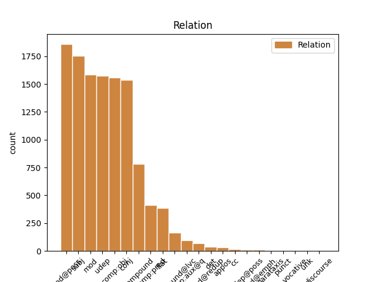
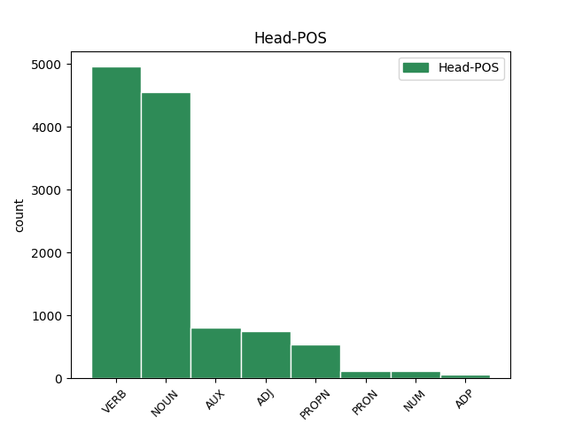
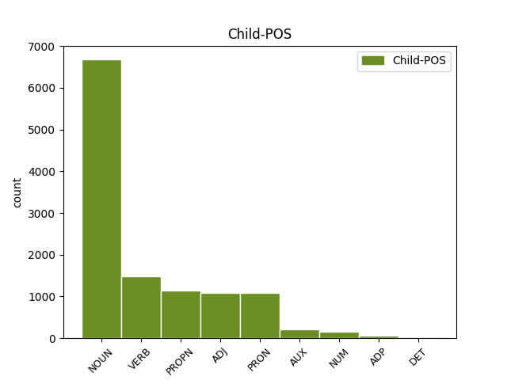

Distribution of features within this leaf



Agreement Rules sorted by frequency.
- When the dependent token is the modifer(mod@poss) of the head token, and the head token is NOUN and the dependent token is NOUN.
1 Üç _ _ _ _ 0 _ _ _
2 ocak _ _ _ _ 0 _ _ _
3 lı _ _ _ _ 0 _ _ _
4 demirci _ _ _ _ 0 _ _ _
5 dükkanı _ _ _ _ 0 _ _ _
6 deyip _ _ _ _ 0 _ _ _
7 geçme _ _ _ _ 0 _ _ _
8 , _ _ _ _ 0 _ _ _
9 fayton fayton NOUN Noun Case=Nom|Number=Sing|Person=3 10 mod@poss _ _
10 imalatından imalat NOUN Noun Case=Abl|Number=Sing|Number[psor]=Sing|Person=3|Person[psor]=3 0 _ _ _
11 zengin _ _ _ _ 0 _ _ _
12 bile _ _ _ _ 0 _ _ _
13 olmuşlar _ _ _ _ 0 _ _ _
14 . _ _ _ _ 0 _ _ _
1 Dondurmacıya dondurmacı NOUN Noun Case=Dat|Number=Sing|Person=3 3 udep _ _
2 beklemesini _ _ _ _ 0 _ _ _
3 söylediler söyle VERB Verb Aspect=Perf|Mood=Ind|Number=Plur|Person=3|Polarity=Pos|Tense=Past 0 _ _ _
4 . _ _ _ _ 0 _ _ _
1 Erdoğan'ın _ _ _ _ 0 _ _ _
2 milletvekili _ _ _ _ 0 _ _ _
3 ve _ _ _ _ 0 _ _ _
4 başbakan _ _ _ _ 0 _ _ _
5 olmasını _ _ _ _ 0 _ _ _
6 sağlayacak _ _ _ _ 0 _ _ _
7 düzenlemede _ _ _ _ 0 _ _ _
8 , _ _ _ _ 0 _ _ _
9 Sezer'in _ _ _ _ 0 _ _ _
10 karşı _ _ _ _ 0 _ _ _
11 çıktığı _ _ _ _ 0 _ _ _
12 , _ _ _ _ 0 _ _ _
13 doğrudan _ _ _ _ 0 _ _ _
14 başbakanlık _ _ _ _ 0 _ _ _
15 getirecek _ _ _ _ 0 _ _ _
16 yüzdokuz _ _ _ _ 0 _ _ _
17 . _ _ _ _ 0 _ _ _
18 madde _ _ _ _ 0 _ _ _
19 yerine _ _ _ _ 0 _ _ _
20 ara _ _ _ _ 0 _ _ _
21 seçimi _ _ _ _ 0 _ _ _
22 düzenleyen _ _ _ _ 0 _ _ _
23 yetmişsekiz _ _ _ _ 0 _ _ _
24 . _ _ _ _ 0 _ _ _
25 madde _ _ _ _ 0 _ _ _
26 üzerinde üzer NOUN Noun Case=Loc|Number=Sing|Number[psor]=Sing|Person=3|Person[psor]=3 27 mod _ _
27 değişiklik değişiklik NOUN Noun Case=Nom|Number=Sing|Person=3 0 _ _ _
28 yapacaklarını _ _ _ _ 0 _ _ _
29 belirten _ _ _ _ 0 _ _ _
30 Şahin _ _ _ _ 0 _ _ _
31 , _ _ _ _ 0 _ _ _
32 şu _ _ _ _ 0 _ _ _
33 mesajı _ _ _ _ 0 _ _ _
34 verdi _ _ _ _ 0 _ _ _
35 : _ _ _ _ 0 _ _ _
36 . _ _ _ _ 0 _ _ _
1 Oysa _ _ _ _ 0 _ _ _
2 , _ _ _ _ 0 _ _ _
3 beyaz _ _ _ _ 0 _ _ _
4 peynirin _ _ _ _ 0 _ _ _
5 böyle _ _ _ _ 0 _ _ _
6 bir _ _ _ _ 0 _ _ _
7 efsanesi efsane NOUN Noun Case=Nom|Number=Sing|Number[psor]=Sing|Person=3|Person[psor]=3 8 subj _ _
8 olsa ol VERB Verb Aspect=Perf|Mood=Des|Number=Sing|Person=3|Polarity=Pos|Tense=Pres 0 _ _ _
9 . _ _ _ _ 0 _ _ _
1 MART'I mart NOUN Noun Case=Acc|Number=Sing|Person=3 2 comp:obj _ _
2 BEKLİYORLARDI bekle VERB Verb Aspect=Prog|Mood=Ind|Number=Plur|Person=3|Polarity=Pos|Polite=Infm|Tense=Past 0 _ _ _
3 . _ _ _ _ 0 _ _ _
1 Erdoğan'ın _ _ _ _ 0 _ _ _
2 milletvekili milletvekili NOUN Noun Case=Nom|Number=Sing|Person=3 0 _ _ _
3 ve _ _ _ _ 0 _ _ _
4 başbakan başbakan NOUN Noun Case=Nom|Number=Sing|Person=3 2 conj _ _
5 olmasını _ _ _ _ 0 _ _ _
6 sağlayacak _ _ _ _ 0 _ _ _
7 düzenlemede _ _ _ _ 0 _ _ _
8 , _ _ _ _ 0 _ _ _
9 Sezer'in _ _ _ _ 0 _ _ _
10 karşı _ _ _ _ 0 _ _ _
11 çıktığı _ _ _ _ 0 _ _ _
12 , _ _ _ _ 0 _ _ _
13 doğrudan _ _ _ _ 0 _ _ _
14 başbakanlık _ _ _ _ 0 _ _ _
15 getirecek _ _ _ _ 0 _ _ _
16 yüzdokuz _ _ _ _ 0 _ _ _
17 . _ _ _ _ 0 _ _ _
18 madde _ _ _ _ 0 _ _ _
19 yerine _ _ _ _ 0 _ _ _
20 ara _ _ _ _ 0 _ _ _
21 seçimi _ _ _ _ 0 _ _ _
22 düzenleyen _ _ _ _ 0 _ _ _
23 yetmişsekiz _ _ _ _ 0 _ _ _
24 . _ _ _ _ 0 _ _ _
25 madde _ _ _ _ 0 _ _ _
26 üzerinde _ _ _ _ 0 _ _ _
27 değişiklik _ _ _ _ 0 _ _ _
28 yapacaklarını _ _ _ _ 0 _ _ _
29 belirten _ _ _ _ 0 _ _ _
30 Şahin _ _ _ _ 0 _ _ _
31 , _ _ _ _ 0 _ _ _
32 şu _ _ _ _ 0 _ _ _
33 mesajı _ _ _ _ 0 _ _ _
34 verdi _ _ _ _ 0 _ _ _
35 : _ _ _ _ 0 _ _ _
36 . _ _ _ _ 0 _ _ _
1 Yerleştir _ _ _ _ 0 _ _ _
2 yerleştirme _ _ _ _ 0 _ _ _
3 , _ _ _ _ 0 _ _ _
4 devşir devşir VERB Verb Aspect=Perf|Mood=Imp|Number=Sing|Person=2|Polarity=Pos|Tense=Pres 0 _ _ _
5 devşirme devşir VERB Verb Aspect=Perf|Mood=Imp|Number=Sing|Person=2|Polarity=Neg|Tense=Pres 4 conj _ _
6 sınavları _ _ _ _ 0 _ _ _
7 falan _ _ _ _ 0 _ _ _
8 filan _ _ _ _ 0 _ _ _
9 yok _ _ _ _ 0 _ _ _
10 ... _ _ _ _ 0 _ _ _
1 Geçici _ _ _ _ 0 _ _ _
2 bütçe bütçe NOUN Noun Case=Nom|Number=Sing|Person=3 0 _ _ _
3 tasarısı tasarı NOUN Noun Case=Nom|Number=Sing|Number[psor]=Sing|Person=3|Person[psor]=3 2 compound _ SpaceAfter=No
4 , _ _ _ _ 0 _ _ _
5 Meclis'e _ _ _ _ 0 _ _ _
6 sunuldu _ _ _ _ 0 _ _ _
7 . _ _ _ _ 0 _ _ _
1 Ancak _ _ _ _ 0 _ _ _
2 , _ _ _ _ 0 _ _ _
3 dün _ _ _ _ 0 _ _ _
4 bu _ _ _ _ 0 _ _ _
5 programı _ _ _ _ 0 _ _ _
6 Gül'ün _ _ _ _ 0 _ _ _
7 eşi _ _ _ _ 0 _ _ _
8 Hayrünnisa _ _ _ _ 0 _ _ _
9 Gül'ün _ _ _ _ 0 _ _ _
10 türbanı _ _ _ _ 0 _ _ _
11 olması _ _ _ _ 0 _ _ _
12 nedeniyle _ _ _ _ 0 _ _ _
13 gerçekleştirmeyen _ _ _ _ 0 _ _ _
14 ve _ _ _ _ 0 _ _ _
15 geleneği _ _ _ _ 0 _ _ _
16 bozan _ _ _ _ 0 _ _ _
17 Genelkurmay _ _ _ _ 0 _ _ _
18 Başkanı _ _ _ _ 0 _ _ _
19 Org _ _ _ _ 0 _ _ _
20 . _ _ _ _ 0 _ _ _
21 Hilmi _ _ _ _ 0 _ _ _
22 Özkök'ün _ _ _ _ 0 _ _ _
23 eşi _ _ _ _ 0 _ _ _
24 Özenç Özenç PROPN Prop Case=Nom|Number=Sing|Person=3 32 subj _ _
25 Özkök _ _ _ _ 0 _ _ _
26 , _ _ _ _ 0 _ _ _
27 YAŞ _ _ _ _ 0 _ _ _
28 üyelerinin _ _ _ _ 0 _ _ _
29 eşlerine _ _ _ _ 0 _ _ _
30 öğle _ _ _ _ 0 _ _ _
31 yemeği _ _ _ _ 0 _ _ _
32 vermedi ver VERB Verb Aspect=Perf|Mood=Ind|Number=Sing|Person=3|Polarity=Neg|Tense=Past 0 _ _ _
33 . _ _ _ _ 0 _ _ _
1 Ancak _ _ _ _ 0 _ _ _
2 , _ _ _ _ 0 _ _ _
3 dün _ _ _ _ 0 _ _ _
4 bu _ _ _ _ 0 _ _ _
5 programı _ _ _ _ 0 _ _ _
6 Gül'ün _ _ _ _ 0 _ _ _
7 eşi _ _ _ _ 0 _ _ _
8 Hayrünnisa _ _ _ _ 0 _ _ _
9 Gül'ün _ _ _ _ 0 _ _ _
10 türbanı _ _ _ _ 0 _ _ _
11 olması _ _ _ _ 0 _ _ _
12 nedeniyle _ _ _ _ 0 _ _ _
13 gerçekleştirmeyen _ _ _ _ 0 _ _ _
14 ve _ _ _ _ 0 _ _ _
15 geleneği _ _ _ _ 0 _ _ _
16 bozan _ _ _ _ 0 _ _ _
17 Genelkurmay _ _ _ _ 0 _ _ _
18 Başkanı _ _ _ _ 0 _ _ _
19 Org _ _ _ _ 0 _ _ _
20 . _ _ _ _ 0 _ _ _
21 Hilmi _ _ _ _ 0 _ _ _
22 Özkök'ün _ _ _ _ 0 _ _ _
23 eşi _ _ _ _ 0 _ _ _
24 Özenç _ _ _ _ 0 _ _ _
25 Özkök _ _ _ _ 0 _ _ _
26 , _ _ _ _ 0 _ _ _
27 YAŞ _ _ _ _ 0 _ _ _
28 üyelerinin üye NOUN Noun Case=Gen|Number=Sing|Number[psor]=Plur|Person=3|Person[psor]=3 29 mod@poss _ _
29 eşlerine eş ADJ NAdj Case=Dat|Number=Plur|Number[psor]=Plur|Person=3|Person[psor]=3 0 _ _ _
30 öğle _ _ _ _ 0 _ _ _
31 yemeği _ _ _ _ 0 _ _ _
32 vermedi _ _ _ _ 0 _ _ _
33 . _ _ _ _ 0 _ _ _
1 Bartın Bartın PROPN Prop Case=Nom|Number=Sing|Person=3 2 mod@poss _ _
2 gecesinden gece NOUN Noun Case=Abl|Number=Sing|Number[psor]=Sing|Person=3|Person[psor]=3 0 _ _ _
3 soğuk _ _ _ _ 0 _ _ _
4 bir _ _ _ _ 0 _ _ _
5 yel _ _ _ _ 0 _ _ _
6 esmeye _ _ _ _ 0 _ _ _
7 başlamıştı _ _ _ _ 0 _ _ _
8 . _ _ _ _ 0 _ _ _
1 Sen sen PRON Pers Case=Nom|Number=Sing|Person=2|PronType=Prs 2 subj _ _
2 geç geç VERB Verb Aspect=Perf|Mood=Imp|Number=Sing|Person=2|Polarity=Pos|Tense=Pres 0 _ _ _
3 yerine _ _ _ _ 0 _ _ _
4 otur _ _ _ _ 0 _ _ _
5 ! _ _ _ _ 0 _ _ _
1 Erdoğan'ın _ _ _ _ 0 _ _ _
2 milletvekili _ _ _ _ 0 _ _ _
3 ve _ _ _ _ 0 _ _ _
4 başbakan _ _ _ _ 0 _ _ _
5 olmasını _ _ _ _ 0 _ _ _
6 sağlayacak _ _ _ _ 0 _ _ _
7 düzenlemede _ _ _ _ 0 _ _ _
8 , _ _ _ _ 0 _ _ _
9 Sezer'in _ _ _ _ 0 _ _ _
10 karşı _ _ _ _ 0 _ _ _
11 çıktığı _ _ _ _ 0 _ _ _
12 , _ _ _ _ 0 _ _ _
13 doğrudan _ _ _ _ 0 _ _ _
14 başbakanlık _ _ _ _ 0 _ _ _
15 getirecek _ _ _ _ 0 _ _ _
16 yüzdokuz _ _ _ _ 0 _ _ _
17 . _ _ _ _ 0 _ _ _
18 madde _ _ _ _ 0 _ _ _
19 yerine _ _ _ _ 0 _ _ _
20 ara _ _ _ _ 0 _ _ _
21 seçimi _ _ _ _ 0 _ _ _
22 düzenleyen _ _ _ _ 0 _ _ _
23 yetmişsekiz _ _ _ _ 0 _ _ _
24 . _ _ _ _ 0 _ _ _
25 madde _ _ _ _ 0 _ _ _
26 üzerinde _ _ _ _ 0 _ _ _
27 değişiklik _ _ _ _ 0 _ _ _
28 yapacaklarını _ _ _ _ 0 _ _ _
29 belirten _ _ _ _ 0 _ _ _
30 Şahin _ _ _ _ 0 _ _ _
31 , _ _ _ _ 0 _ _ _
32 şu _ _ _ _ 0 _ _ _
33 mesajı mesaj NOUN Noun Case=Acc|Number=Sing|Person=3 0 _ _ _
34 verdi ver VERB Verb Aspect=Perf|Mood=Ind|Number=Sing|Person=3|Polarity=Pos|Tense=Past 33 compound _ SpaceAfter=No
35 : _ _ _ _ 0 _ _ _
36 . _ _ _ _ 0 _ _ _
1 Ancak _ _ _ _ 0 _ _ _
2 , _ _ _ _ 0 _ _ _
3 dün _ _ _ _ 0 _ _ _
4 bu _ _ _ _ 0 _ _ _
5 programı _ _ _ _ 0 _ _ _
6 Gül'ün _ _ _ _ 0 _ _ _
7 eşi _ _ _ _ 0 _ _ _
8 Hayrünnisa _ _ _ _ 0 _ _ _
9 Gül'ün _ _ _ _ 0 _ _ _
10 türbanı _ _ _ _ 0 _ _ _
11 olması _ _ _ _ 0 _ _ _
12 nedeniyle _ _ _ _ 0 _ _ _
13 gerçekleştirmeyen _ _ _ _ 0 _ _ _
14 ve _ _ _ _ 0 _ _ _
15 geleneği _ _ _ _ 0 _ _ _
16 bozan _ _ _ _ 0 _ _ _
17 Genelkurmay _ _ _ _ 0 _ _ _
18 Başkanı _ _ _ _ 0 _ _ _
19 Org _ _ _ _ 0 _ _ _
20 . _ _ _ _ 0 _ _ _
21 Hilmi _ _ _ _ 0 _ _ _
22 Özkök'ün _ _ _ _ 0 _ _ _
23 eşi _ _ _ _ 0 _ _ _
24 Özenç Özenç PROPN Prop Case=Nom|Number=Sing|Person=3 0 _ _ _
25 Özkök Özkök PROPN Prop Case=Nom|Number=Sing|Person=3 24 flat _ SpaceAfter=No
26 , _ _ _ _ 0 _ _ _
27 YAŞ _ _ _ _ 0 _ _ _
28 üyelerinin _ _ _ _ 0 _ _ _
29 eşlerine _ _ _ _ 0 _ _ _
30 öğle _ _ _ _ 0 _ _ _
31 yemeği _ _ _ _ 0 _ _ _
32 vermedi _ _ _ _ 0 _ _ _
33 . _ _ _ _ 0 _ _ _
1 Yerleştir _ _ _ _ 0 _ _ _
2 yerleştirme _ _ _ _ 0 _ _ _
3 , _ _ _ _ 0 _ _ _
4 devşir _ _ _ _ 0 _ _ _
5 devşirme _ _ _ _ 0 _ _ _
6 sınavları sınav NOUN Noun Case=Nom|Number=Plur|Number[psor]=Sing|Person=3|Person[psor]=3 0 _ _ _
7 falan falan ADJ NAdj Case=Nom|Number=Sing|Person=3 6 mod _ _
8 filan _ _ _ _ 0 _ _ _
9 yok _ _ _ _ 0 _ _ _
10 ... _ _ _ _ 0 _ _ _
1 Ancak _ _ _ _ 0 _ _ _
2 , _ _ _ _ 0 _ _ _
3 dün _ _ _ _ 0 _ _ _
4 bu _ _ _ _ 0 _ _ _
5 programı _ _ _ _ 0 _ _ _
6 Gül'ün _ _ _ _ 0 _ _ _
7 eşi _ _ _ _ 0 _ _ _
8 Hayrünnisa _ _ _ _ 0 _ _ _
9 Gül'ün _ _ _ _ 0 _ _ _
10 türbanı _ _ _ _ 0 _ _ _
11 olması _ _ _ _ 0 _ _ _
12 nedeniyle _ _ _ _ 0 _ _ _
13 gerçekleştirmeyen _ _ _ _ 0 _ _ _
14 ve _ _ _ _ 0 _ _ _
15 geleneği _ _ _ _ 0 _ _ _
16 bozan _ _ _ _ 0 _ _ _
17 Genelkurmay _ _ _ _ 0 _ _ _
18 Başkanı _ _ _ _ 0 _ _ _
19 Org _ _ _ _ 0 _ _ _
20 . _ _ _ _ 0 _ _ _
21 Hilmi _ _ _ _ 0 _ _ _
22 Özkök'ün _ _ _ _ 0 _ _ _
23 eşi _ _ _ _ 0 _ _ _
24 Özenç _ _ _ _ 0 _ _ _
25 Özkök _ _ _ _ 0 _ _ _
26 , _ _ _ _ 0 _ _ _
27 YAŞ _ _ _ _ 0 _ _ _
28 üyelerinin _ _ _ _ 0 _ _ _
29 eşlerine eş ADJ NAdj Case=Dat|Number=Plur|Number[psor]=Plur|Person=3|Person[psor]=3 32 mod _ _
30 öğle _ _ _ _ 0 _ _ _
31 yemeği _ _ _ _ 0 _ _ _
32 vermedi ver VERB Verb Aspect=Perf|Mood=Ind|Number=Sing|Person=3|Polarity=Neg|Tense=Past 0 _ _ _
33 . _ _ _ _ 0 _ _ _
1 Tabii _ _ _ _ 0 _ _ _
2 bir _ _ _ _ 0 _ _ _
3 ayağım ayak NOUN Noun Case=Nom|Number=Sing|Number[psor]=Sing|Person=3|Person[psor]=1 5 subj _ _
4 Ankara'da _ _ _ _ 0 _ _ _
5 idi i AUX Postp Number=Sing|Person=3|Tense=Past 0 _ _ _
6 . _ _ _ _ 0 _ _ _
1 - _ _ _ _ 0 _ _ _
2 Bu _ _ _ _ 0 _ _ _
3 senin _ _ _ _ 0 _ _ _
4 şalın şal NOUN Noun Case=Gen|Number=Sing|Person=3 5 comp:pred _ _
5 mış i AUX Zero Aspect=Perf|Evident=Nfh|Mood=Ind|Number=Sing|Person=3|Tense=Past 0 _ _ _
6 . _ _ _ _ 0 _ _ _
1 Bağımlı _ _ _ _ 0 _ _ _
2 kişinin _ _ _ _ 0 _ _ _
3 beyninde _ _ _ _ 0 _ _ _
4 duygular _ _ _ _ 0 _ _ _
5 eşit _ _ _ _ 0 _ _ _
6 tir _ _ _ _ 0 _ _ _
7 acı _ _ _ _ 0 _ _ _
8 çekmek _ _ _ _ 0 _ _ _
9 formülü _ _ _ _ 0 _ _ _
10 var var ADJ NAdj Case=Nom|Number=Sing|Person=3 11 comp:pred _ _
11 dır i AUX Zero Aspect=Perf|Mood=Gen|Number=Sing|Person=3|Tense=Pres 0 _ _ _
12 . _ _ _ _ 0 _ _ _
1 Kan _ _ _ _ 0 _ _ _
2 bağı _ _ _ _ 0 _ _ _
3 , _ _ _ _ 0 _ _ _
4 kardeşlik _ _ _ _ 0 _ _ _
5 , _ _ _ _ 0 _ _ _
6 öfke _ _ _ _ 0 _ _ _
7 , _ _ _ _ 0 _ _ _
8 hırs _ _ _ _ 0 _ _ _
9 , _ _ _ _ 0 _ _ _
10 şiddet _ _ _ _ 0 _ _ _
11 , _ _ _ _ 0 _ _ _
12 savaş _ _ _ _ 0 _ _ _
13 , _ _ _ _ 0 _ _ _
14 suç _ _ _ _ 0 _ _ _
15 , _ _ _ _ 0 _ _ _
16 cinsellik _ _ _ _ 0 _ _ _
17 gibi _ _ _ _ 0 _ _ _
18 kırmızılıklar kırmızılık NOUN Noun Case=Nom|Number=Plur|Person=3 20 subj _ _
19 sermayelerinin _ _ _ _ 0 _ _ _
20 oluşturucusu oluşturucu NOUN Noun Case=Nom|Number=Sing|Number[psor]=Sing|Person=3|Person[psor]=3 0 _ _ _
21 ve _ _ _ _ 0 _ _ _
22 dayanağı _ _ _ _ 0 _ _ _
23 . _ _ _ _ 0 _ _ _
1 Hiç _ _ _ _ 0 _ _ _
2 düşünmeden _ _ _ _ 0 _ _ _
3 adamın _ _ _ _ 0 _ _ _
4 teklifini teklif NOUN Noun Case=Acc|Number=Sing|Number[psor]=Sing|Person=3|Person[psor]=3 5 comp:obj _ _
5 kabul kabul NOUN Noun Case=Nom|Number=Sing|Person=3 0 _ _ _
6 etmiş _ _ _ _ 0 _ _ _
7 . _ _ _ _ 0 _ _ _
1 Hiç _ _ _ _ 0 _ _ _
2 düşünmeden _ _ _ _ 0 _ _ _
3 adamın _ _ _ _ 0 _ _ _
4 teklifini _ _ _ _ 0 _ _ _
5 kabul kabul NOUN Noun Case=Nom|Number=Sing|Person=3 0 _ _ _
6 etmiş et VERB Verb Aspect=Perf|Evident=Nfh|Mood=Ind|Number=Sing|Person=3|Polarity=Pos|Tense=Past 5 compound@lvc _ SpaceAfter=No
7 . _ _ _ _ 0 _ _ _
1 Ancak _ _ _ _ 0 _ _ _
2 , _ _ _ _ 0 _ _ _
3 dün _ _ _ _ 0 _ _ _
4 bu _ _ _ _ 0 _ _ _
5 programı _ _ _ _ 0 _ _ _
6 Gül'ün _ _ _ _ 0 _ _ _
7 eşi _ _ _ _ 0 _ _ _
8 Hayrünnisa _ _ _ _ 0 _ _ _
9 Gül'ün _ _ _ _ 0 _ _ _
10 türbanı _ _ _ _ 0 _ _ _
11 olması _ _ _ _ 0 _ _ _
12 nedeniyle _ _ _ _ 0 _ _ _
13 gerçekleştirmeyen _ _ _ _ 0 _ _ _
14 ve _ _ _ _ 0 _ _ _
15 geleneği _ _ _ _ 0 _ _ _
16 bozan _ _ _ _ 0 _ _ _
17 Genelkurmay _ _ _ _ 0 _ _ _
18 Başkanı _ _ _ _ 0 _ _ _
19 Org _ _ _ _ 0 _ _ _
20 . _ _ _ _ 0 _ _ _
21 Hilmi _ _ _ _ 0 _ _ _
22 Özkök'ün _ _ _ _ 0 _ _ _
23 eşi _ _ _ _ 0 _ _ _
24 Özenç _ _ _ _ 0 _ _ _
25 Özkök _ _ _ _ 0 _ _ _
26 , _ _ _ _ 0 _ _ _
27 YAŞ yaş ADJ NAdj Case=Nom|Number=Sing|Person=3 28 mod@poss _ _
28 üyelerinin üye NOUN Noun Case=Gen|Number=Sing|Number[psor]=Plur|Person=3|Person[psor]=3 0 _ _ _
29 eşlerine _ _ _ _ 0 _ _ _
30 öğle _ _ _ _ 0 _ _ _
31 yemeği _ _ _ _ 0 _ _ _
32 vermedi _ _ _ _ 0 _ _ _
33 . _ _ _ _ 0 _ _ _
1 Bir _ _ _ _ 0 _ _ _
2 dilim _ _ _ _ 0 _ _ _
3 ekmeğe _ _ _ _ 0 _ _ _
4 muhtaç _ _ _ _ 0 _ _ _
5 ız _ _ _ _ 0 _ _ _
6 , _ _ _ _ 0 _ _ _
7 diye _ _ _ _ 0 _ _ _
8 yanıtlamış yanıtla VERB Verb Aspect=Perf|Evident=Nfh|Mood=Ind|Number=Sing|Person=3|Polarity=Pos|Tense=Past 0 _ _ _
9 küçük _ _ _ _ 0 _ _ _
10 kız kız ADJ NAdj Case=Nom|Number=Sing|Person=3 8 subj _ SpaceAfter=No
11 . _ _ _ _ 0 _ _ _
1 Mebrure _ _ _ _ 0 _ _ _
2 bir _ _ _ _ 0 _ _ _
3 mektup _ _ _ _ 0 _ _ _
4 yazdı yaz VERB Verb Aspect=Perf|Mood=Ind|Number=Sing|Person=3|Polarity=Pos|Tense=Past 0 _ _ _
5 ona o PRON Pers Case=Dat|Number=Sing|Person=3|PronType=Prs 4 udep _ SpaceAfter=No
6 . _ _ _ _ 0 _ _ _
1 Bunlar _ _ _ _ 0 _ _ _
2 olup _ _ _ _ 0 _ _ _
3 biterken _ _ _ _ 0 _ _ _
4 küçük _ _ _ _ 0 _ _ _
5 sarışın _ _ _ _ 0 _ _ _
6 çocuk _ _ _ _ 0 _ _ _
7 , _ _ _ _ 0 _ _ _
8 kucağında _ _ _ _ 0 _ _ _
9 , _ _ _ _ 0 _ _ _
10 bacaklarının _ _ _ _ 0 _ _ _
11 arasına _ _ _ _ 0 _ _ _
12 sıkıştırdığı _ _ _ _ 0 _ _ _
13 darbukaya _ _ _ _ 0 _ _ _
14 sol _ _ _ _ 0 _ _ _
15 eliyle _ _ _ _ 0 _ _ _
16 hiç _ _ _ _ 0 _ _ _
17 ses _ _ _ _ 0 _ _ _
18 çıkarmadan _ _ _ _ 0 _ _ _
19 , _ _ _ _ 0 _ _ _
20 okşarcasına okşa VERB Verb Aspect=Hab|Mood=Ind|Number=Sing|Person=3|Polarity=Pos|Tense=Pres|VerbForm=Conv 21 mod _ _
21 vuruyor vur VERB Verb Aspect=Prog|Mood=Ind|Number=Sing|Person=3|Polarity=Pos|Polite=Infm|Tense=Pres 0 _ _ _
22 , _ _ _ _ 0 _ _ _
23 sağ _ _ _ _ 0 _ _ _
24 eliyle _ _ _ _ 0 _ _ _
25 de _ _ _ _ 0 _ _ _
26 tabağında _ _ _ _ 0 _ _ _
27 kileri _ _ _ _ 0 _ _ _
28 ağzına _ _ _ _ 0 _ _ _
29 tıkıştırıyordu _ _ _ _ 0 _ _ _
30 . _ _ _ _ 0 _ _ _
1 Belgin Belgin PROPN Prop Case=Nom|Number=Sing|Person=3 0 _ _ _
2 Dorukları doruk NOUN Noun Case=Acc|Number=Plur|Person=3 1 flat _ _
3 da _ _ _ _ 0 _ _ _
4 gittiğimiz _ _ _ _ 0 _ _ _
5 yere _ _ _ _ 0 _ _ _
6 götürüyoruz _ _ _ _ 0 _ _ _
7 . _ _ _ _ 0 _ _ _
1 Gerçi _ _ _ _ 0 _ _ _
2 ben _ _ _ _ 0 _ _ _
3 kendi kendi PRON Reflex Case=Nom|Number=Sing|Number[psor]=Sing|Person=3|Person[psor]=3|Reflex=Yes 5 mod _ _
4 kendime _ _ _ _ 0 _ _ _
5 idare idare NOUN Noun Case=Nom|Number=Sing|Person=3 0 _ _ _
6 ederdim _ _ _ _ 0 _ _ _
7 ama _ _ _ _ 0 _ _ _
8 şu _ _ _ _ 0 _ _ _
9 dersler _ _ _ _ 0 _ _ _
10 yok _ _ _ _ 0 _ _ _
11 mu _ _ _ _ 0 _ _ _
12 , _ _ _ _ 0 _ _ _
13 o _ _ _ _ 0 _ _ _
14 konuda _ _ _ _ 0 _ _ _
15 kesinlikle _ _ _ _ 0 _ _ _
16 yardıma _ _ _ _ 0 _ _ _
17 ihtiyacım _ _ _ _ 0 _ _ _
18 vardı _ _ _ _ 0 _ _ _
19 . _ _ _ _ 0 _ _ _
1 Harun _ _ _ _ 0 _ _ _
2 Yahya _ _ _ _ 0 _ _ _
3 ve _ _ _ _ 0 _ _ _
4 yazarlarının _ _ _ _ 0 _ _ _
5 herbiri _ _ _ _ 0 _ _ _
6 sanki _ _ _ _ 0 _ _ _
7 reenkarnasyona _ _ _ _ 0 _ _ _
8 uğramış _ _ _ _ 0 _ _ _
9 Berkeley _ _ _ _ 0 _ _ _
10 ! _ _ _ _ 0 _ _ _
11 İlgili _ _ _ _ 0 _ _ _
12 okura _ _ _ _ 0 _ _ _
13 , _ _ _ _ 0 _ _ _
14 Bertrand _ _ _ _ 0 _ _ _
15 Russell'ın _ _ _ _ 0 _ _ _
16 Türkçe'ye _ _ _ _ 0 _ _ _
17 de _ _ _ _ 0 _ _ _
18 çevrilmiş _ _ _ _ 0 _ _ _
19 olan _ _ _ _ 0 _ _ _
20 The The PROPN Prop Case=Nom|Number=Sing|Person=3 25 mod _ _
21 History _ _ _ _ 0 _ _ _
22 of _ _ _ _ 0 _ _ _
23 Western _ _ _ _ 0 _ _ _
24 Philosophy _ _ _ _ 0 _ _ _
25 ad ad NOUN Noun Case=Nom|Number=Sing|Person=3 0 _ _ _
26 lı _ _ _ _ 0 _ _ _
27 kitabının _ _ _ _ 0 _ _ _
28 Berkeley _ _ _ _ 0 _ _ _
29 bölümünü _ _ _ _ 0 _ _ _
30 okumalarını _ _ _ _ 0 _ _ _
31 salık _ _ _ _ 0 _ _ _
32 veririm _ _ _ _ 0 _ _ _
33 . _ _ _ _ 0 _ _ _
1 Yapı _ _ _ _ 0 _ _ _
2 ve _ _ _ _ 0 _ _ _
3 Kredi _ _ _ _ 0 _ _ _
4 Bankası _ _ _ _ 0 _ _ _
5 , _ _ _ _ 0 _ _ _
6 sermaye _ _ _ _ 0 _ _ _
7 artırımına _ _ _ _ 0 _ _ _
8 katıldığı _ _ _ _ 0 _ _ _
9 parayla _ _ _ _ 0 _ _ _
10 şirkete şirket NOUN Noun Case=Dat|Number=Sing|Person=3 15 udep _ _
11 yüzde _ _ _ _ 0 _ _ _
12 yirmibeş _ _ _ _ 0 _ _ _
13 'lik _ _ _ _ 0 _ _ _
14 payla _ _ _ _ 0 _ _ _
15 ortak ortak ADJ NAdj Case=Nom|Number=Sing|Person=3 0 _ _ _
16 oldu _ _ _ _ 0 _ _ _
17 . _ _ _ _ 0 _ _ _
1 Çiller Çiller PROPN Prop Case=Nom|Number=Sing|Person=3 0 _ _ _
2 , _ _ _ _ 0 _ _ _
3 Karayalçın Karayalçın PROPN Prop Case=Nom|Number=Sing|Person=3 1 conj _ SpaceAfter=No
4 , _ _ _ _ 0 _ _ _
5 Boyner _ _ _ _ 0 _ _ _
6 de _ _ _ _ 0 _ _ _
7 yok _ _ _ _ 0 _ _ _
8 tu _ _ _ _ 0 _ _ _
9 . _ _ _ _ 0 _ _ _
1 Telaşla _ _ _ _ 0 _ _ _
2 ayağa ayak NOUN Noun Case=Dat|Number=Sing|Person=3 0 _ _ _
3 fırladı _ _ _ _ 0 _ _ _
4 , _ _ _ _ 0 _ _ _
5 telefona _ _ _ _ 0 _ _ _
6 koşarken _ _ _ _ 0 _ _ _
7 kapı _ _ _ _ 0 _ _ _
8 vuruldu vurul VERB Verb Aspect=Perf|Mood=Ind|Number=Sing|Person=3|Polarity=Pos|Tense=Past 2 conj _ SpaceAfter=No
9 . _ _ _ _ 0 _ _ _
1 Daha _ _ _ _ 0 _ _ _
2 doğrusu _ _ _ _ 0 _ _ _
3 , _ _ _ _ 0 _ _ _
4 kazada _ _ _ _ 0 _ _ _
5 ki _ _ _ _ 0 _ _ _
6 adam _ _ _ _ 0 _ _ _
7 zihninde _ _ _ _ 0 _ _ _
8 kendisine _ _ _ _ 0 _ _ _
9 otobüsün _ _ _ _ 0 _ _ _
10 çarptığına _ _ _ _ 0 _ _ _
11 ilişkin _ _ _ _ 0 _ _ _
12 ses _ _ _ _ 0 _ _ _
13 , _ _ _ _ 0 _ _ _
14 görüntü _ _ _ _ 0 _ _ _
15 , _ _ _ _ 0 _ _ _
16 sertlik _ _ _ _ 0 _ _ _
17 hislerini _ _ _ _ 0 _ _ _
18 almaya _ _ _ _ 0 _ _ _
19 başladığı _ _ _ _ 0 _ _ _
20 anda _ _ _ _ 0 _ _ _
21 , _ _ _ _ 0 _ _ _
22 bu _ _ _ _ 0 _ _ _
23 hislerin _ _ _ _ 0 _ _ _
24 tamamını tamam ADJ NAdj Case=Acc|Number=Sing|Number[psor]=Sing|Person=3|Person[psor]=3 42 comp:obj _ SpaceAfter=No
25 , _ _ _ _ 0 _ _ _
26 bir _ _ _ _ 0 _ _ _
27 müzik _ _ _ _ 0 _ _ _
28 teybine _ _ _ _ 0 _ _ _
29 bağlanan _ _ _ _ 0 _ _ _
30 iki _ _ _ _ 0 _ _ _
31 ayrı _ _ _ _ 0 _ _ _
32 kolondan _ _ _ _ 0 _ _ _
33 aynı _ _ _ _ 0 _ _ _
34 şarkının _ _ _ _ 0 _ _ _
35 dinlenmesine _ _ _ _ 0 _ _ _
36 benzer _ _ _ _ 0 _ _ _
37 biçimde _ _ _ _ 0 _ _ _
38 , _ _ _ _ 0 _ _ _
39 Politzer _ _ _ _ 0 _ _ _
40 de _ _ _ _ 0 _ _ _
41 almaya _ _ _ _ 0 _ _ _
42 başlayacaktır başla VERB Verb Aspect=Perf|Mood=Gen|Number=Sing|Person=3|Polarity=Pos|Tense=Fut 0 _ _ _
43 . _ _ _ _ 0 _ _ _
1 Erdoğan'ın _ _ _ _ 0 _ _ _
2 milletvekili _ _ _ _ 0 _ _ _
3 ve _ _ _ _ 0 _ _ _
4 başbakan _ _ _ _ 0 _ _ _
5 olmasını _ _ _ _ 0 _ _ _
6 sağlayacak _ _ _ _ 0 _ _ _
7 düzenlemede _ _ _ _ 0 _ _ _
8 , _ _ _ _ 0 _ _ _
9 Sezer'in _ _ _ _ 0 _ _ _
10 karşı _ _ _ _ 0 _ _ _
11 çıktığı _ _ _ _ 0 _ _ _
12 , _ _ _ _ 0 _ _ _
13 doğrudan _ _ _ _ 0 _ _ _
14 başbakanlık _ _ _ _ 0 _ _ _
15 getirecek _ _ _ _ 0 _ _ _
16 yüzdokuz _ _ _ _ 0 _ _ _
17 . _ _ _ _ 0 _ _ _
18 madde _ _ _ _ 0 _ _ _
19 yerine _ _ _ _ 0 _ _ _
20 ara _ _ _ _ 0 _ _ _
21 seçimi _ _ _ _ 0 _ _ _
22 düzenleyen _ _ _ _ 0 _ _ _
23 yetmişsekiz _ _ _ _ 0 _ _ _
24 . _ _ _ _ 0 _ _ _
25 madde _ _ _ _ 0 _ _ _
26 üzerinde _ _ _ _ 0 _ _ _
27 değişiklik _ _ _ _ 0 _ _ _
28 yapacaklarını _ _ _ _ 0 _ _ _
29 belirten _ _ _ _ 0 _ _ _
30 Şahin Şahin PROPN Prop Case=Nom|Number=Sing|Person=3 33 subj _ SpaceAfter=No
31 , _ _ _ _ 0 _ _ _
32 şu _ _ _ _ 0 _ _ _
33 mesajı mesaj NOUN Noun Case=Acc|Number=Sing|Person=3 0 _ _ _
34 verdi _ _ _ _ 0 _ _ _
35 : _ _ _ _ 0 _ _ _
36 . _ _ _ _ 0 _ _ _
1 İkimizden _ _ _ _ 0 _ _ _
2 başka _ _ _ _ 0 _ _ _
3 kimse _ _ _ _ 0 _ _ _
4 bilmeyecek bil VERB Verb Aspect=Perf|Mood=Ind|Number=Sing|Person=3|Polarity=Neg|Tense=Fut 8 comp:obj _ _
5 tamam _ _ _ _ 0 _ _ _
6 mı _ _ _ _ 0 _ _ _
7 ? _ _ _ _ 0 _ _ _
8 dedi de VERB Verb Aspect=Perf|Mood=Ind|Number=Sing|Person=3|Polarity=Pos|Tense=Past 0 _ _ _
9 . _ _ _ _ 0 _ _ _
1 Pamuk pamuk NOUN Noun Case=Nom|Number=Sing|Person=3 0 _ _ _
2 Prenses prenses NOUN Noun Case=Nom|Number=Sing|Person=3 1 flat _ _
3 masalının _ _ _ _ 0 _ _ _
4 üvey _ _ _ _ 0 _ _ _
5 babaya _ _ _ _ 0 _ _ _
6 uyarlanması _ _ _ _ 0 _ _ _
7 olmuş _ _ _ _ 0 _ _ _
8 bence _ _ _ _ 0 _ _ _
9 . _ _ _ _ 0 _ _ _
1 Kendimizi kendi PRON Reflex Case=Acc|Number=Plur|Number[psor]=Plur|Person=1|Person[psor]=1|Reflex=Yes 3 comp:obj _ _
2 bir _ _ _ _ 0 _ _ _
3 yoklayalım yokla VERB Verb Aspect=Perf|Mood=Opt|Number=Plur|Person=1|Polarity=Pos|Tense=Pres 0 _ _ _
4 . _ _ _ _ 0 _ _ _
1 Geçici _ _ _ _ 0 _ _ _
2 bütçe _ _ _ _ 0 _ _ _
3 tasarısı _ _ _ _ 0 _ _ _
4 , _ _ _ _ 0 _ _ _
5 Meclis'e Meclis PROPN Prop Case=Dat|Number=Sing|Person=3 6 udep _ _
6 sunuldu sun VERB Verb Aspect=Perf|Mood=Ind|Number=Sing|Person=3|Polarity=Pos|Tense=Past|Voice=Pass 0 _ _ _
7 . _ _ _ _ 0 _ _ _
1 Ayağımıza _ _ _ _ 0 _ _ _
2 , _ _ _ _ 0 _ _ _
3 bacağımıza _ _ _ _ 0 _ _ _
4 , _ _ _ _ 0 _ _ _
5 çenemize _ _ _ _ 0 _ _ _
6 , _ _ _ _ 0 _ _ _
7 hayatımıza _ _ _ _ 0 _ _ _
8 , _ _ _ _ 0 _ _ _
9 bir _ _ _ _ 0 _ _ _
10 hareket _ _ _ _ 0 _ _ _
11 geldi gel VERB Verb Aspect=Perf|Mood=Ind|Number=Sing|Person=3|Polarity=Pos|Tense=Past 0 _ _ _
12 , _ _ _ _ 0 _ _ _
13 bir _ _ _ _ 0 _ _ _
14 hareket hareket NOUN Noun Case=Nom|Number=Sing|Person=3 11 conj _ SpaceAfter=No
15 ... _ _ _ _ 0 _ _ _
1 Ben _ _ _ _ 0 _ _ _
2 de _ _ _ _ 0 _ _ _
3 o _ _ _ _ 0 _ _ _
4 gece _ _ _ _ 0 _ _ _
5 kardeşlerimin _ _ _ _ 0 _ _ _
6 yatma _ _ _ _ 0 _ _ _
7 saati _ _ _ _ 0 _ _ _
8 gelene _ _ _ _ 0 _ _ _
9 kadar _ _ _ _ 0 _ _ _
10 uzun _ _ _ _ 0 _ _ _
11 uzun _ _ _ _ 0 _ _ _
12 köpeğimizi _ _ _ _ 0 _ _ _
13 anlattım _ _ _ _ 0 _ _ _
14 onlara _ _ _ _ 0 _ _ _
15 , _ _ _ _ 0 _ _ _
16 ne _ _ _ _ 0 _ _ _
17 de _ _ _ _ 0 _ _ _
18 olsa _ _ _ _ 0 _ _ _
19 o o PRON Pers Case=Nom|Number=Sing|Person=3|PronType=Prs 23 subj _ _
20 artık _ _ _ _ 0 _ _ _
21 evimizin _ _ _ _ 0 _ _ _
22 köpeği _ _ _ _ 0 _ _ _
23 ydi i AUX Zero Aspect=Perf|Mood=Ind|Number=Sing|Person=3|Tense=Past 0 _ _ _
24 . _ _ _ _ 0 _ _ _
1 Heyette _ _ _ _ 0 _ _ _
2 yer _ _ _ _ 0 _ _ _
3 alan _ _ _ _ 0 _ _ _
4 CHP _ _ _ _ 0 _ _ _
5 İzmir _ _ _ _ 0 _ _ _
6 Milletvekili _ _ _ _ 0 _ _ _
7 Erdal _ _ _ _ 0 _ _ _
8 Karademir _ _ _ _ 0 _ _ _
9 , _ _ _ _ 0 _ _ _
10 ziyaret _ _ _ _ 0 _ _ _
11 sırasında _ _ _ _ 0 _ _ _
12 , _ _ _ _ 0 _ _ _
13 üç _ _ _ _ 0 _ _ _
14 ay _ _ _ _ 0 _ _ _
15 önce _ _ _ _ 0 _ _ _
16 üniversite _ _ _ _ 0 _ _ _
17 eğitimi _ _ _ _ 0 _ _ _
18 için _ _ _ _ 0 _ _ _
19 Kıbrıs'a _ _ _ _ 0 _ _ _
20 gönderdiği _ _ _ _ 0 _ _ _
21 oğlu oğul NOUN Noun Case=Nom|Number=Sing|Number[psor]=Sing|Person=3|Person[psor]=3 22 mod _ _
22 Utku Utku PROPN Prop Case=Nom|Number=Sing|Person=3 0 _ _ _
23 ile _ _ _ _ 0 _ _ _
24 buluştu _ _ _ _ 0 _ _ _
25 . _ _ _ _ 0 _ _ _
1 Bağımlı _ _ _ _ 0 _ _ _
2 kişinin _ _ _ _ 0 _ _ _
3 beyninde beyin NOUN Noun Case=Loc|Number=Sing|Number[psor]=Sing|Person=3|Person[psor]=3 11 udep _ _
4 duygular _ _ _ _ 0 _ _ _
5 eşit _ _ _ _ 0 _ _ _
6 tir _ _ _ _ 0 _ _ _
7 acı _ _ _ _ 0 _ _ _
8 çekmek _ _ _ _ 0 _ _ _
9 formülü _ _ _ _ 0 _ _ _
10 var _ _ _ _ 0 _ _ _
11 dır i AUX Zero Aspect=Perf|Mood=Gen|Number=Sing|Person=3|Tense=Pres 0 _ _ _
12 . _ _ _ _ 0 _ _ _
1 ANAP _ _ _ _ 0 _ _ _
2 İstanbul İstanbul PROPN Prop Case=Nom|Number=Sing|Person=3 0 _ _ _
3 İl il NOUN Noun Case=Nom|Number=Sing|Person=3 2 compound _ _
4 Benokan _ _ _ _ 0 _ _ _
5 basın _ _ _ _ 0 _ _ _
6 toplantısına _ _ _ _ 0 _ _ _
7 Çelebi'nin _ _ _ _ 0 _ _ _
8 yanı _ _ _ _ 0 _ _ _
9 sıra _ _ _ _ 0 _ _ _
10 , _ _ _ _ 0 _ _ _
11 diğer _ _ _ _ 0 _ _ _
12 genel _ _ _ _ 0 _ _ _
13 başkan _ _ _ _ 0 _ _ _
14 adayları _ _ _ _ 0 _ _ _
15 Lütfullah _ _ _ _ 0 _ _ _
16 Kayalar _ _ _ _ 0 _ _ _
17 ve _ _ _ _ 0 _ _ _
18 Ali _ _ _ _ 0 _ _ _
19 Talip _ _ _ _ 0 _ _ _
20 Özdemir _ _ _ _ 0 _ _ _
21 de _ _ _ _ 0 _ _ _
22 katıldı _ _ _ _ 0 _ _ _
23 . _ _ _ _ 0 _ _ _
1 Bağımlı _ _ _ _ 0 _ _ _
2 kişinin _ _ _ _ 0 _ _ _
3 beyninde _ _ _ _ 0 _ _ _
4 duygular _ _ _ _ 0 _ _ _
5 eşit eşit ADJ NAdj Case=Nom|Number=Sing|Person=3 0 _ _ _
6 tir _ _ _ _ 0 _ _ _
7 acı acı ADJ NAdj Case=Nom|Number=Sing|Person=3 5 mod _ _
8 çekmek _ _ _ _ 0 _ _ _
9 formülü _ _ _ _ 0 _ _ _
10 var _ _ _ _ 0 _ _ _
11 dır _ _ _ _ 0 _ _ _
12 . _ _ _ _ 0 _ _ _
1 Ancak _ _ _ _ 0 _ _ _
2 , _ _ _ _ 0 _ _ _
3 dün _ _ _ _ 0 _ _ _
4 bu _ _ _ _ 0 _ _ _
5 programı _ _ _ _ 0 _ _ _
6 Gül'ün _ _ _ _ 0 _ _ _
7 eşi _ _ _ _ 0 _ _ _
8 Hayrünnisa _ _ _ _ 0 _ _ _
9 Gül'ün _ _ _ _ 0 _ _ _
10 türbanı _ _ _ _ 0 _ _ _
11 olması _ _ _ _ 0 _ _ _
12 nedeniyle _ _ _ _ 0 _ _ _
13 gerçekleştirmeyen _ _ _ _ 0 _ _ _
14 ve _ _ _ _ 0 _ _ _
15 geleneği _ _ _ _ 0 _ _ _
16 bozan _ _ _ _ 0 _ _ _
17 Genelkurmay genelkurmay NOUN Noun Case=Nom|Number=Sing|Person=3 0 _ _ _
18 Başkanı _ _ _ _ 0 _ _ _
19 Org _ _ _ _ 0 _ _ _
20 . _ _ _ _ 0 _ _ _
21 Hilmi Hilmi PROPN Prop Case=Nom|Number=Sing|Person=3 17 flat _ _
22 Özkök'ün _ _ _ _ 0 _ _ _
23 eşi _ _ _ _ 0 _ _ _
24 Özenç _ _ _ _ 0 _ _ _
25 Özkök _ _ _ _ 0 _ _ _
26 , _ _ _ _ 0 _ _ _
27 YAŞ _ _ _ _ 0 _ _ _
28 üyelerinin _ _ _ _ 0 _ _ _
29 eşlerine _ _ _ _ 0 _ _ _
30 öğle _ _ _ _ 0 _ _ _
31 yemeği _ _ _ _ 0 _ _ _
32 vermedi _ _ _ _ 0 _ _ _
33 . _ _ _ _ 0 _ _ _
1 Projeler _ _ _ _ 0 _ _ _
2 , _ _ _ _ 0 _ _ _
3 imeceler imece NOUN Noun Case=Nom|Number=Plur|Person=3 0 _ _ _
4 , _ _ _ _ 0 _ _ _
5 göreceler görece ADJ NAdj Case=Nom|Number=Plur|Person=3 3 conj _ SpaceAfter=No
6 , _ _ _ _ 0 _ _ _
7 vesaire _ _ _ _ 0 _ _ _
8 , _ _ _ _ 0 _ _ _
9 her _ _ _ _ 0 _ _ _
10 daim _ _ _ _ 0 _ _ _
11 daire _ _ _ _ 0 _ _ _
12 .. _ _ _ _ 0 _ _ _
1 Aslında _ _ _ _ 0 _ _ _
2 o _ _ _ _ 0 _ _ _
3 anda _ _ _ _ 0 _ _ _
4 bana _ _ _ _ 0 _ _ _
5 kendi kendi PRON Reflex Case=Nom|Number=Sing|Number[psor]=Sing|Person=3|Person[psor]=3|Reflex=Yes 6 mod@poss _ _
6 fikrini fikir NOUN Noun Case=Acc|Number=Sing|Number[psor]=Sing|Person=3|Person[psor]=3 0 _ _ _
7 söylemişti _ _ _ _ 0 _ _ _
8 ama _ _ _ _ 0 _ _ _
9 bu _ _ _ _ 0 _ _ _
10 genel _ _ _ _ 0 _ _ _
11 bir _ _ _ _ 0 _ _ _
12 düşünce _ _ _ _ 0 _ _ _
13 tarzı _ _ _ _ 0 _ _ _
14 ydı _ _ _ _ 0 _ _ _
15 . _ _ _ _ 0 _ _ _
1 Komşuların _ _ _ _ 0 _ _ _
2 kapılarını _ _ _ _ 0 _ _ _
3 teker teker NOUN Noun Case=Nom|Number=Sing|Person=3 0 _ _ _
4 teker teker NOUN Noun Case=Nom|Number=Sing|Person=3 3 compound@redup _ _
5 çalıp _ _ _ _ 0 _ _ _
6 iş _ _ _ _ 0 _ _ _
7 istemiş _ _ _ _ 0 _ _ _
8 . _ _ _ _ 0 _ _ _
1 Bir _ _ _ _ 0 _ _ _
2 akşam akşam NOUN Noun Case=Nom|Number=Sing|Person=3 0 _ _ _
3 üstü üst ADJ NAdj Case=Nom|Number=Sing|Number[psor]=Sing|Person=3|Person[psor]=3 2 compound _ _
4 de _ _ _ _ 0 _ _ _
5 başında _ _ _ _ 0 _ _ _
6 ki _ _ _ _ 0 _ _ _
7 o _ _ _ _ 0 _ _ _
8 komik _ _ _ _ 0 _ _ _
9 perukla _ _ _ _ 0 _ _ _
10 fahişe _ _ _ _ 0 _ _ _
11 olmadan _ _ _ _ 0 _ _ _
12 önce _ _ _ _ 0 _ _ _
13 ( _ _ _ _ 0 _ _ _
14 sadece _ _ _ _ 0 _ _ _
15 basım _ _ _ _ 0 _ _ _
16 evinde _ _ _ _ 0 _ _ _
17 çalışan _ _ _ _ 0 _ _ _
18 , _ _ _ _ 0 _ _ _
19 mürekkep _ _ _ _ 0 _ _ _
20 kokan _ _ _ _ 0 _ _ _
21 sevgilinle _ _ _ _ 0 _ _ _
22 yattığın _ _ _ _ 0 _ _ _
23 günlerde _ _ _ _ 0 _ _ _
24 ) _ _ _ _ 0 _ _ _
25 çalıştığın _ _ _ _ 0 _ _ _
26 markete _ _ _ _ 0 _ _ _
27 girdin _ _ _ _ 0 _ _ _
28 . _ _ _ _ 0 _ _ _
1 ANAP _ _ _ _ 0 _ _ _
2 İstanbul _ _ _ _ 0 _ _ _
3 İl _ _ _ _ 0 _ _ _
4 Benokan _ _ _ _ 0 _ _ _
5 basın _ _ _ _ 0 _ _ _
6 toplantısına _ _ _ _ 0 _ _ _
7 Çelebi'nin Çelebi PROPN Prop Case=Gen|Number=Sing|Person=3 0 _ _ _
8 yanı _ _ _ _ 0 _ _ _
9 sıra _ _ _ _ 0 _ _ _
10 , _ _ _ _ 0 _ _ _
11 diğer _ _ _ _ 0 _ _ _
12 genel _ _ _ _ 0 _ _ _
13 başkan _ _ _ _ 0 _ _ _
14 adayları aday NOUN Noun Case=Nom|Number=Plur|Number[psor]=Sing|Person=3|Person[psor]=3 7 conj _ _
15 Lütfullah _ _ _ _ 0 _ _ _
16 Kayalar _ _ _ _ 0 _ _ _
17 ve _ _ _ _ 0 _ _ _
18 Ali _ _ _ _ 0 _ _ _
19 Talip _ _ _ _ 0 _ _ _
20 Özdemir _ _ _ _ 0 _ _ _
21 de _ _ _ _ 0 _ _ _
22 katıldı _ _ _ _ 0 _ _ _
23 . _ _ _ _ 0 _ _ _
1 ANAP _ _ _ _ 0 _ _ _
2 İstanbul İstanbul PROPN Prop Case=Nom|Number=Sing|Person=3 0 _ _ _
3 İl _ _ _ _ 0 _ _ _
4 Benokan Benokan PROPN Prop Case=Nom|Number=Sing|Person=3 2 compound _ _
5 basın _ _ _ _ 0 _ _ _
6 toplantısına _ _ _ _ 0 _ _ _
7 Çelebi'nin _ _ _ _ 0 _ _ _
8 yanı _ _ _ _ 0 _ _ _
9 sıra _ _ _ _ 0 _ _ _
10 , _ _ _ _ 0 _ _ _
11 diğer _ _ _ _ 0 _ _ _
12 genel _ _ _ _ 0 _ _ _
13 başkan _ _ _ _ 0 _ _ _
14 adayları _ _ _ _ 0 _ _ _
15 Lütfullah _ _ _ _ 0 _ _ _
16 Kayalar _ _ _ _ 0 _ _ _
17 ve _ _ _ _ 0 _ _ _
18 Ali _ _ _ _ 0 _ _ _
19 Talip _ _ _ _ 0 _ _ _
20 Özdemir _ _ _ _ 0 _ _ _
21 de _ _ _ _ 0 _ _ _
22 katıldı _ _ _ _ 0 _ _ _
23 . _ _ _ _ 0 _ _ _
1 Rapor _ _ _ _ 0 _ _ _
2 uçağın _ _ _ _ 0 _ _ _
3 uçuş _ _ _ _ 0 _ _ _
4 rotası _ _ _ _ 0 _ _ _
5 ile _ _ _ _ 0 _ _ _
6 ilgili _ _ _ _ 0 _ _ _
7 gerekli _ _ _ _ 0 _ _ _
8 bilgilerin _ _ _ _ 0 _ _ _
9 verildiğini _ _ _ _ 0 _ _ _
10 ve _ _ _ _ 0 _ _ _
11 yer _ _ _ _ 0 _ _ _
12 personelinin _ _ _ _ 0 _ _ _
13 hiçbir _ _ _ _ 0 _ _ _
14 şekilde _ _ _ _ 0 _ _ _
15 kusurlu _ _ _ _ 0 _ _ _
16 olmadığının _ _ _ _ 0 _ _ _
17 da _ _ _ _ 0 _ _ _
18 altını alt ADJ NAdj Case=Acc|Number=Sing|Number[psor]=Sing|Person=3|Person[psor]=3 0 _ _ _
19 çiziyor çiz VERB Verb Aspect=Prog|Mood=Ind|Number=Sing|Person=3|Polarity=Pos|Polite=Infm|Tense=Pres 18 compound _ _
20 ve _ _ _ _ 0 _ _ _
21 olayın _ _ _ _ 0 _ _ _
22 neden _ _ _ _ 0 _ _ _
23 olacağını _ _ _ _ 0 _ _ _
24 anlatmaya _ _ _ _ 0 _ _ _
25 başlıyordu _ _ _ _ 0 _ _ _
26 . _ _ _ _ 0 _ _ _
1 Ancak _ _ _ _ 0 _ _ _
2 , _ _ _ _ 0 _ _ _
3 dün _ _ _ _ 0 _ _ _
4 bu _ _ _ _ 0 _ _ _
5 programı _ _ _ _ 0 _ _ _
6 Gül'ün _ _ _ _ 0 _ _ _
7 eşi _ _ _ _ 0 _ _ _
8 Hayrünnisa _ _ _ _ 0 _ _ _
9 Gül'ün _ _ _ _ 0 _ _ _
10 türbanı _ _ _ _ 0 _ _ _
11 olması _ _ _ _ 0 _ _ _
12 nedeniyle _ _ _ _ 0 _ _ _
13 gerçekleştirmeyen _ _ _ _ 0 _ _ _
14 ve _ _ _ _ 0 _ _ _
15 geleneği _ _ _ _ 0 _ _ _
16 bozan _ _ _ _ 0 _ _ _
17 Genelkurmay genelkurmay NOUN Noun Case=Nom|Number=Sing|Person=3 0 _ _ _
18 Başkanı _ _ _ _ 0 _ _ _
19 Org _ _ _ _ 0 _ _ _
20 . _ _ _ _ 0 _ _ _
21 Hilmi _ _ _ _ 0 _ _ _
22 Özkök'ün Özkök PROPN Prop Case=Gen|Number=Sing|Person=3 17 compound _ _
23 eşi _ _ _ _ 0 _ _ _
24 Özenç _ _ _ _ 0 _ _ _
25 Özkök _ _ _ _ 0 _ _ _
26 , _ _ _ _ 0 _ _ _
27 YAŞ _ _ _ _ 0 _ _ _
28 üyelerinin _ _ _ _ 0 _ _ _
29 eşlerine _ _ _ _ 0 _ _ _
30 öğle _ _ _ _ 0 _ _ _
31 yemeği _ _ _ _ 0 _ _ _
32 vermedi _ _ _ _ 0 _ _ _
33 . _ _ _ _ 0 _ _ _
1 Gerçekten _ _ _ _ 0 _ _ _
2 de _ _ _ _ 0 _ _ _
3 o o PRON Pers Case=Nom|Number=Sing|Person=3|PronType=Prs 4 comp:pred _ _
4 ydu i AUX Zero Aspect=Perf|Mood=Ind|Number=Sing|Person=3|Tense=Past 0 _ _ _
5 . _ _ _ _ 0 _ _ _
1 Rapor rapor NOUN Noun Case=Nom|Number=Sing|Person=3 18 subj _ _
2 uçağın _ _ _ _ 0 _ _ _
3 uçuş _ _ _ _ 0 _ _ _
4 rotası _ _ _ _ 0 _ _ _
5 ile _ _ _ _ 0 _ _ _
6 ilgili _ _ _ _ 0 _ _ _
7 gerekli _ _ _ _ 0 _ _ _
8 bilgilerin _ _ _ _ 0 _ _ _
9 verildiğini _ _ _ _ 0 _ _ _
10 ve _ _ _ _ 0 _ _ _
11 yer _ _ _ _ 0 _ _ _
12 personelinin _ _ _ _ 0 _ _ _
13 hiçbir _ _ _ _ 0 _ _ _
14 şekilde _ _ _ _ 0 _ _ _
15 kusurlu _ _ _ _ 0 _ _ _
16 olmadığının _ _ _ _ 0 _ _ _
17 da _ _ _ _ 0 _ _ _
18 altını alt ADJ NAdj Case=Acc|Number=Sing|Number[psor]=Sing|Person=3|Person[psor]=3 0 _ _ _
19 çiziyor _ _ _ _ 0 _ _ _
20 ve _ _ _ _ 0 _ _ _
21 olayın _ _ _ _ 0 _ _ _
22 neden _ _ _ _ 0 _ _ _
23 olacağını _ _ _ _ 0 _ _ _
24 anlatmaya _ _ _ _ 0 _ _ _
25 başlıyordu _ _ _ _ 0 _ _ _
26 . _ _ _ _ 0 _ _ _
1 Projeler _ _ _ _ 0 _ _ _
2 , _ _ _ _ 0 _ _ _
3 imeceler _ _ _ _ 0 _ _ _
4 , _ _ _ _ 0 _ _ _
5 göreceler görece ADJ NAdj Case=Nom|Number=Plur|Person=3 0 _ _ _
6 , _ _ _ _ 0 _ _ _
7 vesaire vesaire NOUN Noun Case=Nom|Number=Sing|Person=3 5 conj _ SpaceAfter=No
8 , _ _ _ _ 0 _ _ _
9 her _ _ _ _ 0 _ _ _
10 daim _ _ _ _ 0 _ _ _
11 daire _ _ _ _ 0 _ _ _
12 .. _ _ _ _ 0 _ _ _
1 Atamızın _ _ _ _ 0 _ _ _
2 mezesi meze NOUN Noun Case=Nom|Number=Sing|Number[psor]=Sing|Person=3|Person[psor]=3 0 _ _ _
3 o o PRON Demons Case=Nom|Number=Sing|Person=3|PronType=Dem 2 subj _ SpaceAfter=No
4 . _ _ _ _ 0 _ _ _
1 Bila _ _ _ _ 0 _ _ _
2 , _ _ _ _ 0 _ _ _
3 " _ _ _ _ 0 _ _ _
4 Sizinle _ _ _ _ 0 _ _ _
5 ilgili _ _ _ _ 0 _ _ _
6 izlenimlerimi _ _ _ _ 0 _ _ _
7 yazacağım _ _ _ _ 0 _ _ _
8 , _ _ _ _ 0 _ _ _
9 isterseniz _ _ _ _ 0 _ _ _
10 , _ _ _ _ 0 _ _ _
11 bu _ _ _ _ 0 _ _ _
12 söylediklerinizi _ _ _ _ 0 _ _ _
13 de _ _ _ _ 0 _ _ _
14 yazayım yaz VERB Verb Aspect=Perf|Mood=Opt|Number=Sing|Person=1|Polarity=Pos|Tense=Pres 0 _ _ _
15 , _ _ _ _ 0 _ _ _
16 ancak _ _ _ _ 0 _ _ _
17 teypte _ _ _ _ 0 _ _ _
18 ki _ _ _ _ 0 _ _ _
19 ifadenizi _ _ _ _ 0 _ _ _
20 de _ _ _ _ 0 _ _ _
21 yazmak _ _ _ _ 0 _ _ _
22 zorunda _ _ _ _ 0 _ _ _
23 yım i AUX Zero Aspect=Perf|Mood=Ind|Number=Sing|Person=1|Tense=Pres 14 conj _ _
24 " _ _ _ _ 0 _ _ _
25 karşılığını _ _ _ _ 0 _ _ _
26 verdi _ _ _ _ 0 _ _ _
27 . _ _ _ _ 0 _ _ _
1 Yapı _ _ _ _ 0 _ _ _
2 ve _ _ _ _ 0 _ _ _
3 Kredi _ _ _ _ 0 _ _ _
4 Bankası _ _ _ _ 0 _ _ _
5 , _ _ _ _ 0 _ _ _
6 sermaye _ _ _ _ 0 _ _ _
7 artırımına _ _ _ _ 0 _ _ _
8 katıldığı _ _ _ _ 0 _ _ _
9 parayla _ _ _ _ 0 _ _ _
10 şirkete _ _ _ _ 0 _ _ _
11 yüzde yüz NUM NNum Case=Loc|Number=Sing|NumType=Card|Person=3 0 _ _ _
12 yirmibeş yirmibeş NUM NNum Case=Nom|Number=Sing|NumType=Card|Person=3 11 flat _ _
13 'lik _ _ _ _ 0 _ _ _
14 payla _ _ _ _ 0 _ _ _
15 ortak _ _ _ _ 0 _ _ _
16 oldu _ _ _ _ 0 _ _ _
17 . _ _ _ _ 0 _ _ _
1 Neyse _ _ _ _ 0 _ _ _
2 ki _ _ _ _ 0 _ _ _
3 üçüncü üç NUM NNum Case=Nom|Number=Sing|NumType=Ord|Person=3 4 mod _ _
4 kez kez NOUN Noun Case=Nom|Number=Sing|Person=3 0 _ _ _
5 sorduğunda _ _ _ _ 0 _ _ _
6 iyi _ _ _ _ 0 _ _ _
7 bir _ _ _ _ 0 _ _ _
8 cevap _ _ _ _ 0 _ _ _
9 hazırlamıştım _ _ _ _ 0 _ _ _
10 : _ _ _ _ 0 _ _ _
11 Esinciğim _ _ _ _ 0 _ _ _
12 evde _ _ _ _ 0 _ _ _
13 tek _ _ _ _ 0 _ _ _
14 kız _ _ _ _ 0 _ _ _
15 olmasının _ _ _ _ 0 _ _ _
16 daha _ _ _ _ 0 _ _ _
17 iyi _ _ _ _ 0 _ _ _
18 olduğuna _ _ _ _ 0 _ _ _
19 karar _ _ _ _ 0 _ _ _
20 verdik _ _ _ _ 0 _ _ _
21 . _ _ _ _ 0 _ _ _
1 Anadolu'da _ _ _ _ 0 _ _ _
2 zor _ _ _ _ 0 _ _ _
3 olmalı _ _ _ _ 0 _ _ _
4 kız kız ADJ NAdj Case=Nom|Number=Sing|Person=3 0 _ _ _
5 - _ _ _ _ 0 _ _ _
6 erkek erkek ADJ NAdj Case=Nom|Number=Sing|Person=3 4 conj _ _
7 ilişkileri _ _ _ _ 0 _ _ _
8 . _ _ _ _ 0 _ _ _
1 Ana'yı _ _ _ _ 0 _ _ _
2 arayan _ _ _ _ 0 _ _ _
3 yabancı _ _ _ _ 0 _ _ _
4 , _ _ _ _ 0 _ _ _
5 sizden _ _ _ _ 0 _ _ _
6 biraz _ _ _ _ 0 _ _ _
7 daha _ _ _ _ 0 _ _ _
8 uzun _ _ _ _ 0 _ _ _
9 boylu _ _ _ _ 0 _ _ _
10 ydu i AUX Zero Aspect=Perf|Mood=Ind|Number=Sing|Person=3|Tense=Past 12 comp:obj _ _
11 , _ _ _ _ 0 _ _ _
12 dedi de VERB Verb Aspect=Perf|Mood=Ind|Number=Sing|Person=3|Polarity=Pos|Tense=Past 0 _ _ _
13 Jul _ _ _ _ 0 _ _ _
14 . _ _ _ _ 0 _ _ _
1 Vaktin vakit NOUN Noun Case=Nom|Number=Sing|Number[psor]=Sing|Person=3|Person[psor]=2 2 comp:obj _ _
2 var var ADJ NAdj Case=Nom|Number=Sing|Person=3 0 _ _ _
3 sa _ _ _ _ 0 _ _ _
4 görüşelim _ _ _ _ 0 _ _ _
5 . _ _ _ _ 0 _ _ _
1 Ben _ _ _ _ 0 _ _ _
2 yavrumdan _ _ _ _ 0 _ _ _
3 nasıl _ _ _ _ 0 _ _ _
4 ayrılırım _ _ _ _ 0 _ _ _
5 ? _ _ _ _ 0 _ _ _
6 Onu _ _ _ _ 0 _ _ _
7 nerelere _ _ _ _ 0 _ _ _
8 gönderirim _ _ _ _ 0 _ _ _
9 ? _ _ _ _ 0 _ _ _
10 diye _ _ _ _ 0 _ _ _
11 adamın _ _ _ _ 0 _ _ _
12 ayaklarına ayak NOUN Noun Case=Dat|Number=Plur|Number[psor]=Plur|Person=3|Person[psor]=3 0 _ _ _
13 kapanmış _ _ _ _ 0 _ _ _
14 zavallı _ _ _ _ 0 _ _ _
15 kadın kadın ADJ NAdj Case=Nom|Number=Sing|Person=3 12 subj _ SpaceAfter=No
16 . _ _ _ _ 0 _ _ _
1 Yine _ _ _ _ 0 _ _ _
2 de _ _ _ _ 0 _ _ _
3 gençlerin _ _ _ _ 0 _ _ _
4 arasında _ _ _ _ 0 _ _ _
5 uygunsuz _ _ _ _ 0 _ _ _
6 bir _ _ _ _ 0 _ _ _
7 ilişki _ _ _ _ 0 _ _ _
8 olsa ol VERB Verb Aspect=Perf|Mood=Cnd|Number=Sing|Person=3|Polarity=Pos|Tense=Pres 10 mod _ SpaceAfter=No
9 , _ _ _ _ 0 _ _ _
10 gözünden göz NOUN Noun Case=Abl|Number=Sing|Number[psor]=Sing|Person=3|Person[psor]=3 0 _ _ _
11 asla _ _ _ _ 0 _ _ _
12 kaçmazdı _ _ _ _ 0 _ _ _
13 . _ _ _ _ 0 _ _ _
1 Sevinmez sevin VERB Verb Aspect=Hab|Mood=Ind|Number=Sing|Person=3|Polarity=Neg|Tense=Pres 2 comp:aux@q _ _
2 mi mi AUX Ques Aspect=Perf|Mood=Ind|Number=Sing|Person=3|Tense=Pres 0 _ _ _
3 ? _ _ _ _ 0 _ _ _
1 Çocuğun _ _ _ _ 0 _ _ _
2 tabakta tabak NOUN Noun Case=Loc|Number=Sing|Person=3 3 comp:obj _ _
3 kileri ki ADP Rel Case=Acc|Number=Plur|Person=3 0 _ _ _
4 bir _ _ _ _ 0 _ _ _
5 solukta _ _ _ _ 0 _ _ _
6 silip _ _ _ _ 0 _ _ _
7 süpüreceğini _ _ _ _ 0 _ _ _
8 biliyordu _ _ _ _ 0 _ _ _
9 artık _ _ _ _ 0 _ _ _
10 . _ _ _ _ 0 _ _ _
1 Başbakan _ _ _ _ 0 _ _ _
2 Yardımcısı _ _ _ _ 0 _ _ _
3 Mehmet _ _ _ _ 0 _ _ _
4 Ali _ _ _ _ 0 _ _ _
5 Şahin _ _ _ _ 0 _ _ _
6 , _ _ _ _ 0 _ _ _
7 Biriçim _ _ _ _ 0 _ _ _
8 lideri _ _ _ _ 0 _ _ _
9 Recep _ _ _ _ 0 _ _ _
10 Tayyip _ _ _ _ 0 _ _ _
11 Erdoğan'ın _ _ _ _ 0 _ _ _
12 başbakanlığıyla başbakanlık NOUN Noun Case=Ins|Number=Sing|Number[psor]=Sing|Person=3|Person[psor]=3 13 mod _ _
13 ilgili ilgili ADJ NAdj Case=Nom|Number=Sing|Person=3 0 _ _ _
14 olarak _ _ _ _ 0 _ _ _
15 Anayasa'nın _ _ _ _ 0 _ _ _
16 yüzdokuz _ _ _ _ 0 _ _ _
17 . _ _ _ _ 0 _ _ _
18 maddesinde _ _ _ _ 0 _ _ _
19 değişiklik _ _ _ _ 0 _ _ _
20 yapılmasına _ _ _ _ 0 _ _ _
21 karşı _ _ _ _ 0 _ _ _
22 çıkan _ _ _ _ 0 _ _ _
23 Cumhurbaşkanı _ _ _ _ 0 _ _ _
24 Ahmet _ _ _ _ 0 _ _ _
25 Necdet _ _ _ _ 0 _ _ _
26 Sezer _ _ _ _ 0 _ _ _
27 ile _ _ _ _ 0 _ _ _
28 sürtüşmemek _ _ _ _ 0 _ _ _
29 için _ _ _ _ 0 _ _ _
30 diğer _ _ _ _ 0 _ _ _
31 maddelerde _ _ _ _ 0 _ _ _
32 değişiklik _ _ _ _ 0 _ _ _
33 yapacaklarını _ _ _ _ 0 _ _ _
34 söyledi _ _ _ _ 0 _ _ _
35 . _ _ _ _ 0 _ _ _
1 Tam _ _ _ _ 0 _ _ _
2 da _ _ _ _ 0 _ _ _
3 o o PRON Demons Case=Nom|Number=Sing|Person=3|PronType=Dem 4 det _ _
4 satır satır NOUN Noun Case=Nom|Number=Sing|Person=3 0 _ _ _
5 gibi _ _ _ _ 0 _ _ _
6 ydim _ _ _ _ 0 _ _ _
7 o _ _ _ _ 0 _ _ _
8 sabah _ _ _ _ 0 _ _ _
9 , _ _ _ _ 0 _ _ _
10 bir _ _ _ _ 0 _ _ _
11 başkası _ _ _ _ 0 _ _ _
12 gibi _ _ _ _ 0 _ _ _
13 , _ _ _ _ 0 _ _ _
14 pişman _ _ _ _ 0 _ _ _
15 ve _ _ _ _ 0 _ _ _
16 sıkıntı _ _ _ _ 0 _ _ _
17 lı _ _ _ _ 0 _ _ _
18 . _ _ _ _ 0 _ _ _
1 Dünyada _ _ _ _ 0 _ _ _
2 düşünülecek _ _ _ _ 0 _ _ _
3 onca _ _ _ _ 0 _ _ _
4 güzel _ _ _ _ 0 _ _ _
5 şey _ _ _ _ 0 _ _ _
6 var _ _ _ _ 0 _ _ _
7 ken _ _ _ _ 0 _ _ _
8 , _ _ _ _ 0 _ _ _
9 senin _ _ _ _ 0 _ _ _
10 kuruntular _ _ _ _ 0 _ _ _
11 yaratman _ _ _ _ 0 _ _ _
12 ve _ _ _ _ 0 _ _ _
13 onların o PRON Demons Case=Gen|Number=Plur|Person=3|PronType=Dem 14 mod@poss _ _
14 içinde iç ADJ NAdj Case=Loc|Number=Sing|Number[psor]=Sing|Person=3|Person[psor]=3 0 _ _ _
15 bunalman _ _ _ _ 0 _ _ _
16 akıl _ _ _ _ 0 _ _ _
17 alacak _ _ _ _ 0 _ _ _
18 gibi _ _ _ _ 0 _ _ _
19 değil _ _ _ _ 0 _ _ _
20 . _ _ _ _ 0 _ _ _
1 ANAP _ _ _ _ 0 _ _ _
2 İstanbul _ _ _ _ 0 _ _ _
3 İl _ _ _ _ 0 _ _ _
4 Benokan _ _ _ _ 0 _ _ _
5 basın _ _ _ _ 0 _ _ _
6 toplantısına _ _ _ _ 0 _ _ _
7 Çelebi'nin _ _ _ _ 0 _ _ _
8 yanı _ _ _ _ 0 _ _ _
9 sıra _ _ _ _ 0 _ _ _
10 , _ _ _ _ 0 _ _ _
11 diğer _ _ _ _ 0 _ _ _
12 genel _ _ _ _ 0 _ _ _
13 başkan _ _ _ _ 0 _ _ _
14 adayları aday NOUN Noun Case=Nom|Number=Plur|Number[psor]=Sing|Person=3|Person[psor]=3 0 _ _ _
15 Lütfullah _ _ _ _ 0 _ _ _
16 Kayalar _ _ _ _ 0 _ _ _
17 ve _ _ _ _ 0 _ _ _
18 Ali Ali PROPN Prop Case=Nom|Number=Sing|Person=3 14 conj _ _
19 Talip _ _ _ _ 0 _ _ _
20 Özdemir _ _ _ _ 0 _ _ _
21 de _ _ _ _ 0 _ _ _
22 katıldı _ _ _ _ 0 _ _ _
23 . _ _ _ _ 0 _ _ _
1 ANAP _ _ _ _ 0 _ _ _
2 İstanbul _ _ _ _ 0 _ _ _
3 İl _ _ _ _ 0 _ _ _
4 Benokan _ _ _ _ 0 _ _ _
5 basın _ _ _ _ 0 _ _ _
6 toplantısına _ _ _ _ 0 _ _ _
7 Çelebi'nin _ _ _ _ 0 _ _ _
8 yanı yan ADJ NAdj Case=Nom|Number=Sing|Number[psor]=Sing|Person=3|Person[psor]=3 0 _ _ _
9 sıra sıra NOUN Noun Case=Nom|Number=Sing|Person=3 8 compound _ SpaceAfter=No
10 , _ _ _ _ 0 _ _ _
11 diğer _ _ _ _ 0 _ _ _
12 genel _ _ _ _ 0 _ _ _
13 başkan _ _ _ _ 0 _ _ _
14 adayları _ _ _ _ 0 _ _ _
15 Lütfullah _ _ _ _ 0 _ _ _
16 Kayalar _ _ _ _ 0 _ _ _
17 ve _ _ _ _ 0 _ _ _
18 Ali _ _ _ _ 0 _ _ _
19 Talip _ _ _ _ 0 _ _ _
20 Özdemir _ _ _ _ 0 _ _ _
21 de _ _ _ _ 0 _ _ _
22 katıldı _ _ _ _ 0 _ _ _
23 . _ _ _ _ 0 _ _ _
1 Annem _ _ _ _ 0 _ _ _
2 hep _ _ _ _ 0 _ _ _
3 korkmuş _ _ _ _ 0 _ _ _
4 , _ _ _ _ 0 _ _ _
5 çocuklarımdan çocuk NOUN Noun Case=Abl|Number=Plur|Number[psor]=Sing|Person=3|Person[psor]=1 6 mod@poss _ _
6 biri biri PRON Quant Case=Nom|Number=Sing|Number[psor]=Sing|Person=3|Person[psor]=3|PronType=Ind 0 _ _ _
7 büyük _ _ _ _ 0 _ _ _
8 amcalarına _ _ _ _ 0 _ _ _
9 benzer _ _ _ _ 0 _ _ _
10 diye _ _ _ _ 0 _ _ _
11 ; _ _ _ _ 0 _ _ _
12 ama _ _ _ _ 0 _ _ _
13 şimdi _ _ _ _ 0 _ _ _
14 bakıyormuş _ _ _ _ 0 _ _ _
15 da _ _ _ _ 0 _ _ _
16 , _ _ _ _ 0 _ _ _
17 benim _ _ _ _ 0 _ _ _
18 yolum _ _ _ _ 0 _ _ _
19 yol _ _ _ _ 0 _ _ _
20 değilmiş _ _ _ _ 0 _ _ _
21 . _ _ _ _ 0 _ _ _
1 Mahmut Mahmut PROPN Prop Case=Nom|Number=Sing|Person=3 3 comp:obj _ SpaceAfter=No
2 , _ _ _ _ 0 _ _ _
3 dedi de VERB Verb Aspect=Perf|Mood=Ind|Number=Sing|Person=3|Polarity=Pos|Tense=Past 0 _ _ _
4 . _ _ _ _ 0 _ _ _
1 Ancak _ _ _ _ 0 _ _ _
2 , _ _ _ _ 0 _ _ _
3 dün _ _ _ _ 0 _ _ _
4 bu _ _ _ _ 0 _ _ _
5 programı _ _ _ _ 0 _ _ _
6 Gül'ün Gül PROPN Prop Case=Gen|Number=Sing|Person=3 7 mod@poss _ _
7 eşi eş ADJ NAdj Case=Nom|Number=Sing|Number[psor]=Sing|Person=3|Person[psor]=3 0 _ _ _
8 Hayrünnisa _ _ _ _ 0 _ _ _
9 Gül'ün _ _ _ _ 0 _ _ _
10 türbanı _ _ _ _ 0 _ _ _
11 olması _ _ _ _ 0 _ _ _
12 nedeniyle _ _ _ _ 0 _ _ _
13 gerçekleştirmeyen _ _ _ _ 0 _ _ _
14 ve _ _ _ _ 0 _ _ _
15 geleneği _ _ _ _ 0 _ _ _
16 bozan _ _ _ _ 0 _ _ _
17 Genelkurmay _ _ _ _ 0 _ _ _
18 Başkanı _ _ _ _ 0 _ _ _
19 Org _ _ _ _ 0 _ _ _
20 . _ _ _ _ 0 _ _ _
21 Hilmi _ _ _ _ 0 _ _ _
22 Özkök'ün _ _ _ _ 0 _ _ _
23 eşi _ _ _ _ 0 _ _ _
24 Özenç _ _ _ _ 0 _ _ _
25 Özkök _ _ _ _ 0 _ _ _
26 , _ _ _ _ 0 _ _ _
27 YAŞ _ _ _ _ 0 _ _ _
28 üyelerinin _ _ _ _ 0 _ _ _
29 eşlerine _ _ _ _ 0 _ _ _
30 öğle _ _ _ _ 0 _ _ _
31 yemeği _ _ _ _ 0 _ _ _
32 vermedi _ _ _ _ 0 _ _ _
33 . _ _ _ _ 0 _ _ _
1 Neyse _ _ _ _ 0 _ _ _
2 ki _ _ _ _ 0 _ _ _
3 üçüncü _ _ _ _ 0 _ _ _
4 kez _ _ _ _ 0 _ _ _
5 sorduğunda _ _ _ _ 0 _ _ _
6 iyi _ _ _ _ 0 _ _ _
7 bir _ _ _ _ 0 _ _ _
8 cevap cevap NOUN Noun Case=Nom|Number=Sing|Person=3 0 _ _ _
9 hazırlamıştım _ _ _ _ 0 _ _ _
10 : _ _ _ _ 0 _ _ _
11 Esinciğim Esinciğ NOUN Noun Case=Nom|Number=Sing|Number[psor]=Sing|Person=3|Person[psor]=1 8 appos _ _
12 evde _ _ _ _ 0 _ _ _
13 tek _ _ _ _ 0 _ _ _
14 kız _ _ _ _ 0 _ _ _
15 olmasının _ _ _ _ 0 _ _ _
16 daha _ _ _ _ 0 _ _ _
17 iyi _ _ _ _ 0 _ _ _
18 olduğuna _ _ _ _ 0 _ _ _
19 karar _ _ _ _ 0 _ _ _
20 verdik _ _ _ _ 0 _ _ _
21 . _ _ _ _ 0 _ _ _
1 - _ _ _ _ 0 _ _ _
2 Bir _ _ _ _ 0 _ _ _
3 yerden yer NOUN Noun Case=Abl|Number=Sing|Person=3 4 comp:aux@q _ _
4 mi mi AUX Ques Aspect=Perf|Mood=Ind|Number=Sing|Person=3|Tense=Pres 0 _ _ _
5 bakıp _ _ _ _ 0 _ _ _
6 yazıyorsun _ _ _ _ 0 _ _ _
7 . _ _ _ _ 0 _ _ _
1 Sonra _ _ _ _ 0 _ _ _
2 , _ _ _ _ 0 _ _ _
3 patron _ _ _ _ 0 _ _ _
4 olduğunu _ _ _ _ 0 _ _ _
5 anımsatmak _ _ _ _ 0 _ _ _
6 için _ _ _ _ 0 _ _ _
7 , _ _ _ _ 0 _ _ _
8 soymakta _ _ _ _ 0 _ _ _
9 olduğu _ _ _ _ 0 _ _ _
10 patatesleri _ _ _ _ 0 _ _ _
11 bırakıp _ _ _ _ 0 _ _ _
12 , _ _ _ _ 0 _ _ _
13 bir _ _ _ _ 0 _ _ _
14 çay _ _ _ _ 0 _ _ _
15 doldurdu _ _ _ _ 0 _ _ _
16 , _ _ _ _ 0 _ _ _
17 masalardan _ _ _ _ 0 _ _ _
18 birine bir NUM NNum Case=Dat|Number=Sing|Number[psor]=Sing|NumType=Card|Person=3|Person[psor]=3 19 mod _ _
19 geçti geç VERB Verb Aspect=Perf|Mood=Ind|Number=Sing|Person=3|Polarity=Pos|Tense=Past 0 _ _ _
20 , _ _ _ _ 0 _ _ _
21 sabahtan _ _ _ _ 0 _ _ _
22 beri _ _ _ _ 0 _ _ _
23 bakıla _ _ _ _ 0 _ _ _
24 bakıla _ _ _ _ 0 _ _ _
25 paçavra _ _ _ _ 0 _ _ _
26 gibi _ _ _ _ 0 _ _ _
27 olmuş _ _ _ _ 0 _ _ _
28 gazeteyi _ _ _ _ 0 _ _ _
29 eline _ _ _ _ 0 _ _ _
30 aldı _ _ _ _ 0 _ _ _
31 . _ _ _ _ 0 _ _ _
1 Yedi _ _ _ _ 0 _ _ _
2 saat _ _ _ _ 0 _ _ _
3 lik _ _ _ _ 0 _ _ _
4 yolculuk _ _ _ _ 0 _ _ _
5 boyunca _ _ _ _ 0 _ _ _
6 - _ _ _ _ 0 _ _ _
7 ki _ _ _ _ 0 _ _ _
8 yetmiş yetmiş NUM NNum Case=Nom|Number=Sing|NumType=Card|Person=3 0 _ _ _
9 kilometre kilometre NOUN Noun Case=Nom|Number=Sing|Person=3 8 compound _ _
10 kat _ _ _ _ 0 _ _ _
11 edecektik _ _ _ _ 0 _ _ _
12 - _ _ _ _ 0 _ _ _
13 bir _ _ _ _ 0 _ _ _
14 tek _ _ _ _ 0 _ _ _
15 eve _ _ _ _ 0 _ _ _
16 rastlamanın _ _ _ _ 0 _ _ _
17 mümkün _ _ _ _ 0 _ _ _
18 olmadığı _ _ _ _ 0 _ _ _
19 bir _ _ _ _ 0 _ _ _
20 coğrafya _ _ _ _ 0 _ _ _
21 . _ _ _ _ 0 _ _ _
1 Naci _ _ _ _ 0 _ _ _
2 Bey bey NOUN Noun Case=Nom|Number=Sing|Person=3 11 mod _ SpaceAfter=No
3 , _ _ _ _ 0 _ _ _
4 şu _ _ _ _ 0 _ _ _
5 sayfadan _ _ _ _ 0 _ _ _
6 şu _ _ _ _ 0 _ _ _
7 sayfaya _ _ _ _ 0 _ _ _
8 kadar _ _ _ _ 0 _ _ _
9 okuyun _ _ _ _ 0 _ _ _
10 , _ _ _ _ 0 _ _ _
11 demiş de VERB Verb Aspect=Perf|Evident=Nfh|Mood=Ind|Number=Sing|Person=3|Polarity=Pos|Tense=Past 0 _ _ _
12 . _ _ _ _ 0 _ _ _
1 Çiller Çiller PROPN Prop Case=Nom|Number=Sing|Person=3 8 subj _ SpaceAfter=No
2 , _ _ _ _ 0 _ _ _
3 Karayalçın _ _ _ _ 0 _ _ _
4 , _ _ _ _ 0 _ _ _
5 Boyner _ _ _ _ 0 _ _ _
6 de _ _ _ _ 0 _ _ _
7 yok _ _ _ _ 0 _ _ _
8 tu i AUX Zero Aspect=Perf|Mood=Ind|Number=Sing|Person=3|Tense=Past 0 _ _ _
9 . _ _ _ _ 0 _ _ _
1 Bu _ _ _ _ 0 _ _ _
2 süreçle _ _ _ _ 0 _ _ _
3 siyasal _ _ _ _ 0 _ _ _
4 düzlemde _ _ _ _ 0 _ _ _
5 ilişkilendirilen _ _ _ _ 0 _ _ _
6 olgu _ _ _ _ 0 _ _ _
7 da _ _ _ _ 0 _ _ _
8 artık _ _ _ _ 0 _ _ _
9 devrimler devrim NOUN Noun Case=Nom|Number=Plur|Person=3 10 comp:pred _ _
10 değil değil VERB Neg Aspect=Perf|Mood=Ind|Number=Sing|Person=3|Polarity=Neg|Tense=Pres 0 _ _ _
11 , _ _ _ _ 0 _ _ _
12 devrim _ _ _ _ 0 _ _ _
13 siz _ _ _ _ 0 _ _ _
14 lik _ _ _ _ 0 _ _ _
15 ve _ _ _ _ 0 _ _ _
16 küreselleşme _ _ _ _ 0 _ _ _
17 süreci _ _ _ _ 0 _ _ _
18 dir _ _ _ _ 0 _ _ _
19 . _ _ _ _ 0 _ _ _
1 Daha _ _ _ _ 0 _ _ _
2 doğrusu doğru ADJ NAdj Case=Nom|Number=Sing|Number[psor]=Sing|Person=3|Person[psor]=3 0 _ _ _
3 , _ _ _ _ 0 _ _ _
4 kazada _ _ _ _ 0 _ _ _
5 ki _ _ _ _ 0 _ _ _
6 adam _ _ _ _ 0 _ _ _
7 zihninde _ _ _ _ 0 _ _ _
8 kendisine _ _ _ _ 0 _ _ _
9 otobüsün _ _ _ _ 0 _ _ _
10 çarptığına _ _ _ _ 0 _ _ _
11 ilişkin _ _ _ _ 0 _ _ _
12 ses _ _ _ _ 0 _ _ _
13 , _ _ _ _ 0 _ _ _
14 görüntü _ _ _ _ 0 _ _ _
15 , _ _ _ _ 0 _ _ _
16 sertlik _ _ _ _ 0 _ _ _
17 hislerini _ _ _ _ 0 _ _ _
18 almaya _ _ _ _ 0 _ _ _
19 başladığı _ _ _ _ 0 _ _ _
20 anda _ _ _ _ 0 _ _ _
21 , _ _ _ _ 0 _ _ _
22 bu _ _ _ _ 0 _ _ _
23 hislerin _ _ _ _ 0 _ _ _
24 tamamını _ _ _ _ 0 _ _ _
25 , _ _ _ _ 0 _ _ _
26 bir _ _ _ _ 0 _ _ _
27 müzik _ _ _ _ 0 _ _ _
28 teybine _ _ _ _ 0 _ _ _
29 bağlanan _ _ _ _ 0 _ _ _
30 iki _ _ _ _ 0 _ _ _
31 ayrı _ _ _ _ 0 _ _ _
32 kolondan _ _ _ _ 0 _ _ _
33 aynı _ _ _ _ 0 _ _ _
34 şarkının _ _ _ _ 0 _ _ _
35 dinlenmesine _ _ _ _ 0 _ _ _
36 benzer _ _ _ _ 0 _ _ _
37 biçimde _ _ _ _ 0 _ _ _
38 , _ _ _ _ 0 _ _ _
39 Politzer _ _ _ _ 0 _ _ _
40 de _ _ _ _ 0 _ _ _
41 almaya _ _ _ _ 0 _ _ _
42 başlayacaktır başla VERB Verb Aspect=Perf|Mood=Gen|Number=Sing|Person=3|Polarity=Pos|Tense=Fut 2 conj _ SpaceAfter=No
43 . _ _ _ _ 0 _ _ _
1 Böyle _ _ _ _ 0 _ _ _
2 bir _ _ _ _ 0 _ _ _
3 acı acı ADJ NAdj Case=Nom|Number=Sing|Person=3 5 subj _ _
4 var _ _ _ _ 0 _ _ _
5 mı mı AUX Ques Aspect=Perf|Mood=Ind|Number=Sing|Person=3|Tense=Pres 0 _ _ _
6 ? _ _ _ _ 0 _ _ _
7 Ölüm _ _ _ _ 0 _ _ _
8 şekline _ _ _ _ 0 _ _ _
9 dua _ _ _ _ 0 _ _ _
10 ediyoruz _ _ _ _ 0 _ _ _
11 . _ _ _ _ 0 _ _ _
1 Sonra _ _ _ _ 0 _ _ _
2 , _ _ _ _ 0 _ _ _
3 patron _ _ _ _ 0 _ _ _
4 olduğunu _ _ _ _ 0 _ _ _
5 anımsatmak _ _ _ _ 0 _ _ _
6 için _ _ _ _ 0 _ _ _
7 , _ _ _ _ 0 _ _ _
8 soymakta _ _ _ _ 0 _ _ _
9 olduğu _ _ _ _ 0 _ _ _
10 patatesleri _ _ _ _ 0 _ _ _
11 bırakıp _ _ _ _ 0 _ _ _
12 , _ _ _ _ 0 _ _ _
13 bir _ _ _ _ 0 _ _ _
14 çay _ _ _ _ 0 _ _ _
15 doldurdu _ _ _ _ 0 _ _ _
16 , _ _ _ _ 0 _ _ _
17 masalardan masa NOUN Noun Case=Abl|Number=Plur|Person=3 18 mod@poss _ _
18 birine bir NUM NNum Case=Dat|Number=Sing|Number[psor]=Sing|NumType=Card|Person=3|Person[psor]=3 0 _ _ _
19 geçti _ _ _ _ 0 _ _ _
20 , _ _ _ _ 0 _ _ _
21 sabahtan _ _ _ _ 0 _ _ _
22 beri _ _ _ _ 0 _ _ _
23 bakıla _ _ _ _ 0 _ _ _
24 bakıla _ _ _ _ 0 _ _ _
25 paçavra _ _ _ _ 0 _ _ _
26 gibi _ _ _ _ 0 _ _ _
27 olmuş _ _ _ _ 0 _ _ _
28 gazeteyi _ _ _ _ 0 _ _ _
29 eline _ _ _ _ 0 _ _ _
30 aldı _ _ _ _ 0 _ _ _
31 . _ _ _ _ 0 _ _ _
1 Bu _ _ _ _ 0 _ _ _
2 süreçle _ _ _ _ 0 _ _ _
3 siyasal _ _ _ _ 0 _ _ _
4 düzlemde _ _ _ _ 0 _ _ _
5 ilişkilendirilen _ _ _ _ 0 _ _ _
6 olgu _ _ _ _ 0 _ _ _
7 da _ _ _ _ 0 _ _ _
8 artık _ _ _ _ 0 _ _ _
9 devrimler devrim NOUN Noun Case=Nom|Number=Plur|Person=3 0 _ _ _
10 değil _ _ _ _ 0 _ _ _
11 , _ _ _ _ 0 _ _ _
12 devrim _ _ _ _ 0 _ _ _
13 siz _ _ _ _ 0 _ _ _
14 lik _ _ _ _ 0 _ _ _
15 ve _ _ _ _ 0 _ _ _
16 küreselleşme _ _ _ _ 0 _ _ _
17 süreci _ _ _ _ 0 _ _ _
18 dir i AUX Zero Aspect=Perf|Mood=Gen|Number=Sing|Person=3|Tense=Pres 9 conj _ _
19 . _ _ _ _ 0 _ _ _
1 Bize _ _ _ _ 0 _ _ _
2 on on NUM NNum Case=Nom|Number=Sing|NumType=Card|Person=3 0 _ _ _
3 bin _ _ _ _ 0 _ _ _
4 lira lira NOUN Noun Case=Nom|Number=Sing|Person=3 2 flat _ _
5 bile _ _ _ _ 0 _ _ _
6 vermiyorlar _ _ _ _ 0 _ _ _
7 . _ _ _ _ 0 _ _ _
1 Uçucu _ _ _ _ 0 _ _ _
2 bir _ _ _ _ 0 _ _ _
3 bulutçuk _ _ _ _ 0 _ _ _
4 ağ ağ NOUN Noun Case=Nom|Number=Sing|Person=3 0 _ _ _
5 dı _ _ _ _ 0 _ _ _
6 , _ _ _ _ 0 _ _ _
7 sararmış _ _ _ _ 0 _ _ _
8 lığıma lik ADP Ness Case=Dat|Number=Sing|Number[psor]=Sing|Person=3|Person[psor]=1 4 udep _ _
9 , _ _ _ _ 0 _ _ _
10 tuttum _ _ _ _ 0 _ _ _
11 biteğini _ _ _ _ 0 _ _ _
12 . _ _ _ _ 0 _ _ _
1 Erkekler erkek ADJ NAdj Case=Nom|Number=Plur|Person=3 0 _ _ _
2 Parkı'ndan park NOUN Noun Case=Abl|Number=Sing|Number[psor]=Sing|Person=3|Person[psor]=3 1 flat _ _
3 geliyorum _ _ _ _ 0 _ _ _
4 . _ _ _ _ 0 _ _ _
1 Yanılıyor yanıl VERB Verb Aspect=Prog|Mood=Ind|Number=Sing|Person=3|Polarity=Pos|Polite=Infm|Tense=Pres 0 _ _ _
2 muyum _ _ _ _ 0 _ _ _
3 yok _ _ _ _ 0 _ _ _
4 sa i AUX Zero Aspect=Perf|Mood=Cnd|Number=Sing|Person=3|Tense=Pres 1 mod _ _
5 . _ _ _ _ 0 _ _ _
1 O _ _ _ _ 0 _ _ _
2 sırada _ _ _ _ 0 _ _ _
3 , _ _ _ _ 0 _ _ _
4 iş _ _ _ _ 0 _ _ _
5 dönüşü _ _ _ _ 0 _ _ _
6 yorgun _ _ _ _ 0 _ _ _
7 ve _ _ _ _ 0 _ _ _
8 dalgın _ _ _ _ 0 _ _ _
9 adımlarla _ _ _ _ 0 _ _ _
10 geçip _ _ _ _ 0 _ _ _
11 gidenlerden _ _ _ _ 0 _ _ _
12 bir _ _ _ _ 0 _ _ _
13 ikisinin _ _ _ _ 0 _ _ _
14 gözleri _ _ _ _ 0 _ _ _
15 takılır _ _ _ _ 0 _ _ _
16 kenarda kenar ADJ NAdj Case=Loc|Number=Sing|Person=3 17 comp:obj _ _
17 kilere ki ADP Rel Case=Dat|Number=Plur|Person=3 0 _ _ _
18 . _ _ _ _ 0 _ _ _
1 Dışarının _ _ _ _ 0 _ _ _
2 parlak _ _ _ _ 0 _ _ _
3 güneş _ _ _ _ 0 _ _ _
4 ışığını _ _ _ _ 0 _ _ _
5 yansıtarak _ _ _ _ 0 _ _ _
6 çoğaltan _ _ _ _ 0 _ _ _
7 beyazından _ _ _ _ 0 _ _ _
8 bir _ _ _ _ 0 _ _ _
9 anda _ _ _ _ 0 _ _ _
10 karanlığın karanlık ADJ NAdj Case=Gen|Number=Sing|Person=3 11 mod@poss _ _
11 içinde iç ADJ NAdj Case=Loc|Number=Sing|Number[psor]=Sing|Person=3|Person[psor]=3 0 _ _ _
12 bulduk _ _ _ _ 0 _ _ _
13 kendimizi _ _ _ _ 0 _ _ _
14 . _ _ _ _ 0 _ _ _
1 O _ _ _ _ 0 _ _ _
2 sırada _ _ _ _ 0 _ _ _
3 , _ _ _ _ 0 _ _ _
4 iş _ _ _ _ 0 _ _ _
5 dönüşü _ _ _ _ 0 _ _ _
6 yorgun _ _ _ _ 0 _ _ _
7 ve _ _ _ _ 0 _ _ _
8 dalgın _ _ _ _ 0 _ _ _
9 adımlarla _ _ _ _ 0 _ _ _
10 geçip _ _ _ _ 0 _ _ _
11 gidenlerden _ _ _ _ 0 _ _ _
12 bir bir NUM NNum Case=Nom|Number=Sing|NumType=Card|Person=3 14 mod@poss _ _
13 ikisinin _ _ _ _ 0 _ _ _
14 gözleri göz NOUN Noun Case=Nom|Number=Plur|Number[psor]=Sing|Person=3|Person[psor]=3 0 _ _ _
15 takılır _ _ _ _ 0 _ _ _
16 kenarda _ _ _ _ 0 _ _ _
17 kilere _ _ _ _ 0 _ _ _
18 . _ _ _ _ 0 _ _ _
1 Ancak _ _ _ _ 0 _ _ _
2 , _ _ _ _ 0 _ _ _
3 dün _ _ _ _ 0 _ _ _
4 bu _ _ _ _ 0 _ _ _
5 programı _ _ _ _ 0 _ _ _
6 Gül'ün _ _ _ _ 0 _ _ _
7 eşi _ _ _ _ 0 _ _ _
8 Hayrünnisa _ _ _ _ 0 _ _ _
9 Gül'ün _ _ _ _ 0 _ _ _
10 türbanı _ _ _ _ 0 _ _ _
11 olması _ _ _ _ 0 _ _ _
12 nedeniyle _ _ _ _ 0 _ _ _
13 gerçekleştirmeyen _ _ _ _ 0 _ _ _
14 ve _ _ _ _ 0 _ _ _
15 geleneği _ _ _ _ 0 _ _ _
16 bozan _ _ _ _ 0 _ _ _
17 Genelkurmay _ _ _ _ 0 _ _ _
18 Başkanı _ _ _ _ 0 _ _ _
19 Org _ _ _ _ 0 _ _ _
20 . _ _ _ _ 0 _ _ _
21 Hilmi _ _ _ _ 0 _ _ _
22 Özkök'ün _ _ _ _ 0 _ _ _
23 eşi eş ADJ NAdj Case=Nom|Number=Sing|Number[psor]=Sing|Person=3|Person[psor]=3 24 mod _ _
24 Özenç Özenç PROPN Prop Case=Nom|Number=Sing|Person=3 0 _ _ _
25 Özkök _ _ _ _ 0 _ _ _
26 , _ _ _ _ 0 _ _ _
27 YAŞ _ _ _ _ 0 _ _ _
28 üyelerinin _ _ _ _ 0 _ _ _
29 eşlerine _ _ _ _ 0 _ _ _
30 öğle _ _ _ _ 0 _ _ _
31 yemeği _ _ _ _ 0 _ _ _
32 vermedi _ _ _ _ 0 _ _ _
33 . _ _ _ _ 0 _ _ _
1 Yok _ _ _ _ 0 _ _ _
2 sa i AUX Zero Aspect=Perf|Mood=Cnd|Number=Sing|Person=3|Tense=Pres 28 mod _ _
3 bilim _ _ _ _ 0 _ _ _
4 ile _ _ _ _ 0 _ _ _
5 din _ _ _ _ 0 _ _ _
6 arasında _ _ _ _ 0 _ _ _
7 ki _ _ _ _ 0 _ _ _
8 bu _ _ _ _ 0 _ _ _
9 karşılık _ _ _ _ 0 _ _ _
10 lı _ _ _ _ 0 _ _ _
11 hoşgörü _ _ _ _ 0 _ _ _
12 , _ _ _ _ 0 _ _ _
13 bazılarının _ _ _ _ 0 _ _ _
14 ileri _ _ _ _ 0 _ _ _
15 sürdüğü _ _ _ _ 0 _ _ _
16 gibi _ _ _ _ 0 _ _ _
17 , _ _ _ _ 0 _ _ _
18 Batı _ _ _ _ 0 _ _ _
19 demokrasisinin _ _ _ _ 0 _ _ _
20 ulaştığı _ _ _ _ 0 _ _ _
21 ve _ _ _ _ 0 _ _ _
22 örnek _ _ _ _ 0 _ _ _
23 alınması _ _ _ _ 0 _ _ _
24 gereken _ _ _ _ 0 _ _ _
25 olgunluk _ _ _ _ 0 _ _ _
26 düzeyinin _ _ _ _ 0 _ _ _
27 bir _ _ _ _ 0 _ _ _
28 sonucu sonuç NOUN Noun Case=Nom|Number=Sing|Number[psor]=Sing|Person=3|Person[psor]=3 0 _ _ _
29 değildir _ _ _ _ 0 _ _ _
30 . _ _ _ _ 0 _ _ _
1 Bize _ _ _ _ 0 _ _ _
2 on on NUM NNum Case=Nom|Number=Sing|NumType=Card|Person=3 6 comp:obj _ _
3 bin _ _ _ _ 0 _ _ _
4 lira _ _ _ _ 0 _ _ _
5 bile _ _ _ _ 0 _ _ _
6 vermiyorlar ver VERB Verb Aspect=Prog|Mood=Ind|Number=Plur|Person=3|Polarity=Neg|Polite=Infm|Tense=Pres 0 _ _ _
7 . _ _ _ _ 0 _ _ _
1 Adam _ _ _ _ 0 _ _ _
2 , _ _ _ _ 0 _ _ _
3 yani _ _ _ _ 0 _ _ _
4 mandıra _ _ _ _ 0 _ _ _
5 sahibi _ _ _ _ 0 _ _ _
6 bakmış _ _ _ _ 0 _ _ _
7 ki _ _ _ _ 0 _ _ _
8 , _ _ _ _ 0 _ _ _
9 başının _ _ _ _ 0 _ _ _
10 etini _ _ _ _ 0 _ _ _
11 yiyor _ _ _ _ 0 _ _ _
12 , _ _ _ _ 0 _ _ _
13 rezil _ _ _ _ 0 _ _ _
14 olacak _ _ _ _ 0 _ _ _
15 , _ _ _ _ 0 _ _ _
16 dayalı _ _ _ _ 0 _ _ _
17 döşeli _ _ _ _ 0 _ _ _
18 bir _ _ _ _ 0 _ _ _
19 daire _ _ _ _ 0 _ _ _
20 alıp _ _ _ _ 0 _ _ _
21 , _ _ _ _ 0 _ _ _
22 üstüne _ _ _ _ 0 _ _ _
23 yapmış _ _ _ _ 0 _ _ _
24 Kumru'nun _ _ _ _ 0 _ _ _
25 , _ _ _ _ 0 _ _ _
26 çekmiş çek VERB Verb Aspect=Perf|Evident=Nfh|Mood=Ind|Number=Sing|Person=3|Polarity=Pos|Tense=Past 0 _ _ _
27 gitmiş git VERB Verb Aspect=Perf|Evident=Nfh|Mood=Ind|Number=Sing|Person=3|Polarity=Pos|Tense=Past 26 compound _ SpaceAfter=No
28 ... _ _ _ _ 0 _ _ _
1 Ne _ _ _ _ 0 _ _ _
2 rengi _ _ _ _ 0 _ _ _
3 benzer _ _ _ _ 0 _ _ _
4 , _ _ _ _ 0 _ _ _
5 ne ne PRON Ques Case=Nom|Number=Sing|Person=3 6 comp:obj _ _
6 biçimi biçim NOUN Noun Case=Acc|Number=Sing|Person=3 0 _ _ _
7 . _ _ _ _ 0 _ _ _
1 Henüz _ _ _ _ 0 _ _ _
2 oraya _ _ _ _ 0 _ _ _
3 varmadan _ _ _ _ 0 _ _ _
4 önce _ _ _ _ 0 _ _ _
5 ki _ _ _ _ 0 _ _ _
6 ara _ _ _ _ 0 _ _ _
7 sokaklardan sokak NOUN Noun Case=Abl|Number=Plur|Person=3 8 udep _ _
8 birinde bir NUM NNum Case=Loc|Number=Sing|Number[psor]=Sing|NumType=Card|Person=3|Person[psor]=3 0 _ _ _
9 , _ _ _ _ 0 _ _ _
10 göstermek _ _ _ _ 0 _ _ _
11 istediğim _ _ _ _ 0 _ _ _
12 küçük _ _ _ _ 0 _ _ _
13 bir _ _ _ _ 0 _ _ _
14 bar _ _ _ _ 0 _ _ _
15 var _ _ _ _ 0 _ _ _
16 dı _ _ _ _ 0 _ _ _
17 . _ _ _ _ 0 _ _ _
1 Onun _ _ _ _ 0 _ _ _
2 hayatı _ _ _ _ 0 _ _ _
3 öğrenmesi _ _ _ _ 0 _ _ _
4 , _ _ _ _ 0 _ _ _
5 doğruları doğru ADJ NAdj Case=Acc|Number=Plur|Person=3 8 comp:obj _ _
6 ve _ _ _ _ 0 _ _ _
7 yanlışları _ _ _ _ 0 _ _ _
8 ayırt ayırt NOUN Noun Case=Nom|Number=Sing|Person=3 0 _ _ _
9 etmesi _ _ _ _ 0 _ _ _
10 için _ _ _ _ 0 _ _ _
11 elinde _ _ _ _ 0 _ _ _
12 olan _ _ _ _ 0 _ _ _
13 tek _ _ _ _ 0 _ _ _
14 araç _ _ _ _ 0 _ _ _
15 , _ _ _ _ 0 _ _ _
16 duyguları _ _ _ _ 0 _ _ _
17 dır _ _ _ _ 0 _ _ _
18 . _ _ _ _ 0 _ _ _
1 İzzettin _ _ _ _ 0 _ _ _
2 Doğan _ _ _ _ 0 _ _ _
3 ve _ _ _ _ 0 _ _ _
4 Alevi _ _ _ _ 0 _ _ _
5 Bektaşi _ _ _ _ 0 _ _ _
6 Kültürü _ _ _ _ 0 _ _ _
7 Derneği _ _ _ _ 0 _ _ _
8 Başkanı başkan NOUN Noun Case=Nom|Number=Sing|Number[psor]=Sing|Person=3|Person[psor]=3 0 _ _ _
9 Ali Ali PROPN Prop Case=Nom|Number=Sing|Person=3 8 appos _ _
10 Balkız _ _ _ _ 0 _ _ _
11 gibi _ _ _ _ 0 _ _ _
12 Alevi _ _ _ _ 0 _ _ _
13 temsilcileri _ _ _ _ 0 _ _ _
14 oturdu _ _ _ _ 0 _ _ _
15 . _ _ _ _ 0 _ _ _
1 Elektrozayıf _ _ _ _ 0 _ _ _
2 kuramın _ _ _ _ 0 _ _ _
3 oluşturulmasıyla _ _ _ _ 0 _ _ _
4 Nobel _ _ _ _ 0 _ _ _
5 ödülü _ _ _ _ 0 _ _ _
6 alan _ _ _ _ 0 _ _ _
7 bilim _ _ _ _ 0 _ _ _
8 insanlarından _ _ _ _ 0 _ _ _
9 birisi _ _ _ _ 0 _ _ _
10 olan _ _ _ _ 0 _ _ _
11 Sheldon _ _ _ _ 0 _ _ _
12 Glashow _ _ _ _ 0 _ _ _
13 , _ _ _ _ 0 _ _ _
14 projenin _ _ _ _ 0 _ _ _
15 onanma _ _ _ _ 0 _ _ _
16 şansının _ _ _ _ 0 _ _ _
17 düşük _ _ _ _ 0 _ _ _
18 olduğunu _ _ _ _ 0 _ _ _
19 şu _ _ _ _ 0 _ _ _
20 şakayla _ _ _ _ 0 _ _ _
21 anlatıyor anlat VERB Verb Aspect=Prog|Mood=Ind|Number=Sing|Person=3|Polarity=Pos|Polite=Infm|Tense=Pres 0 _ _ _
22 : _ _ _ _ 0 _ _ _
23 bizi _ _ _ _ 0 _ _ _
24 erke _ _ _ _ 0 _ _ _
25 düzeylerine _ _ _ _ 0 _ _ _
26 çıkaracak _ _ _ _ 0 _ _ _
27 olan _ _ _ _ 0 _ _ _
28 hızlandırıcının _ _ _ _ 0 _ _ _
29 boyu _ _ _ _ 0 _ _ _
30 birkaç _ _ _ _ 0 _ _ _
31 ışık _ _ _ _ 0 _ _ _
32 yılı _ _ _ _ 0 _ _ _
33 uzunluklarda _ _ _ _ 0 _ _ _
34 ve _ _ _ _ 0 _ _ _
35 bir _ _ _ _ 0 _ _ _
36 saniyede _ _ _ _ 0 _ _ _
37 tüketeceği _ _ _ _ 0 _ _ _
38 erke _ _ _ _ 0 _ _ _
39 de _ _ _ _ 0 _ _ _
40 Güneş'in _ _ _ _ 0 _ _ _
41 bir _ _ _ _ 0 _ _ _
42 saniyede _ _ _ _ 0 _ _ _
43 ürettiği _ _ _ _ 0 _ _ _
44 erkeye _ _ _ _ 0 _ _ _
45 denk denk ADJ NAdj Case=Nom|Number=Sing|Person=3 21 conj _ _
46 olacaktır _ _ _ _ 0 _ _ _
47 . _ _ _ _ 0 _ _ _
1 Sonra _ _ _ _ 0 _ _ _
2 , _ _ _ _ 0 _ _ _
3 patron _ _ _ _ 0 _ _ _
4 olduğunu _ _ _ _ 0 _ _ _
5 anımsatmak _ _ _ _ 0 _ _ _
6 için _ _ _ _ 0 _ _ _
7 , _ _ _ _ 0 _ _ _
8 soymakta _ _ _ _ 0 _ _ _
9 olduğu _ _ _ _ 0 _ _ _
10 patatesleri _ _ _ _ 0 _ _ _
11 bırakıp _ _ _ _ 0 _ _ _
12 , _ _ _ _ 0 _ _ _
13 bir _ _ _ _ 0 _ _ _
14 çay _ _ _ _ 0 _ _ _
15 doldurdu _ _ _ _ 0 _ _ _
16 , _ _ _ _ 0 _ _ _
17 masalardan _ _ _ _ 0 _ _ _
18 birine _ _ _ _ 0 _ _ _
19 geçti _ _ _ _ 0 _ _ _
20 , _ _ _ _ 0 _ _ _
21 sabahtan _ _ _ _ 0 _ _ _
22 beri _ _ _ _ 0 _ _ _
23 bakıla bak VERB Verb Aspect=Perf|Mood=Opt|Number=Sing|Person=3|Polarity=Pos|Tense=Pres|Voice=Pass 0 _ _ _
24 bakıla bak VERB Verb Aspect=Perf|Mood=Opt|Number=Sing|Person=3|Polarity=Pos|Tense=Pres|Voice=Pass 23 compound@redup _ _
25 paçavra _ _ _ _ 0 _ _ _
26 gibi _ _ _ _ 0 _ _ _
27 olmuş _ _ _ _ 0 _ _ _
28 gazeteyi _ _ _ _ 0 _ _ _
29 eline _ _ _ _ 0 _ _ _
30 aldı _ _ _ _ 0 _ _ _
31 . _ _ _ _ 0 _ _ _
1 Bu bu PRON Demons Case=Nom|Number=Sing|Person=3|PronType=Dem 4 subj _ _
2 da _ _ _ _ 0 _ _ _
3 ayıplar _ _ _ _ 0 _ _ _
4 arasında ara ADJ NAdj Case=Loc|Number=Sing|Number[psor]=Sing|Person=3|Person[psor]=3 0 _ _ _
5 . _ _ _ _ 0 _ _ _
1 Bu _ _ _ _ 0 _ _ _
2 süreçle _ _ _ _ 0 _ _ _
3 siyasal _ _ _ _ 0 _ _ _
4 düzlemde _ _ _ _ 0 _ _ _
5 ilişkilendirilen _ _ _ _ 0 _ _ _
6 olgu _ _ _ _ 0 _ _ _
7 da _ _ _ _ 0 _ _ _
8 artık _ _ _ _ 0 _ _ _
9 devrimler _ _ _ _ 0 _ _ _
10 değil _ _ _ _ 0 _ _ _
11 , _ _ _ _ 0 _ _ _
12 devrim _ _ _ _ 0 _ _ _
13 siz _ _ _ _ 0 _ _ _
14 lik lik ADP Ness Case=Nom|Number=Sing|Person=3 17 udep@poss _ _
15 ve _ _ _ _ 0 _ _ _
16 küreselleşme _ _ _ _ 0 _ _ _
17 süreci süreç NOUN Noun Case=Nom|Number=Sing|Number[psor]=Sing|Person=3|Person[psor]=3 0 _ _ _
18 dir _ _ _ _ 0 _ _ _
19 . _ _ _ _ 0 _ _ _
1 İç _ _ _ _ 0 _ _ _
2 içe _ _ _ _ 0 _ _ _
3 , _ _ _ _ 0 _ _ _
4 üst üst ADJ NAdj Case=Nom|Number=Sing|Person=3 0 _ _ _
5 üste üst ADJ NAdj Case=Dat|Number=Sing|Person=3 4 compound@redup _ _
6 kol _ _ _ _ 0 _ _ _
7 ve _ _ _ _ 0 _ _ _
8 yaprak _ _ _ _ 0 _ _ _
9 verirler _ _ _ _ 0 _ _ _
10 . _ _ _ _ 0 _ _ _
1 Kazanın _ _ _ _ 0 _ _ _
2 üzerinden _ _ _ _ 0 _ _ _
3 nerede _ _ _ _ 0 _ _ _
4 ise i AUX Postp Mood=Cnd|Number=Sing|Person=3 9 udep _ _
5 bir _ _ _ _ 0 _ _ _
6 yılı _ _ _ _ 0 _ _ _
7 aşkın _ _ _ _ 0 _ _ _
8 zaman _ _ _ _ 0 _ _ _
9 geçmişti geç VERB Verb Aspect=Perf|Mood=Ind|Number=Sing|Person=3|Polarity=Pos|Tense=Pqp 0 _ _ _
10 . _ _ _ _ 0 _ _ _
1 Drugstore'da _ _ _ _ 0 _ _ _
2 alışveriş _ _ _ _ 0 _ _ _
3 yapanların _ _ _ _ 0 _ _ _
4 yüzde _ _ _ _ 0 _ _ _
5 91'i _ _ _ _ 0 _ _ _
6 ambalajın _ _ _ _ 0 _ _ _
7 önyüzünü _ _ _ _ 0 _ _ _
8 , _ _ _ _ 0 _ _ _
9 yüzde _ _ _ _ 0 _ _ _
10 42'si _ _ _ _ 0 _ _ _
11 arkasını _ _ _ _ 0 _ _ _
12 , _ _ _ _ 0 _ _ _
13 yüzde yüz NUM NNum Case=Loc|Number=Sing|NumType=Card|Person=3 18 subj _ _
14 8'i _ _ _ _ 0 _ _ _
15 de _ _ _ _ 0 _ _ _
16 yan _ _ _ _ 0 _ _ _
17 yüzlerini _ _ _ _ 0 _ _ _
18 okuyor oku VERB Verb Aspect=Prog|Mood=Ind|Number=Sing|Person=3|Polarity=Pos|Polite=Infm|Tense=Pres 0 _ _ _
19 . _ _ _ _ 0 _ _ _
1 Erbakan Erbakan PROPN Prop Case=Nom|Number=Sing|Person=3 11 subj _ _
2 konuşmasında _ _ _ _ 0 _ _ _
3 , _ _ _ _ 0 _ _ _
4 " _ _ _ _ 0 _ _ _
5 saadetin _ _ _ _ 0 _ _ _
6 " _ _ _ _ 0 _ _ _
7 ancak _ _ _ _ 0 _ _ _
8 SP _ _ _ _ 0 _ _ _
9 ile _ _ _ _ 0 _ _ _
10 geleceğini _ _ _ _ 0 _ _ _
11 öne ön ADJ NAdj Case=Dat|Number=Sing|Person=3 0 _ _ _
12 sürdü _ _ _ _ 0 _ _ _
13 . _ _ _ _ 0 _ _ _
1 Yarının _ _ _ _ 0 _ _ _
2 hayal _ _ _ _ 0 _ _ _
3 edilmiş _ _ _ _ 0 _ _ _
4 dünyasına _ _ _ _ 0 _ _ _
5 göre _ _ _ _ 0 _ _ _
6 vizyonları _ _ _ _ 0 _ _ _
7 olanlar ol VERB Verb Aspect=Perf|Case=Nom|Mood=Ind|Number=Plur|Person=3|Polarity=Pos|Tense=Pres|VerbForm=Part 10 subj _ SpaceAfter=No
8 , _ _ _ _ 0 _ _ _
9 yarına _ _ _ _ 0 _ _ _
10 geçecek geç VERB Verb Aspect=Perf|Mood=Ind|Number=Sing|Person=3|Polarity=Pos|Tense=Fut 0 _ _ _
11 sınırdan _ _ _ _ 0 _ _ _
12 ... _ _ _ _ 0 _ _ _
1 SP _ _ _ _ 0 _ _ _
2 Genel _ _ _ _ 0 _ _ _
3 Başkanı _ _ _ _ 0 _ _ _
4 Recai _ _ _ _ 0 _ _ _
5 Kutan _ _ _ _ 0 _ _ _
6 ise _ _ _ _ 0 _ _ _
7 iktidara _ _ _ _ 0 _ _ _
8 gelirlerse gel VERB Verb Aspect=Hab|Mood=Cnd|Number=Plur|Person=3|Polarity=Pos|Tense=Pres 18 mod _ _
9 ilk _ _ _ _ 0 _ _ _
10 yapacakları _ _ _ _ 0 _ _ _
11 icraatın _ _ _ _ 0 _ _ _
12 IMF _ _ _ _ 0 _ _ _
13 ile _ _ _ _ 0 _ _ _
14 yapılan _ _ _ _ 0 _ _ _
15 anlaşmaları _ _ _ _ 0 _ _ _
16 yırtıp _ _ _ _ 0 _ _ _
17 atmak _ _ _ _ 0 _ _ _
18 olacağını olacak ADJ NAdj Case=Acc|Number=Sing|Number[psor]=Sing|Person=3|Person[psor]=3 0 _ _ _
19 kaydetti _ _ _ _ 0 _ _ _
20 . _ _ _ _ 0 _ _ _
1 Diğer _ _ _ _ 0 _ _ _
2 Tunguz _ _ _ _ 0 _ _ _
3 halklarının _ _ _ _ 0 _ _ _
4 , _ _ _ _ 0 _ _ _
5 Moğol _ _ _ _ 0 _ _ _
6 kabilelerinin _ _ _ _ 0 _ _ _
7 , _ _ _ _ 0 _ _ _
8 hatta _ _ _ _ 0 _ _ _
9 Tofa _ _ _ _ 0 _ _ _
10 , _ _ _ _ 0 _ _ _
11 Dolgan _ _ _ _ 0 _ _ _
12 gibi _ _ _ _ 0 _ _ _
13 bazı _ _ _ _ 0 _ _ _
14 Türk _ _ _ _ 0 _ _ _
15 boylarının _ _ _ _ 0 _ _ _
16 da _ _ _ _ 0 _ _ _
17 yaşam _ _ _ _ 0 _ _ _
18 biçimine _ _ _ _ 0 _ _ _
19 dönüşen _ _ _ _ 0 _ _ _
20 geyik _ _ _ _ 0 _ _ _
21 çobanlığını _ _ _ _ 0 _ _ _
22 Asya'da _ _ _ _ 0 _ _ _
23 ilk _ _ _ _ 0 _ _ _
24 tecrübe tecrübe NOUN Noun Case=Nom|Number=Sing|Person=3 26 subj _ _
25 eden _ _ _ _ 0 _ _ _
26 onlar o PRON Pers Case=Nom|Number=Plur|Person=3|PronType=Prs 0 _ _ _
27 . _ _ _ _ 0 _ _ _
1 Başkalarının _ _ _ _ 0 _ _ _
2 en _ _ _ _ 0 _ _ _
3 iyi _ _ _ _ 0 _ _ _
4 gizlenen _ _ _ _ 0 _ _ _
5 sırlarına _ _ _ _ 0 _ _ _
6 bile _ _ _ _ 0 _ _ _
7 ulaşmanın _ _ _ _ 0 _ _ _
8 daima _ _ _ _ 0 _ _ _
9 bir _ _ _ _ 0 _ _ _
10 yolu _ _ _ _ 0 _ _ _
11 bulunurdu _ _ _ _ 0 _ _ _
12 , _ _ _ _ 0 _ _ _
13 ama _ _ _ _ 0 _ _ _
14 insanın _ _ _ _ 0 _ _ _
15 kendi _ _ _ _ 0 _ _ _
16 sırlarına _ _ _ _ 0 _ _ _
17 erişmesi _ _ _ _ 0 _ _ _
18 neredeyse _ _ _ _ 0 _ _ _
19 imkansız _ _ _ _ 0 _ _ _
20 dı i AUX Zero Aspect=Perf|Mood=Ind|Number=Sing|Person=3|Tense=Past 0 _ _ _
21 ve _ _ _ _ 0 _ _ _
22 yazarlık _ _ _ _ 0 _ _ _
23 bu _ _ _ _ 0 _ _ _
24 imkansızı _ _ _ _ 0 _ _ _
25 yaşamak _ _ _ _ 0 _ _ _
26 tı i AUX Zero Aspect=Perf|Mood=Ind|Number=Sing|Person=3|Tense=Past 20 conj _ _
27 sürekli _ _ _ _ 0 _ _ _
28 . _ _ _ _ 0 _ _ _
1 Ekibe _ _ _ _ 0 _ _ _
2 , _ _ _ _ 0 _ _ _
3 Avrupalı _ _ _ _ 0 _ _ _
4 müzisyenler _ _ _ _ 0 _ _ _
5 , _ _ _ _ 0 _ _ _
6 Cemal _ _ _ _ 0 _ _ _
7 Reşit _ _ _ _ 0 _ _ _
8 Rey _ _ _ _ 0 _ _ _
9 Senfoni _ _ _ _ 0 _ _ _
10 Orkestrası _ _ _ _ 0 _ _ _
11 , _ _ _ _ 0 _ _ _
12 ve _ _ _ _ 0 _ _ _
13 Türkiye _ _ _ _ 0 _ _ _
14 ve _ _ _ _ 0 _ _ _
15 yurtdışında _ _ _ _ 0 _ _ _
16 yaşayan _ _ _ _ 0 _ _ _
17 semahçılar _ _ _ _ 0 _ _ _
18 da _ _ _ _ 0 _ _ _
19 destek _ _ _ _ 0 _ _ _
20 verdi _ _ _ _ 0 _ _ _
21 , _ _ _ _ 0 _ _ _
22 Arif Arif PROPN Prop Case=Nom|Number=Sing|Person=3 0 _ _ _
23 Sağ sağ ADJ NAdj Case=Nom|Number=Sing|Person=3 22 flat _ _
24 ve _ _ _ _ 0 _ _ _
25 Ayla _ _ _ _ 0 _ _ _
26 Algan _ _ _ _ 0 _ _ _
27 da _ _ _ _ 0 _ _ _
28 düet _ _ _ _ 0 _ _ _
29 yaptı _ _ _ _ 0 _ _ _
30 . _ _ _ _ 0 _ _ _
1 Esra _ _ _ _ 0 _ _ _
2 Özmen'in _ _ _ _ 0 _ _ _
3 Muazzez Muazzez PROPN Prop Case=Nom|Number=Sing|Person=3 5 comp:obj _ _
4 Ersoy'u _ _ _ _ 0 _ _ _
5 konuk konuk NOUN Noun Case=Nom|Number=Sing|Person=3 0 _ _ _
6 ettiği _ _ _ _ 0 _ _ _
7 programına _ _ _ _ 0 _ _ _
8 katılan _ _ _ _ 0 _ _ _
9 Ciguli _ _ _ _ 0 _ _ _
10 , _ _ _ _ 0 _ _ _
11 " _ _ _ _ 0 _ _ _
12 Binnaz _ _ _ _ 0 _ _ _
13 satış _ _ _ _ 0 _ _ _
14 rekorları _ _ _ _ 0 _ _ _
15 kırdı _ _ _ _ 0 _ _ _
16 ama _ _ _ _ 0 _ _ _
17 bana _ _ _ _ 0 _ _ _
18 bir _ _ _ _ 0 _ _ _
19 faydası _ _ _ _ 0 _ _ _
20 olmadı _ _ _ _ 0 _ _ _
21 . _ _ _ _ 0 _ _ _
1 Esra _ _ _ _ 0 _ _ _
2 Özmen'in _ _ _ _ 0 _ _ _
3 Muazzez _ _ _ _ 0 _ _ _
4 Ersoy'u _ _ _ _ 0 _ _ _
5 konuk _ _ _ _ 0 _ _ _
6 ettiği _ _ _ _ 0 _ _ _
7 programına _ _ _ _ 0 _ _ _
8 katılan _ _ _ _ 0 _ _ _
9 Ciguli Ciguli PROPN Prop Case=Nom|Number=Sing|Person=3 0 _ _ _
10 , _ _ _ _ 0 _ _ _
11 " _ _ _ _ 0 _ _ _
12 Binnaz _ _ _ _ 0 _ _ _
13 satış _ _ _ _ 0 _ _ _
14 rekorları _ _ _ _ 0 _ _ _
15 kırdı kır VERB Verb Aspect=Perf|Mood=Ind|Number=Sing|Person=3|Polarity=Pos|Tense=Past 9 conj _ _
16 ama _ _ _ _ 0 _ _ _
17 bana _ _ _ _ 0 _ _ _
18 bir _ _ _ _ 0 _ _ _
19 faydası _ _ _ _ 0 _ _ _
20 olmadı _ _ _ _ 0 _ _ _
21 . _ _ _ _ 0 _ _ _
1 Bununla bu PRON Demons Case=Ins|Number=Sing|Person=3|PronType=Dem 0 _ _ _
2 da _ _ _ _ 0 _ _ _
3 kalmadı kal VERB Verb Aspect=Perf|Mood=Ind|Number=Sing|Person=3|Polarity=Neg|Tense=Past 1 compound _ SpaceAfter=No
4 . _ _ _ _ 0 _ _ _
1 Rusça Rusça PROPN Prop Case=Nom|Number=Sing|Person=3 0 _ _ _
2 lahana lahana NOUN Noun Case=Nom|Number=Sing|Person=3 1 appos _ _
3 demek _ _ _ _ 0 _ _ _
4 olan _ _ _ _ 0 _ _ _
5 Kapuska _ _ _ _ 0 _ _ _
6 yemek _ _ _ _ 0 _ _ _
7 oldu _ _ _ _ 0 _ _ _
8 . _ _ _ _ 0 _ _ _
1 Bütün _ _ _ _ 0 _ _ _
2 sınıfın _ _ _ _ 0 _ _ _
3 kızlarının _ _ _ _ 0 _ _ _
4 gözü göz NOUN Noun Case=Nom|Number=Sing|Number[psor]=Sing|Person=3|Person[psor]=3 5 subj _ _
5 Tibet'te Tibet PROPN Prop Case=Loc|Number=Sing|Person=3 0 _ _ _
6 . _ _ _ _ 0 _ _ _
1 Birden _ _ _ _ 0 _ _ _
2 esti es VERB Verb Aspect=Perf|Mood=Ind|Number=Sing|Person=3|Polarity=Pos|Tense=Past 0 _ _ _
3 aklıma akıl NOUN Noun Case=Dat|Number=Sing|Number[psor]=Sing|Person=3|Person[psor]=1 2 compound _ SpaceAfter=No
4 . _ _ _ _ 0 _ _ _
1 Bana ben PRON Pers Case=Dat|Number=Sing|Person=1|PronType=Prs 0 _ _ _
2 ne _ _ _ _ 0 _ _ _
3 ! _ _ _ _ 0 _ _ _
4 Yine _ _ _ _ 0 _ _ _
5 de _ _ _ _ 0 _ _ _
6 dayanamadım dayan VERB Verb Aspect=Perf|Mood=Pot|Number=Sing|Person=1|Polarity=Neg|Tense=Past 1 conj _ SpaceAfter=No
7 , _ _ _ _ 0 _ _ _
8 ondan _ _ _ _ 0 _ _ _
9 söz _ _ _ _ 0 _ _ _
10 açmaya _ _ _ _ 0 _ _ _
11 can _ _ _ _ 0 _ _ _
12 atıyor _ _ _ _ 0 _ _ _
13 belli _ _ _ _ 0 _ _ _
14 . _ _ _ _ 0 _ _ _
1 Tabii _ _ _ _ 0 _ _ _
2 bir _ _ _ _ 0 _ _ _
3 ayağım _ _ _ _ 0 _ _ _
4 Ankara'da Ankara PROPN Prop Case=Loc|Number=Sing|Person=3 5 comp:pred _ _
5 idi i AUX Postp Number=Sing|Person=3|Tense=Past 0 _ _ _
6 . _ _ _ _ 0 _ _ _
1 bir bir NUM NNum Case=Nom|Number=Sing|NumType=Card|Person=3 0 _ _ _
2 ) _ _ _ _ 0 _ _ _
3 Lezzetine _ _ _ _ 0 _ _ _
4 bayılmış bayıl VERB Verb Aspect=Perf|Evident=Nfh|Mood=Ind|Number=Sing|Person=3|Polarity=Pos|Tense=Past 1 conj _ SpaceAfter=No
5 . _ _ _ _ 0 _ _ _
1 Mesela _ _ _ _ 0 _ _ _
2 Tavşanlı'dan _ _ _ _ 0 _ _ _
3 biri _ _ _ _ 0 _ _ _
4 diyor _ _ _ _ 0 _ _ _
5 ki _ _ _ _ 0 _ _ _
6 : _ _ _ _ 0 _ _ _
7 Çorum'da Çorum PROPN Prop Case=Loc|Number=Sing|Person=3 10 udep _ _
8 nohut _ _ _ _ 0 _ _ _
9 bile _ _ _ _ 0 _ _ _
10 yok yok ADJ NAdj Case=Nom|Number=Sing|Person=3 0 _ _ _
11 tur _ _ _ _ 0 _ _ _
12 . _ _ _ _ 0 _ _ _
1 Ailenin _ _ _ _ 0 _ _ _
2 görev _ _ _ _ 0 _ _ _
3 ( _ _ _ _ 0 _ _ _
4 ! _ _ _ _ 0 _ _ _
5 ) _ _ _ _ 0 _ _ _
6 anlayışıyla _ _ _ _ 0 _ _ _
7 yaptığı _ _ _ _ 0 _ _ _
8 tüm _ _ _ _ 0 _ _ _
9 fedakar _ _ _ _ 0 _ _ _
10 lıklar lik ADP Ness Case=Nom|Number=Plur|Person=3 19 subj _ _
11 da _ _ _ _ 0 _ _ _
12 içten _ _ _ _ 0 _ _ _
13 bir _ _ _ _ 0 _ _ _
14 sarılmanın _ _ _ _ 0 _ _ _
15 , _ _ _ _ 0 _ _ _
16 doğal _ _ _ _ 0 _ _ _
17 bir _ _ _ _ 0 _ _ _
18 sevginin _ _ _ _ 0 _ _ _
19 yerini yer NOUN Noun Case=Acc|Number=Sing|Number[psor]=Sing|Person=3|Person[psor]=3 0 _ _ _
20 tutmuyor _ _ _ _ 0 _ _ _
21 . _ _ _ _ 0 _ _ _
1 Eve _ _ _ _ 0 _ _ _
2 geldiklerinde _ _ _ _ 0 _ _ _
3 de _ _ _ _ 0 _ _ _
4 çok _ _ _ _ 0 _ _ _
5 yorgun yorgun ADJ NAdj Case=Nom|Number=Sing|Person=3 0 _ _ _
6 durlar _ _ _ _ 0 _ _ _
7 veya _ _ _ _ 0 _ _ _
8 yapacakları _ _ _ _ 0 _ _ _
9 bir _ _ _ _ 0 _ _ _
10 şeyler _ _ _ _ 0 _ _ _
11 var _ _ _ _ 0 _ _ _
12 dır i AUX Zero Aspect=Perf|Mood=Gen|Number=Sing|Person=3|Tense=Pres 5 conj _ _
13 . _ _ _ _ 0 _ _ _
1 Adam _ _ _ _ 0 _ _ _
2 , _ _ _ _ 0 _ _ _
3 argoyla _ _ _ _ 0 _ _ _
4 karışık _ _ _ _ 0 _ _ _
5 da _ _ _ _ 0 _ _ _
6 olsa ol VERB Verb Aspect=Perf|Mood=Cnd|Number=Sing|Person=3|Polarity=Pos|Tense=Pres 0 _ _ _
7 - _ _ _ _ 0 _ _ _
8 ki _ _ _ _ 0 _ _ _
9 bu _ _ _ _ 0 _ _ _
10 , _ _ _ _ 0 _ _ _
11 sınıfını _ _ _ _ 0 _ _ _
12 gizlemediğini _ _ _ _ 0 _ _ _
13 gösterdiğinden _ _ _ _ 0 _ _ _
14 bir _ _ _ _ 0 _ _ _
15 erdem _ _ _ _ 0 _ _ _
16 sayılabilirdi say VERB Verb Aspect=Hab|Mood=Pot|Number=Sing|Person=3|Polarity=Pos|Tense=Past|Voice=Pass 6 parataxis _ SpaceAfter=No
17 - _ _ _ _ 0 _ _ _
18 Necmi _ _ _ _ 0 _ _ _
19 Bey'i _ _ _ _ 0 _ _ _
20 aratmayan _ _ _ _ 0 _ _ _
21 güzel _ _ _ _ 0 _ _ _
22 cümleler _ _ _ _ 0 _ _ _
23 kurabiliyordu _ _ _ _ 0 _ _ _
24 . _ _ _ _ 0 _ _ _
1 Belgin _ _ _ _ 0 _ _ _
2 Dorukları _ _ _ _ 0 _ _ _
3 , _ _ _ _ 0 _ _ _
4 Sadri Sadri PROPN Prop Case=Nom|Number=Sing|Person=3 0 _ _ _
5 Alışıkları alışık ADJ NAdj Case=Acc|Number=Plur|Person=3 4 compound _ SpaceAfter=No
6 , _ _ _ _ 0 _ _ _
7 Kırık _ _ _ _ 0 _ _ _
8 Hayatları _ _ _ _ 0 _ _ _
9 ve _ _ _ _ 0 _ _ _
10 Ölümsüz _ _ _ _ 0 _ _ _
11 Aşkları _ _ _ _ 0 _ _ _
12 , _ _ _ _ 0 _ _ _
13 eski _ _ _ _ 0 _ _ _
14 resimlerde _ _ _ _ 0 _ _ _
15 yanımıza _ _ _ _ 0 _ _ _
16 aldık _ _ _ _ 0 _ _ _
17 , _ _ _ _ 0 _ _ _
18 gidiyoruz _ _ _ _ 0 _ _ _
19 . _ _ _ _ 0 _ _ _
1 Rus Rus ADJ NAdj Case=Nom|Number=Sing|Person=3 2 compound _ _
2 sömürgeciler sömürgeci ADJ NAdj Case=Nom|Number=Plur|Person=3 0 _ _ _
3 Sibirya'ya _ _ _ _ 0 _ _ _
4 adım _ _ _ _ 0 _ _ _
5 attıklarında _ _ _ _ 0 _ _ _
6 karşılarında _ _ _ _ 0 _ _ _
7 savunma _ _ _ _ 0 _ _ _
8 sız _ _ _ _ 0 _ _ _
9 halkları _ _ _ _ 0 _ _ _
10 bulmuşlardı _ _ _ _ 0 _ _ _
11 . _ _ _ _ 0 _ _ _
1 İnsanoğlunun insanoğlu NOUN Noun Case=Gen|Number=Sing|Person=3 0 _ _ _
2 - _ _ _ _ 0 _ _ _
3 kendinin kendi PRON Reflex Case=Gen|Number=Sing|Number[psor]=Sing|Person=3|Person[psor]=3|Reflex=Yes 1 conj _ _
4 de _ _ _ _ 0 _ _ _
5 - _ _ _ _ 0 _ _ _
6 niçin _ _ _ _ 0 _ _ _
7 böylece _ _ _ _ 0 _ _ _
8 yaşamak _ _ _ _ 0 _ _ _
9 zorunda _ _ _ _ 0 _ _ _
10 olduğunu _ _ _ _ 0 _ _ _
11 anlayamadığı _ _ _ _ 0 _ _ _
12 zevk _ _ _ _ 0 _ _ _
13 çeşmeleri _ _ _ _ 0 _ _ _
14 ... _ _ _ _ 0 _ _ _
1 Muhalifleri _ _ _ _ 0 _ _ _
2 , _ _ _ _ 0 _ _ _
3 halkın _ _ _ _ 0 _ _ _
4 yüzde yüzde NOUN Noun Case=Nom|Number=Sing|Person=3 0 _ _ _
5 kırk _ _ _ _ 0 _ _ _
6 bir _ _ _ _ 0 _ _ _
7 buçuğunun buçuk ADJ NAdj Case=Gen|Number=Sing|Number[psor]=Sing|Person=3|Person[psor]=3 4 flat _ _
8 oy _ _ _ _ 0 _ _ _
9 desteğine _ _ _ _ 0 _ _ _
10 mazhar _ _ _ _ 0 _ _ _
11 olmuşlarsa _ _ _ _ 0 _ _ _
12 , _ _ _ _ 0 _ _ _
13 bu _ _ _ _ 0 _ _ _
14 sonuca _ _ _ _ 0 _ _ _
15 asla _ _ _ _ 0 _ _ _
16 razı _ _ _ _ 0 _ _ _
17 olmuyorlar _ _ _ _ 0 _ _ _
18 . _ _ _ _ 0 _ _ _
1 Henüz _ _ _ _ 0 _ _ _
2 oraya _ _ _ _ 0 _ _ _
3 varmadan _ _ _ _ 0 _ _ _
4 önce _ _ _ _ 0 _ _ _
5 ki _ _ _ _ 0 _ _ _
6 ara _ _ _ _ 0 _ _ _
7 sokaklardan _ _ _ _ 0 _ _ _
8 birinde bir NUM NNum Case=Loc|Number=Sing|Number[psor]=Sing|NumType=Card|Person=3|Person[psor]=3 15 mod _ SpaceAfter=No
9 , _ _ _ _ 0 _ _ _
10 göstermek _ _ _ _ 0 _ _ _
11 istediğim _ _ _ _ 0 _ _ _
12 küçük _ _ _ _ 0 _ _ _
13 bir _ _ _ _ 0 _ _ _
14 bar _ _ _ _ 0 _ _ _
15 var var ADJ NAdj Case=Nom|Number=Sing|Person=3 0 _ _ _
16 dı _ _ _ _ 0 _ _ _
17 . _ _ _ _ 0 _ _ _
1 O _ _ _ _ 0 _ _ _
2 sırada _ _ _ _ 0 _ _ _
3 , _ _ _ _ 0 _ _ _
4 iş _ _ _ _ 0 _ _ _
5 dönüşü _ _ _ _ 0 _ _ _
6 yorgun _ _ _ _ 0 _ _ _
7 ve _ _ _ _ 0 _ _ _
8 dalgın _ _ _ _ 0 _ _ _
9 adımlarla _ _ _ _ 0 _ _ _
10 geçip _ _ _ _ 0 _ _ _
11 gidenlerden _ _ _ _ 0 _ _ _
12 bir _ _ _ _ 0 _ _ _
13 ikisinin _ _ _ _ 0 _ _ _
14 gözleri göz NOUN Noun Case=Nom|Number=Plur|Number[psor]=Sing|Person=3|Person[psor]=3 0 _ _ _
15 takılır _ _ _ _ 0 _ _ _
16 kenarda _ _ _ _ 0 _ _ _
17 kilere ki ADP Rel Case=Dat|Number=Plur|Person=3 14 mod _ _
18 . _ _ _ _ 0 _ _ _
1 Birinci bir NUM NNum Case=Nom|Number=Sing|NumType=Ord|Person=3 3 mod _ SpaceAfter=No
2 , _ _ _ _ 0 _ _ _
3 Ayhan Ayhan PROPN Prop Case=Nom|Number=Sing|Person=3 0 _ _ _
4 'dı _ _ _ _ 0 _ _ _
5 . _ _ _ _ 0 _ _ _
1 Kazada _ _ _ _ 0 _ _ _
2 ki _ _ _ _ 0 _ _ _
3 adamın _ _ _ _ 0 _ _ _
4 sinirleri _ _ _ _ 0 _ _ _
5 kaç _ _ _ _ 0 _ _ _
6 kişiye _ _ _ _ 0 _ _ _
7 bağlansa _ _ _ _ 0 _ _ _
8 bunların bu PRON Demons Case=Gen|Number=Plur|Person=3|PronType=Dem 9 mod@poss _ _
9 hepsi hepsi PRON Quant Case=Nom|Number=Plur|Number[psor]=Plur|Person=3|Person[psor]=3|PronType=Ind 0 _ _ _
10 , _ _ _ _ 0 _ _ _
11 aynı _ _ _ _ 0 _ _ _
12 Politzer _ _ _ _ 0 _ _ _
13 gibi _ _ _ _ 0 _ _ _
14 , _ _ _ _ 0 _ _ _
15 kazayı _ _ _ _ 0 _ _ _
16 başından _ _ _ _ 0 _ _ _
17 sonuna _ _ _ _ 0 _ _ _
18 kadar _ _ _ _ 0 _ _ _
19 yaşayacaktır _ _ _ _ 0 _ _ _
20 . _ _ _ _ 0 _ _ _
1 İç İç PROPN Prop Case=Nom|Number=Sing|Person=3 0 _ _ _
2 içe _ _ _ _ 0 _ _ _
3 , _ _ _ _ 0 _ _ _
4 üst üst ADJ NAdj Case=Nom|Number=Sing|Person=3 1 conj _ _
5 üste _ _ _ _ 0 _ _ _
6 kol _ _ _ _ 0 _ _ _
7 ve _ _ _ _ 0 _ _ _
8 yaprak _ _ _ _ 0 _ _ _
9 verirler _ _ _ _ 0 _ _ _
10 . _ _ _ _ 0 _ _ _
1 Ara ara ADJ NAdj Case=Nom|Number=Sing|Person=3 0 _ _ _
2 sıra sıra NOUN Noun Case=Nom|Number=Sing|Person=3 1 compound@redup _ _
3 temizliği _ _ _ _ 0 _ _ _
4 aksatsa _ _ _ _ 0 _ _ _
5 da _ _ _ _ 0 _ _ _
6 kendisine _ _ _ _ 0 _ _ _
7 hep _ _ _ _ 0 _ _ _
8 siz _ _ _ _ 0 _ _ _
9 diyen _ _ _ _ 0 _ _ _
10 bir _ _ _ _ 0 _ _ _
11 kızcağız _ _ _ _ 0 _ _ _
12 . _ _ _ _ 0 _ _ _
1 Matematikte _ _ _ _ 0 _ _ _
2 doğruluğunu _ _ _ _ 0 _ _ _
3 kendi kendi PRON Reflex Case=Nom|Number=Sing|Number[psor]=Sing|Person=3|Person[psor]=3|Reflex=Yes 4 udep _ _
4 içinde iç ADJ NAdj Case=Loc|Number=Sing|Number[psor]=Sing|Person=3|Person[psor]=3 0 _ _ _
5 barındıran _ _ _ _ 0 _ _ _
6 hipotezlerden _ _ _ _ 0 _ _ _
7 yola _ _ _ _ 0 _ _ _
8 çıkarak _ _ _ _ 0 _ _ _
9 bir _ _ _ _ 0 _ _ _
10 teoremi _ _ _ _ 0 _ _ _
11 kanıtlarsınız _ _ _ _ 0 _ _ _
12 ve _ _ _ _ 0 _ _ _
13 dosya _ _ _ _ 0 _ _ _
14 kapanır _ _ _ _ 0 _ _ _
15 . _ _ _ _ 0 _ _ _
1 Bugün _ _ _ _ 0 _ _ _
2 günlerden gün NOUN Noun Case=Abl|Number=Plur|Person=3 3 mod _ _
3 ne ne PRON Ques Case=Nom|Number=Sing|Person=3 0 _ _ _
4 ? _ _ _ _ 0 _ _ _
1 Adam _ _ _ _ 0 _ _ _
2 , _ _ _ _ 0 _ _ _
3 argoyla _ _ _ _ 0 _ _ _
4 karışık _ _ _ _ 0 _ _ _
5 da _ _ _ _ 0 _ _ _
6 olsa _ _ _ _ 0 _ _ _
7 - _ _ _ _ 0 _ _ _
8 ki _ _ _ _ 0 _ _ _
9 bu _ _ _ _ 0 _ _ _
10 , _ _ _ _ 0 _ _ _
11 sınıfını _ _ _ _ 0 _ _ _
12 gizlemediğini _ _ _ _ 0 _ _ _
13 gösterdiğinden _ _ _ _ 0 _ _ _
14 bir _ _ _ _ 0 _ _ _
15 erdem _ _ _ _ 0 _ _ _
16 sayılabilirdi _ _ _ _ 0 _ _ _
17 - _ _ _ _ 0 _ _ _
18 Necmi Necmi PROPN Prop Case=Nom|Number=Sing|Person=3 19 subj _ _
19 Bey'i Bey PROPN Prop Case=Acc|Number=Sing|Person=3 0 _ _ _
20 aratmayan _ _ _ _ 0 _ _ _
21 güzel _ _ _ _ 0 _ _ _
22 cümleler _ _ _ _ 0 _ _ _
23 kurabiliyordu _ _ _ _ 0 _ _ _
24 . _ _ _ _ 0 _ _ _
1 Ürünlerinizin _ _ _ _ 0 _ _ _
2 konuşulduğu _ _ _ _ 0 _ _ _
3 bir _ _ _ _ 0 _ _ _
4 atmosfer _ _ _ _ 0 _ _ _
5 yaratabiliyorsanız _ _ _ _ 0 _ _ _
6 , _ _ _ _ 0 _ _ _
7 ürün _ _ _ _ 0 _ _ _
8 kendi kendi PRON Reflex Case=Nom|Number=Sing|Number[psor]=Sing|Person=3|Person[psor]=3|Reflex=Yes 0 _ _ _
9 kendini kendi PRON Reflex Case=Acc|Number=Sing|Number[psor]=Sing|Person=3|Person[psor]=3|Reflex=Yes 8 compound@redup _ _
10 satacaktır _ _ _ _ 0 _ _ _
11 . _ _ _ _ 0 _ _ _
1 Alışveriş _ _ _ _ 0 _ _ _
2 bilimi _ _ _ _ 0 _ _ _
3 neyi ne PRON Ques Case=Acc|Number=Sing|Person=3 4 comp:obj _ _
4 ince ince ADJ NAdj Case=Nom|Number=Sing|Person=3 0 _ _ _
5 ler _ _ _ _ 0 _ _ _
6 ? _ _ _ _ 0 _ _ _
1 Benim _ _ _ _ 0 _ _ _
2 yüküm _ _ _ _ 0 _ _ _
3 bana _ _ _ _ 0 _ _ _
4 yetiyor yet VERB Verb Aspect=Prog|Mood=Ind|Number=Sing|Person=3|Polarity=Pos|Polite=Infm|Tense=Pres 0 _ _ _
5 , _ _ _ _ 0 _ _ _
6 Hülya Hülya PROPN Prop Case=Nom|Number=Sing|Person=3 4 conj _ SpaceAfter=No
7 , _ _ _ _ 0 _ _ _
8 halimi _ _ _ _ 0 _ _ _
9 görmüyor _ _ _ _ 0 _ _ _
10 musun _ _ _ _ 0 _ _ _
11 ? _ _ _ _ 0 _ _ _
12 dedim _ _ _ _ 0 _ _ _
13 . _ _ _ _ 0 _ _ _
1 Dört _ _ _ _ 0 _ _ _
2 yıl _ _ _ _ 0 _ _ _
3 önce _ _ _ _ 0 _ _ _
4 , _ _ _ _ 0 _ _ _
5 tüm _ _ _ _ 0 _ _ _
6 bağlantımı _ _ _ _ 0 _ _ _
7 kesip _ _ _ _ 0 _ _ _
8 attığım _ _ _ _ 0 _ _ _
9 geçmişim geçmiş ADJ NAdj Case=Nom|Number=Sing|Number[psor]=Sing|Person=3|Person[psor]=1 10 subj _ _
10 geri geri ADJ NAdj Case=Nom|Number=Sing|Person=3 0 _ _ _
11 döndü _ _ _ _ 0 _ _ _
12 . _ _ _ _ 0 _ _ _
1 Sonunda _ _ _ _ 0 _ _ _
2 Esin _ _ _ _ 0 _ _ _
3 Abi _ _ _ _ 0 _ _ _
4 şimdi _ _ _ _ 0 _ _ _
5 bizim _ _ _ _ 0 _ _ _
6 bir _ _ _ _ 0 _ _ _
7 köpeğimiz köpek NOUN Noun Case=Nom|Number=Sing|Number[psor]=Plur|Person=3|Person[psor]=1 0 _ _ _
8 mi mi AUX Ques Aspect=Perf|Mood=Ind|Number=Sing|Person=3|Tense=Pres 7 mod@emph _ _
9 olacak _ _ _ _ 0 _ _ _
10 ? _ _ _ _ 0 _ _ _
11 deyince _ _ _ _ 0 _ _ _
12 anlattıklarımın _ _ _ _ 0 _ _ _
13 sadece _ _ _ _ 0 _ _ _
14 bir _ _ _ _ 0 _ _ _
15 kısmını _ _ _ _ 0 _ _ _
16 dinlediklerini _ _ _ _ 0 _ _ _
17 anladım _ _ _ _ 0 _ _ _
18 . _ _ _ _ 0 _ _ _
1 Bu _ _ _ _ 0 _ _ _
2 hafta _ _ _ _ 0 _ _ _
3 borsa _ _ _ _ 0 _ _ _
4 sekizbinbesyuz sekizbinbesyuz NUM NNum Case=Nom|Number=Sing|NumType=Card|Person=3 0 _ _ _
5 dokuzbinuzyuz dokuzbinuzyuz NUM NNum Case=Nom|Number=Sing|NumType=Card|Person=3 4 conj _ SpaceAfter=No
6 - _ _ _ _ 0 _ _ _
7 aralığı _ _ _ _ 0 _ _ _
8 bandında _ _ _ _ 0 _ _ _
9 hareket _ _ _ _ 0 _ _ _
10 edebilir _ _ _ _ 0 _ _ _
11 . _ _ _ _ 0 _ _ _
1 Başka _ _ _ _ 0 _ _ _
2 siyasetçiler siyasetçi NOUN Noun Case=Nom|Number=Plur|Person=3 0 _ _ _
3 , _ _ _ _ 0 _ _ _
4 başka _ _ _ _ 0 _ _ _
5 toplumlar _ _ _ _ 0 _ _ _
6 , _ _ _ _ 0 _ _ _
7 başka _ _ _ _ 0 _ _ _
8 uluslar _ _ _ _ 0 _ _ _
9 için _ _ _ _ 0 _ _ _
10 anlayana anla VERB Verb Aspect=Perf|Case=Dat|Mood=Ind|Number=Sing|Person=3|Polarity=Pos|Tense=Pres|VerbForm=Part 2 comp:obj _ SpaceAfter=No
11 ... _ _ _ _ 0 _ _ _
1 Hakikaten _ _ _ _ 0 _ _ _
2 de _ _ _ _ 0 _ _ _
3 önüme _ _ _ _ 0 _ _ _
4 kısa _ _ _ _ 0 _ _ _
5 boylu _ _ _ _ 0 _ _ _
6 biri biri PRON Quant Case=Nom|Number=Sing|Number[psor]=Sing|Person=3|Person[psor]=3|PronType=Ind 7 det _ _
7 oturdu otur VERB Verb Aspect=Perf|Mood=Ind|Number=Sing|Person=3|Polarity=Pos|Tense=Past 0 _ _ _
8 . _ _ _ _ 0 _ _ _
1 Doğum _ _ _ _ 0 _ _ _
2 günü _ _ _ _ 0 _ _ _
3 yapmakta yap VERB Verb Aspect=Prog|Mood=Ind|Number=Sing|Person=3|Polarity=Pos|Polite=Form|Tense=Pres 5 mod@poss _ _
4 asıl _ _ _ _ 0 _ _ _
5 amacım amaç NOUN Noun Case=Nom|Number=Sing|Number[psor]=Sing|Person=3|Person[psor]=1 0 _ _ _
6 Tibet'i _ _ _ _ 0 _ _ _
7 bize _ _ _ _ 0 _ _ _
8 davet _ _ _ _ 0 _ _ _
9 etmek _ _ _ _ 0 _ _ _
10 . _ _ _ _ 0 _ _ _
1 Hiçbiri hiçbiri PRON Quant Case=Nom|Number=Sing|Number[psor]=Sing|Person=3|Person[psor]=3|PronType=Ind 0 _ _ _
2 , _ _ _ _ 0 _ _ _
3 hiçbiri hiçbiri PRON Quant Case=Nom|Number=Sing|Number[psor]=Sing|Person=3|Person[psor]=3|PronType=Ind 1 conj _ SpaceAfter=No
4 , _ _ _ _ 0 _ _ _
5 bitmeyecekmiş _ _ _ _ 0 _ _ _
6 gibi _ _ _ _ 0 _ _ _
7 geliyordu _ _ _ _ 0 _ _ _
8 bana _ _ _ _ 0 _ _ _
9 . _ _ _ _ 0 _ _ _
1 İkimizden _ _ _ _ 0 _ _ _
2 başka _ _ _ _ 0 _ _ _
3 kimse _ _ _ _ 0 _ _ _
4 bilmeyecek _ _ _ _ 0 _ _ _
5 tamam tamam ADJ NAdj Case=Nom|Number=Sing|Person=3 6 comp:aux@q _ _
6 mı mı AUX Ques Aspect=Perf|Mood=Ind|Number=Sing|Person=3|Tense=Pres 0 _ _ _
7 ? _ _ _ _ 0 _ _ _
8 dedi _ _ _ _ 0 _ _ _
9 . _ _ _ _ 0 _ _ _
1 Yapı _ _ _ _ 0 _ _ _
2 ve _ _ _ _ 0 _ _ _
3 Kredi _ _ _ _ 0 _ _ _
4 Bankası _ _ _ _ 0 _ _ _
5 , _ _ _ _ 0 _ _ _
6 sermaye _ _ _ _ 0 _ _ _
7 artırımına _ _ _ _ 0 _ _ _
8 katıldığı _ _ _ _ 0 _ _ _
9 parayla _ _ _ _ 0 _ _ _
10 şirkete _ _ _ _ 0 _ _ _
11 yüzde _ _ _ _ 0 _ _ _
12 yirmibeş _ _ _ _ 0 _ _ _
13 'lik _ _ _ _ 0 _ _ _
14 payla _ _ _ _ 0 _ _ _
15 ortak ortak ADJ NAdj Case=Nom|Number=Sing|Person=3 0 _ _ _
16 oldu ol VERB Verb Aspect=Perf|Mood=Ind|Number=Sing|Person=3|Polarity=Pos|Tense=Past 15 compound@lvc _ SpaceAfter=No
17 . _ _ _ _ 0 _ _ _
1 Yedi _ _ _ _ 0 _ _ _
2 saat _ _ _ _ 0 _ _ _
3 lik _ _ _ _ 0 _ _ _
4 yolculuk _ _ _ _ 0 _ _ _
5 boyunca _ _ _ _ 0 _ _ _
6 - _ _ _ _ 0 _ _ _
7 ki _ _ _ _ 0 _ _ _
8 yetmiş yetmiş NUM NNum Case=Nom|Number=Sing|NumType=Card|Person=3 10 comp:obj _ _
9 kilometre _ _ _ _ 0 _ _ _
10 kat kat NOUN Noun Case=Nom|Number=Sing|Person=3 0 _ _ _
11 edecektik _ _ _ _ 0 _ _ _
12 - _ _ _ _ 0 _ _ _
13 bir _ _ _ _ 0 _ _ _
14 tek _ _ _ _ 0 _ _ _
15 eve _ _ _ _ 0 _ _ _
16 rastlamanın _ _ _ _ 0 _ _ _
17 mümkün _ _ _ _ 0 _ _ _
18 olmadığı _ _ _ _ 0 _ _ _
19 bir _ _ _ _ 0 _ _ _
20 coğrafya _ _ _ _ 0 _ _ _
21 . _ _ _ _ 0 _ _ _
1 O _ _ _ _ 0 _ _ _
2 mu _ _ _ _ 0 _ _ _
3 seni _ _ _ _ 0 _ _ _
4 terk terk NOUN Noun Case=Nom|Number=Sing|Person=3 0 _ _ _
5 etmiş _ _ _ _ 0 _ _ _
6 saydın _ _ _ _ 0 _ _ _
7 , _ _ _ _ 0 _ _ _
8 sen _ _ _ _ 0 _ _ _
9 mi mi AUX Ques Aspect=Perf|Mood=Ind|Number=Sing|Person=3|Tense=Pres 4 subj _ _
10 onu _ _ _ _ 0 _ _ _
11 . _ _ _ _ 0 _ _ _
1 Erdoğan'ın _ _ _ _ 0 _ _ _
2 milletvekili _ _ _ _ 0 _ _ _
3 ve _ _ _ _ 0 _ _ _
4 başbakan _ _ _ _ 0 _ _ _
5 olmasını _ _ _ _ 0 _ _ _
6 sağlayacak _ _ _ _ 0 _ _ _
7 düzenlemede _ _ _ _ 0 _ _ _
8 , _ _ _ _ 0 _ _ _
9 Sezer'in Sezer PROPN Prop Case=Gen|Number=Sing|Person=3 10 mod _ _
10 karşı karşı ADJ NAdj Case=Nom|Number=Sing|Person=3 0 _ _ _
11 çıktığı _ _ _ _ 0 _ _ _
12 , _ _ _ _ 0 _ _ _
13 doğrudan _ _ _ _ 0 _ _ _
14 başbakanlık _ _ _ _ 0 _ _ _
15 getirecek _ _ _ _ 0 _ _ _
16 yüzdokuz _ _ _ _ 0 _ _ _
17 . _ _ _ _ 0 _ _ _
18 madde _ _ _ _ 0 _ _ _
19 yerine _ _ _ _ 0 _ _ _
20 ara _ _ _ _ 0 _ _ _
21 seçimi _ _ _ _ 0 _ _ _
22 düzenleyen _ _ _ _ 0 _ _ _
23 yetmişsekiz _ _ _ _ 0 _ _ _
24 . _ _ _ _ 0 _ _ _
25 madde _ _ _ _ 0 _ _ _
26 üzerinde _ _ _ _ 0 _ _ _
27 değişiklik _ _ _ _ 0 _ _ _
28 yapacaklarını _ _ _ _ 0 _ _ _
29 belirten _ _ _ _ 0 _ _ _
30 Şahin _ _ _ _ 0 _ _ _
31 , _ _ _ _ 0 _ _ _
32 şu _ _ _ _ 0 _ _ _
33 mesajı _ _ _ _ 0 _ _ _
34 verdi _ _ _ _ 0 _ _ _
35 : _ _ _ _ 0 _ _ _
36 . _ _ _ _ 0 _ _ _
1 Ona _ _ _ _ 0 _ _ _
2 anlatmayıp _ _ _ _ 0 _ _ _
3 da _ _ _ _ 0 _ _ _
4 kime _ _ _ _ 0 _ _ _
5 anlatacaktım _ _ _ _ 0 _ _ _
6 ? _ _ _ _ 0 _ _ _
7 Kimim kim PRON Ques Case=Nom|Number=Sing|Number[psor]=Sing|Person=3|Person[psor]=1 0 _ _ _
8 kimsem kimse NOUN Noun Case=Nom|Number=Sing|Number[psor]=Sing|Person=3|Person[psor]=1 7 compound _ _
9 yok _ _ _ _ 0 _ _ _
10 tu _ _ _ _ 0 _ _ _
11 , _ _ _ _ 0 _ _ _
12 her _ _ _ _ 0 _ _ _
13 şeyim _ _ _ _ 0 _ _ _
14 o _ _ _ _ 0 _ _ _
15 ydu _ _ _ _ 0 _ _ _
16 . _ _ _ _ 0 _ _ _
1 Hannes _ _ _ _ 0 _ _ _
2 Alfven _ _ _ _ 0 _ _ _
3 : _ _ _ _ 0 _ _ _
4 Big _ _ _ _ 0 _ _ _
5 bang _ _ _ _ 0 _ _ _
6 bir _ _ _ _ 0 _ _ _
7 söylence _ _ _ _ 0 _ _ _
8 dir i AUX Zero Aspect=Perf|Mood=Gen|Number=Sing|Person=3|Tense=Pres 0 _ _ _
9 , _ _ _ _ 0 _ _ _
10 haksızlık haksızlık NOUN Noun Case=Nom|Number=Sing|Person=3 8 conj _ _
11 etmeyelim _ _ _ _ 0 _ _ _
12 , _ _ _ _ 0 _ _ _
13 belki _ _ _ _ 0 _ _ _
14 de _ _ _ _ 0 _ _ _
15 iyi _ _ _ _ 0 _ _ _
16 bir _ _ _ _ 0 _ _ _
17 söylence _ _ _ _ 0 _ _ _
18 . _ _ _ _ 0 _ _ _
1 Çocuğun _ _ _ _ 0 _ _ _
2 tabakta _ _ _ _ 0 _ _ _
3 kileri _ _ _ _ 0 _ _ _
4 bir bir NUM NNum Case=Nom|Number=Sing|NumType=Card|Person=3 0 _ _ _
5 solukta soluk ADJ NAdj Case=Loc|Number=Sing|Person=3 4 compound _ _
6 silip _ _ _ _ 0 _ _ _
7 süpüreceğini _ _ _ _ 0 _ _ _
8 biliyordu _ _ _ _ 0 _ _ _
9 artık _ _ _ _ 0 _ _ _
10 . _ _ _ _ 0 _ _ _
1 Orada ora PRON Noun Case=Loc|Number=Sing|Person=3 0 _ _ _
2 , _ _ _ _ 0 _ _ _
3 denizi _ _ _ _ 0 _ _ _
4 gören _ _ _ _ 0 _ _ _
5 yamaçlarda yamaç NOUN Noun Case=Loc|Number=Plur|Person=3 1 conj _ SpaceAfter=No
6 , _ _ _ _ 0 _ _ _
7 ağaçların _ _ _ _ 0 _ _ _
8 altına _ _ _ _ 0 _ _ _
9 uzanıyor _ _ _ _ 0 _ _ _
10 , _ _ _ _ 0 _ _ _
11 piknik _ _ _ _ 0 _ _ _
12 yapıyor _ _ _ _ 0 _ _ _
13 , _ _ _ _ 0 _ _ _
14 sonra _ _ _ _ 0 _ _ _
15 da _ _ _ _ 0 _ _ _
16 sonsuzca _ _ _ _ 0 _ _ _
17 öpüşmelere _ _ _ _ 0 _ _ _
18 başlıyorduk _ _ _ _ 0 _ _ _
19 . _ _ _ _ 0 _ _ _
1 Bunlar _ _ _ _ 0 _ _ _
2 olup _ _ _ _ 0 _ _ _
3 biterken _ _ _ _ 0 _ _ _
4 küçük _ _ _ _ 0 _ _ _
5 sarışın _ _ _ _ 0 _ _ _
6 çocuk _ _ _ _ 0 _ _ _
7 , _ _ _ _ 0 _ _ _
8 kucağında _ _ _ _ 0 _ _ _
9 , _ _ _ _ 0 _ _ _
10 bacaklarının _ _ _ _ 0 _ _ _
11 arasına _ _ _ _ 0 _ _ _
12 sıkıştırdığı _ _ _ _ 0 _ _ _
13 darbukaya _ _ _ _ 0 _ _ _
14 sol _ _ _ _ 0 _ _ _
15 eliyle _ _ _ _ 0 _ _ _
16 hiç _ _ _ _ 0 _ _ _
17 ses _ _ _ _ 0 _ _ _
18 çıkarmadan _ _ _ _ 0 _ _ _
19 , _ _ _ _ 0 _ _ _
20 okşarcasına _ _ _ _ 0 _ _ _
21 vuruyor _ _ _ _ 0 _ _ _
22 , _ _ _ _ 0 _ _ _
23 sağ _ _ _ _ 0 _ _ _
24 eliyle _ _ _ _ 0 _ _ _
25 de _ _ _ _ 0 _ _ _
26 tabağında _ _ _ _ 0 _ _ _
27 kileri ki ADP Rel Case=Acc|Number=Plur|Person=3 29 comp:obj _ _
28 ağzına _ _ _ _ 0 _ _ _
29 tıkıştırıyordu tıkış VERB Verb Aspect=Prog|Mood=Ind|Number=Sing|Person=3|Polarity=Pos|Polite=Infm|Tense=Past|Voice=Cau 0 _ _ _
30 . _ _ _ _ 0 _ _ _
1 Mersedes Mersedes PROPN Prop Case=Nom|Number=Sing|Person=3 2 comp:obj _ _
2 'liden li ADP With Case=Abl|Number=Sing|Person=3 0 _ _ _
3 kazandım _ _ _ _ 0 _ _ _
4 ... _ _ _ _ 0 _ _ _
1 Olayın _ _ _ _ 0 _ _ _
2 ikiyüzkırkyedi ikiyüzkırkyedi NUM NNum Case=Nom|Number=Sing|NumType=Card|Person=3 3 mod@poss _ _
3 mağduru mağdur ADJ NAdj Case=Nom|Number=Sing|Number[psor]=Sing|Person=3|Person[psor]=3 0 _ _ _
4 olduğu _ _ _ _ 0 _ _ _
5 ifade _ _ _ _ 0 _ _ _
6 edilen _ _ _ _ 0 _ _ _
7 fezlekede _ _ _ _ 0 _ _ _
8 , _ _ _ _ 0 _ _ _
9 Akgündüz'ün _ _ _ _ 0 _ _ _
10 , _ _ _ _ 0 _ _ _
11 TCK'nın _ _ _ _ 0 _ _ _
12 " _ _ _ _ 0 _ _ _
13 W _ _ _ _ 0 _ _ _
14 dolandırıcılık _ _ _ _ 0 _ _ _
15 " _ _ _ _ 0 _ _ _
16 suçunu _ _ _ _ 0 _ _ _
17 tanımlayan _ _ _ _ 0 _ _ _
18 beşyüzdört _ _ _ _ 0 _ _ _
19 . _ _ _ _ 0 _ _ _
20 maddesinin _ _ _ _ 0 _ _ _
21 sekiz _ _ _ _ 0 _ _ _
22 . _ _ _ _ 0 _ _ _
23 fıkrasının _ _ _ _ 0 _ _ _
24 ikiyüzkırkyedi _ _ _ _ 0 _ _ _
25 kez _ _ _ _ 0 _ _ _
26 uygulanması _ _ _ _ 0 _ _ _
27 suretiyle _ _ _ _ 0 _ _ _
28 cezalandırılması _ _ _ _ 0 _ _ _
29 istendi _ _ _ _ 0 _ _ _
30 . _ _ _ _ 0 _ _ _
1 Baban _ _ _ _ 0 _ _ _
2 sana _ _ _ _ 0 _ _ _
3 rağmen _ _ _ _ 0 _ _ _
4 mi _ _ _ _ 0 _ _ _
5 astı _ _ _ _ 0 _ _ _
6 kendini kendi PRON Reflex Case=Acc|Number=Sing|Number[psor]=Sing|Person=3|Person[psor]=3|Reflex=Yes 11 udep _ SpaceAfter=No
7 , _ _ _ _ 0 _ _ _
8 sana _ _ _ _ 0 _ _ _
9 bağlı _ _ _ _ 0 _ _ _
10 olarak _ _ _ _ 0 _ _ _
11 mı mı AUX Ques Aspect=Perf|Mood=Ind|Number=Sing|Person=3|Tense=Pres 0 _ _ _
12 . _ _ _ _ 0 _ _ _
1 O _ _ _ _ 0 _ _ _
2 araba _ _ _ _ 0 _ _ _
3 her _ _ _ _ 0 _ _ _
4 gün _ _ _ _ 0 _ _ _
5 oradan ora PRON Noun Case=Abl|Number=Sing|Person=3 6 comp:aux@q _ _
6 mı mı AUX Ques Aspect=Perf|Mood=Ind|Number=Sing|Person=3|Tense=Pres 0 _ _ _
7 geçecek _ _ _ _ 0 _ _ _
8 , _ _ _ _ 0 _ _ _
9 geçse _ _ _ _ 0 _ _ _
10 bile _ _ _ _ 0 _ _ _
11 sana _ _ _ _ 0 _ _ _
12 her _ _ _ _ 0 _ _ _
13 gün _ _ _ _ 0 _ _ _
14 yüz _ _ _ _ 0 _ _ _
15 bin _ _ _ _ 0 _ _ _
16 mi _ _ _ _ 0 _ _ _
17 verecek _ _ _ _ 0 _ _ _
18 ? _ _ _ _ 0 _ _ _
19 Akılsız _ _ _ _ 0 _ _ _
20 , _ _ _ _ 0 _ _ _
21 dedi _ _ _ _ 0 _ _ _
22 Melek _ _ _ _ 0 _ _ _
23 . _ _ _ _ 0 _ _ _
1 Bisikletleriyle _ _ _ _ 0 _ _ _
2 bu _ _ _ _ 0 _ _ _
3 sokaktan _ _ _ _ 0 _ _ _
4 çok _ _ _ _ 0 _ _ _
5 sık _ _ _ _ 0 _ _ _
6 geçen _ _ _ _ 0 _ _ _
7 , _ _ _ _ 0 _ _ _
8 geçer _ _ _ _ 0 _ _ _
9 ken _ _ _ _ 0 _ _ _
10 de _ _ _ _ 0 _ _ _
11 bu _ _ _ _ 0 _ _ _
12 evin _ _ _ _ 0 _ _ _
13 önünde _ _ _ _ 0 _ _ _
14 zillerini _ _ _ _ 0 _ _ _
15 ya _ _ _ _ 0 _ _ _
16 da _ _ _ _ 0 _ _ _
17 pil _ _ _ _ 0 _ _ _
18 li _ _ _ _ 0 _ _ _
19 düdüklerini _ _ _ _ 0 _ _ _
20 öttüren _ _ _ _ 0 _ _ _
21 delikanlılardan delikanlı ADJ NAdj Case=Abl|Number=Plur|Person=3 22 mod@poss _ _
22 hiçbiri hiçbiri PRON Quant Case=Nom|Number=Sing|Number[psor]=Sing|Person=3|Person[psor]=3|PronType=Ind 0 _ _ _
23 yok _ _ _ _ 0 _ _ _
24 ortalıkta _ _ _ _ 0 _ _ _
25 . _ _ _ _ 0 _ _ _
1 Harun _ _ _ _ 0 _ _ _
2 Yahya _ _ _ _ 0 _ _ _
3 ve _ _ _ _ 0 _ _ _
4 yazarlarının _ _ _ _ 0 _ _ _
5 herbiri herbiri PRON Quant Case=Nom|Number=Sing|Number[psor]=Sing|Person=3|Person[psor]=3|PronType=Ind 9 subj _ _
6 sanki _ _ _ _ 0 _ _ _
7 reenkarnasyona _ _ _ _ 0 _ _ _
8 uğramış _ _ _ _ 0 _ _ _
9 Berkeley Berkeley PROPN Prop Case=Nom|Number=Sing|Person=3 0 _ _ _
10 ! _ _ _ _ 0 _ _ _
11 İlgili _ _ _ _ 0 _ _ _
12 okura _ _ _ _ 0 _ _ _
13 , _ _ _ _ 0 _ _ _
14 Bertrand _ _ _ _ 0 _ _ _
15 Russell'ın _ _ _ _ 0 _ _ _
16 Türkçe'ye _ _ _ _ 0 _ _ _
17 de _ _ _ _ 0 _ _ _
18 çevrilmiş _ _ _ _ 0 _ _ _
19 olan _ _ _ _ 0 _ _ _
20 The _ _ _ _ 0 _ _ _
21 History _ _ _ _ 0 _ _ _
22 of _ _ _ _ 0 _ _ _
23 Western _ _ _ _ 0 _ _ _
24 Philosophy _ _ _ _ 0 _ _ _
25 ad _ _ _ _ 0 _ _ _
26 lı _ _ _ _ 0 _ _ _
27 kitabının _ _ _ _ 0 _ _ _
28 Berkeley _ _ _ _ 0 _ _ _
29 bölümünü _ _ _ _ 0 _ _ _
30 okumalarını _ _ _ _ 0 _ _ _
31 salık _ _ _ _ 0 _ _ _
32 veririm _ _ _ _ 0 _ _ _
33 . _ _ _ _ 0 _ _ _
1 Bir _ _ _ _ 0 _ _ _
2 de _ _ _ _ 0 _ _ _
3 en _ _ _ _ 0 _ _ _
4 önem _ _ _ _ 0 _ _ _
5 lisi _ _ _ _ 0 _ _ _
6 , _ _ _ _ 0 _ _ _
7 ot _ _ _ _ 0 _ _ _
8 toplayıcı _ _ _ _ 0 _ _ _
9 lığı lik ADP Ness Case=Nom|Number=Sing|Number[psor]=Sing|Person=3|Person[psor]=3 11 subj _ _
10 var _ _ _ _ 0 _ _ _
11 dı i AUX Zero Aspect=Perf|Mood=Ind|Number=Sing|Person=3|Tense=Past 0 _ _ _
12 halk _ _ _ _ 0 _ _ _
13 arasında _ _ _ _ 0 _ _ _
14 . _ _ _ _ 0 _ _ _
1 Celal _ _ _ _ 0 _ _ _
2 uzaktan _ _ _ _ 0 _ _ _
3 kumandayı _ _ _ _ 0 _ _ _
4 elimden _ _ _ _ 0 _ _ _
5 alıp _ _ _ _ 0 _ _ _
6 , _ _ _ _ 0 _ _ _
7 yuzelli _ _ _ _ 0 _ _ _
8 yıl _ _ _ _ 0 _ _ _
9 önce _ _ _ _ 0 _ _ _
10 yağmur _ _ _ _ 0 _ _ _
11 grisi _ _ _ _ 0 _ _ _
12 gökler _ _ _ _ 0 _ _ _
13 altında _ _ _ _ 0 _ _ _
14 yağmur _ _ _ _ 0 _ _ _
15 yeşili _ _ _ _ 0 _ _ _
16 çayırlarda _ _ _ _ 0 _ _ _
17 bir _ _ _ _ 0 _ _ _
18 metre _ _ _ _ 0 _ _ _
19 mesafeyle _ _ _ _ 0 _ _ _
20 yürüyerek _ _ _ _ 0 _ _ _
21 sevişen _ _ _ _ 0 _ _ _
22 aşıklar _ _ _ _ 0 _ _ _
23 hakkında _ _ _ _ 0 _ _ _
24 ki _ _ _ _ 0 _ _ _
25 İngiliz _ _ _ _ 0 _ _ _
26 TV _ _ _ _ 0 _ _ _
27 filmlerinden _ _ _ _ 0 _ _ _
28 birini _ _ _ _ 0 _ _ _
29 buldu _ _ _ _ 0 _ _ _
30 , _ _ _ _ 0 _ _ _
31 kumanda _ _ _ _ 0 _ _ _
32 aletini _ _ _ _ 0 _ _ _
33 aramıza ara ADJ NAdj Case=Dat|Number=Sing|Number[psor]=Plur|Person=3|Person[psor]=1 34 comp:pred _ _
34 değil değil VERB Neg Aspect=Perf|Mood=Ind|Number=Sing|Person=3|Polarity=Neg|Tense=Pres 0 _ _ _
35 öbür _ _ _ _ 0 _ _ _
36 yanına _ _ _ _ 0 _ _ _
37 koydu _ _ _ _ 0 _ _ _
38 . _ _ _ _ 0 _ _ _
1 Geleceğe _ _ _ _ 0 _ _ _
2 dair _ _ _ _ 0 _ _ _
3 ne _ _ _ _ 0 _ _ _
4 varsa var VERB Verb Aspect=Perf|Mood=Cnd|Number=Sing|Person=3|Polarity=Pos|Tense=Pres 12 subj _ _
5 yükte _ _ _ _ 0 _ _ _
6 hafif _ _ _ _ 0 _ _ _
7 , _ _ _ _ 0 _ _ _
8 pahada _ _ _ _ 0 _ _ _
9 ağır _ _ _ _ 0 _ _ _
10 , _ _ _ _ 0 _ _ _
11 bizle _ _ _ _ 0 _ _ _
12 ledir i AUX Zero Aspect=Perf|Mood=Gen|Number=Sing|Person=3|Tense=Pres 0 _ _ _
13 . _ _ _ _ 0 _ _ _
1 Bağımlı _ _ _ _ 0 _ _ _
2 kişinin _ _ _ _ 0 _ _ _
3 beyninde _ _ _ _ 0 _ _ _
4 duygular _ _ _ _ 0 _ _ _
5 eşit _ _ _ _ 0 _ _ _
6 tir i AUX Zero Aspect=Perf|Mood=Gen|Number=Sing|Person=3|Tense=Pres 9 mod@poss _ _
7 acı _ _ _ _ 0 _ _ _
8 çekmek _ _ _ _ 0 _ _ _
9 formülü formül NOUN Noun Case=Nom|Number=Sing|Number[psor]=Sing|Person=3|Person[psor]=3 0 _ _ _
10 var _ _ _ _ 0 _ _ _
11 dır _ _ _ _ 0 _ _ _
12 . _ _ _ _ 0 _ _ _
1 Erbakan _ _ _ _ 0 _ _ _
2 konuşmasında _ _ _ _ 0 _ _ _
3 , _ _ _ _ 0 _ _ _
4 " _ _ _ _ 0 _ _ _
5 saadetin _ _ _ _ 0 _ _ _
6 " _ _ _ _ 0 _ _ _
7 ancak _ _ _ _ 0 _ _ _
8 SP _ _ _ _ 0 _ _ _
9 ile _ _ _ _ 0 _ _ _
10 geleceğini gelecek ADJ NAdj Case=Acc|Number=Sing|Number[psor]=Sing|Person=3|Person[psor]=3 11 comp:obj _ _
11 öne ön ADJ NAdj Case=Dat|Number=Sing|Person=3 0 _ _ _
12 sürdü _ _ _ _ 0 _ _ _
13 . _ _ _ _ 0 _ _ _
1 Sözleşmelerde _ _ _ _ 0 _ _ _
2 yer _ _ _ _ 0 _ _ _
3 alan _ _ _ _ 0 _ _ _
4 tüketici _ _ _ _ 0 _ _ _
5 aleyhine _ _ _ _ 0 _ _ _
6 koşullara _ _ _ _ 0 _ _ _
7 ilişkin _ _ _ _ 0 _ _ _
8 düzenleme _ _ _ _ 0 _ _ _
9 yapılarak _ _ _ _ 0 _ _ _
10 , _ _ _ _ 0 _ _ _
11 bu _ _ _ _ 0 _ _ _
12 tür _ _ _ _ 0 _ _ _
13 hükümlerin hüküm NOUN Noun Case=Gen|Number=Plur|Person=3 14 comp:obj _ _
14 na Na PROPN Prop Case=Nom|Number=Sing|Person=3 0 _ _ _
15 olması _ _ _ _ 0 _ _ _
16 sağlanıyor _ _ _ _ 0 _ _ _
17 . _ _ _ _ 0 _ _ _
1 Çiller _ _ _ _ 0 _ _ _
2 , _ _ _ _ 0 _ _ _
3 Karayalçın _ _ _ _ 0 _ _ _
4 , _ _ _ _ 0 _ _ _
5 Boyner Boyner PROPN Prop Case=Nom|Number=Sing|Person=3 8 udep _ _
6 de _ _ _ _ 0 _ _ _
7 yok _ _ _ _ 0 _ _ _
8 tu i AUX Zero Aspect=Perf|Mood=Ind|Number=Sing|Person=3|Tense=Past 0 _ _ _
9 . _ _ _ _ 0 _ _ _
1 Baban _ _ _ _ 0 _ _ _
2 sana _ _ _ _ 0 _ _ _
3 rağmen _ _ _ _ 0 _ _ _
4 mi _ _ _ _ 0 _ _ _
5 astı as VERB Verb Aspect=Perf|Mood=Ind|Number=Sing|Person=3|Polarity=Pos|Tense=Past 6 mod _ _
6 kendini kendi PRON Reflex Case=Acc|Number=Sing|Number[psor]=Sing|Person=3|Person[psor]=3|Reflex=Yes 0 _ _ _
7 , _ _ _ _ 0 _ _ _
8 sana _ _ _ _ 0 _ _ _
9 bağlı _ _ _ _ 0 _ _ _
10 olarak _ _ _ _ 0 _ _ _
11 mı _ _ _ _ 0 _ _ _
12 . _ _ _ _ 0 _ _ _
1 Bu bu PRON Demons Case=Nom|Number=Sing|Person=3|PronType=Dem 17 det _ _
2 çekinme _ _ _ _ 0 _ _ _
3 siz _ _ _ _ 0 _ _ _
4 , _ _ _ _ 0 _ _ _
5 sıcak _ _ _ _ 0 _ _ _
6 davranış _ _ _ _ 0 _ _ _
7 lı _ _ _ _ 0 _ _ _
8 , _ _ _ _ 0 _ _ _
9 içinde _ _ _ _ 0 _ _ _
10 biriktirdiği _ _ _ _ 0 _ _ _
11 derinliği _ _ _ _ 0 _ _ _
12 dışa _ _ _ _ 0 _ _ _
13 da _ _ _ _ 0 _ _ _
14 yansıtmaktan _ _ _ _ 0 _ _ _
15 kaçınmayan _ _ _ _ 0 _ _ _
16 sarışın _ _ _ _ 0 _ _ _
17 kız kız ADJ NAdj Case=Nom|Number=Sing|Person=3 0 _ _ _
18 , _ _ _ _ 0 _ _ _
19 gelebileceğini _ _ _ _ 0 _ _ _
20 söylemişti _ _ _ _ 0 _ _ _
21 . _ _ _ _ 0 _ _ _
1 Gidenin git VERB Verb Aspect=Perf|Case=Gen|Mood=Ind|Number=Sing|Person=3|Polarity=Pos|Tense=Pres|VerbForm=Part 2 mod@poss _ _
2 arkasından arka ADJ NAdj Case=Abl|Number=Sing|Number[psor]=Sing|Person=3|Person[psor]=3 0 _ _ _
3 ağlayan _ _ _ _ 0 _ _ _
4 partililer _ _ _ _ 0 _ _ _
5 , _ _ _ _ 0 _ _ _
6 gelecek _ _ _ _ 0 _ _ _
7 başkan _ _ _ _ 0 _ _ _
8 adaylarıyla _ _ _ _ 0 _ _ _
9 da _ _ _ _ 0 _ _ _
10 dirsek _ _ _ _ 0 _ _ _
11 temasına _ _ _ _ 0 _ _ _
12 geçti _ _ _ _ 0 _ _ _
13 . _ _ _ _ 0 _ _ _
1 Oradan ora PRON Noun Case=Abl|Number=Sing|Person=3 0 _ _ _
2 oraya ora PRON Noun Case=Dat|Number=Sing|Person=3 1 compound _ _
3 seğirtmelerim _ _ _ _ 0 _ _ _
4 bitecek _ _ _ _ 0 _ _ _
5 , _ _ _ _ 0 _ _ _
6 bitip _ _ _ _ 0 _ _ _
7 de _ _ _ _ 0 _ _ _
8 baş _ _ _ _ 0 _ _ _
9 başa _ _ _ _ 0 _ _ _
10 kalacak _ _ _ _ 0 _ _ _
11 , _ _ _ _ 0 _ _ _
12 baş _ _ _ _ 0 _ _ _
13 başa _ _ _ _ 0 _ _ _
14 kalınca _ _ _ _ 0 _ _ _
15 da _ _ _ _ 0 _ _ _
16 uzun _ _ _ _ 0 _ _ _
17 uzun _ _ _ _ 0 _ _ _
18 hayatlarımızın _ _ _ _ 0 _ _ _
19 özetlerini _ _ _ _ 0 _ _ _
20 çıkarıp _ _ _ _ 0 _ _ _
21 bu _ _ _ _ 0 _ _ _
22 hayatların _ _ _ _ 0 _ _ _
23 görünen _ _ _ _ 0 _ _ _
24 ucuna _ _ _ _ 0 _ _ _
25 doğru _ _ _ _ 0 _ _ _
26 birbirimize _ _ _ _ 0 _ _ _
27 el _ _ _ _ 0 _ _ _
28 verecek _ _ _ _ 0 _ _ _
29 durumda _ _ _ _ 0 _ _ _
30 değilim _ _ _ _ 0 _ _ _
31 . _ _ _ _ 0 _ _ _
1 Hannes Hannes PROPN Prop Case=Nom|Number=Sing|Person=3 0 _ _ _
2 Alfven _ _ _ _ 0 _ _ _
3 : _ _ _ _ 0 _ _ _
4 Big _ _ _ _ 0 _ _ _
5 bang _ _ _ _ 0 _ _ _
6 bir _ _ _ _ 0 _ _ _
7 söylence _ _ _ _ 0 _ _ _
8 dir i AUX Zero Aspect=Perf|Mood=Gen|Number=Sing|Person=3|Tense=Pres 1 conj _ _
9 , _ _ _ _ 0 _ _ _
10 haksızlık _ _ _ _ 0 _ _ _
11 etmeyelim _ _ _ _ 0 _ _ _
12 , _ _ _ _ 0 _ _ _
13 belki _ _ _ _ 0 _ _ _
14 de _ _ _ _ 0 _ _ _
15 iyi _ _ _ _ 0 _ _ _
16 bir _ _ _ _ 0 _ _ _
17 söylence _ _ _ _ 0 _ _ _
18 . _ _ _ _ 0 _ _ _
1 Bu _ _ _ _ 0 _ _ _
2 tasarımın _ _ _ _ 0 _ _ _
3 önem _ _ _ _ 0 _ _ _
4 li _ _ _ _ 0 _ _ _
5 konularından _ _ _ _ 0 _ _ _
6 biri bir NUM NNum Case=Nom|Number=Sing|Number[psor]=Sing|NumType=Card|Person=3|Person[psor]=3 10 subj _ _
7 de _ _ _ _ 0 _ _ _
8 mülkiyet _ _ _ _ 0 _ _ _
9 durumu _ _ _ _ 0 _ _ _
10 ydu i AUX Zero Aspect=Perf|Mood=Ind|Number=Sing|Person=3|Tense=Past 0 _ _ _
11 . _ _ _ _ 0 _ _ _
1 Onlar o PRON Pers Case=Nom|Number=Plur|Person=3|PronType=Prs 2 subj _ _
2 bunlar bu PRON Demons Case=Nom|Number=Plur|Person=3|PronType=Dem 0 _ _ _
3 . _ _ _ _ 0 _ _ _
1 Belki _ _ _ _ 0 _ _ _
2 de _ _ _ _ 0 _ _ _
3 güzel _ _ _ _ 0 _ _ _
4 olan _ _ _ _ 0 _ _ _
5 , _ _ _ _ 0 _ _ _
6 gerçekten _ _ _ _ 0 _ _ _
7 de _ _ _ _ 0 _ _ _
8 yararlı _ _ _ _ 0 _ _ _
9 olan _ _ _ _ 0 _ _ _
10 dır _ _ _ _ 0 _ _ _
11 ; _ _ _ _ 0 _ _ _
12 ama _ _ _ _ 0 _ _ _
13 o _ _ _ _ 0 _ _ _
14 zaman _ _ _ _ 0 _ _ _
15 da _ _ _ _ 0 _ _ _
16 bu _ _ _ _ 0 _ _ _
17 demek _ _ _ _ 0 _ _ _
18 tir _ _ _ _ 0 _ _ _
19 ki _ _ _ _ 0 _ _ _
20 , _ _ _ _ 0 _ _ _
21 makinelerimiz _ _ _ _ 0 _ _ _
22 güzel _ _ _ _ 0 _ _ _
23 değil _ _ _ _ 0 _ _ _
24 , _ _ _ _ 0 _ _ _
25 çünkü _ _ _ _ 0 _ _ _
26 onların o PRON Demons Case=Gen|Number=Plur|Person=3|PronType=Dem 29 mod _ _
27 bizim _ _ _ _ 0 _ _ _
28 için _ _ _ _ 0 _ _ _
29 yararı yarar ADJ NAdj Case=Acc|Number=Sing|Person=3 0 _ _ _
30 yok _ _ _ _ 0 _ _ _
31 . _ _ _ _ 0 _ _ _
1 Neyin _ _ _ _ 0 _ _ _
2 var _ _ _ _ 0 _ _ _
3 Ali _ _ _ _ 0 _ _ _
4 ? _ _ _ _ 0 _ _ _
5 Hasta hasta ADJ NAdj Case=Nom|Number=Sing|Person=3 0 _ _ _
6 mısın _ _ _ _ 0 _ _ _
7 yok _ _ _ _ 0 _ _ _
8 sa i AUX Zero Aspect=Perf|Mood=Cnd|Number=Sing|Person=3|Tense=Pres 5 mod _ _
9 ? _ _ _ _ 0 _ _ _
10 diye _ _ _ _ 0 _ _ _
11 sorunca _ _ _ _ 0 _ _ _
12 Bir _ _ _ _ 0 _ _ _
13 şeyim _ _ _ _ 0 _ _ _
14 yok _ _ _ _ 0 _ _ _
15 diye _ _ _ _ 0 _ _ _
16 cevap _ _ _ _ 0 _ _ _
17 verdi _ _ _ _ 0 _ _ _
18 . _ _ _ _ 0 _ _ _
1 oniki oniki NUM NNum Case=Nom|Number=Sing|NumType=Card|Person=3 0 _ _ _
2 Aralık'a Aralık PROPN Prop Case=Dat|Number=Sing|Person=3 1 flat _ _
3 kadar _ _ _ _ 0 _ _ _
4 çıkarılması _ _ _ _ 0 _ _ _
5 beklenen _ _ _ _ 0 _ _ _
6 AB _ _ _ _ 0 _ _ _
7 uyum _ _ _ _ 0 _ _ _
8 yasalarını _ _ _ _ 0 _ _ _
9 içeren _ _ _ _ 0 _ _ _
10 paketin _ _ _ _ 0 _ _ _
11 çalışmaları _ _ _ _ 0 _ _ _
12 dün _ _ _ _ 0 _ _ _
13 gece _ _ _ _ 0 _ _ _
14 tamamlandı _ _ _ _ 0 _ _ _
15 . _ _ _ _ 0 _ _ _
1 yedi yedi NUM NNum Case=Nom|Number=Sing|NumType=Card|Person=3 2 compound _ _
2 yabancıyı yabancı ADJ NAdj Case=Acc|Number=Sing|Person=3 0 _ _ _
3 ölüm _ _ _ _ 0 _ _ _
4 Türkiye'de _ _ _ _ 0 _ _ _
5 yakaladı _ _ _ _ 0 _ _ _
6 . _ _ _ _ 0 _ _ _
1 Erol Erol PROPN Prop Case=Nom|Number=Sing|Person=3 0 _ _ _
2 ( _ _ _ _ 0 _ _ _
3 Ergeneli Ergeneli PROPN Prop Case=Nom|Number=Sing|Person=3 1 mod _ SpaceAfter=No
4 ) _ _ _ _ 0 _ _ _
5 . _ _ _ _ 0 _ _ _
1 Uzun _ _ _ _ 0 _ _ _
2 zaman _ _ _ _ 0 _ _ _
3 dır i AUX Zero Aspect=Perf|Mood=Gen|Number=Sing|Person=3|Tense=Pres 4 comp:aux@q _ _
4 mı mı AUX Ques Aspect=Perf|Mood=Ind|Number=Sing|Person=3|Tense=Pres 0 _ _ _
5 gidersiniz _ _ _ _ 0 _ _ _
6 oraya _ _ _ _ 0 _ _ _
7 . _ _ _ _ 0 _ _ _
1 Akçaalan _ _ _ _ 0 _ _ _
2 Mahallesinde _ _ _ _ 0 _ _ _
3 ki _ _ _ _ 0 _ _ _
4 ev _ _ _ _ 0 _ _ _
5 iyi _ _ _ _ 0 _ _ _
6 ydi i AUX Zero Aspect=Perf|Mood=Ind|Number=Sing|Person=3|Tense=Past 0 _ _ _
7 hoş _ _ _ _ 0 _ _ _
8 tu i AUX Zero Aspect=Perf|Mood=Ind|Number=Sing|Person=3|Tense=Past 6 mod _ _
9 , _ _ _ _ 0 _ _ _
10 ama _ _ _ _ 0 _ _ _
11 hatta _ _ _ _ 0 _ _ _
12 eş _ _ _ _ 0 _ _ _
13 dost _ _ _ _ 0 _ _ _
14 , _ _ _ _ 0 _ _ _
15 hısım _ _ _ _ 0 _ _ _
16 akraba _ _ _ _ 0 _ _ _
17 hep _ _ _ _ 0 _ _ _
18 orada _ _ _ _ 0 _ _ _
19 ydı _ _ _ _ 0 _ _ _
20 , _ _ _ _ 0 _ _ _
21 ama _ _ _ _ 0 _ _ _
22 devir _ _ _ _ 0 _ _ _
23 değişiyordu _ _ _ _ 0 _ _ _
24 . _ _ _ _ 0 _ _ _
1 Kim _ _ _ _ 0 _ _ _
2 dertli _ _ _ _ 0 _ _ _
3 onda _ _ _ _ 0 _ _ _
4 alır al VERB Verb Aspect=Hab|Mood=Ind|Number=Sing|Person=3|Polarity=Pos|Tense=Pres 0 _ _ _
5 soluğu soluk ADJ NAdj Case=Acc|Number=Sing|Person=3 4 compound _ SpaceAfter=No
6 ... _ _ _ _ 0 _ _ _
1 Parkı _ _ _ _ 0 _ _ _
2 dolduran _ _ _ _ 0 _ _ _
3 erkekler erkek ADJ NAdj Case=Nom|Number=Plur|Person=3 7 subj _ _
4 işte _ _ _ _ 0 _ _ _
5 ! _ _ _ _ 0 _ _ _
6 Hepsi _ _ _ _ 0 _ _ _
7 orada ora PRON Noun Case=Loc|Number=Sing|Person=3 0 _ _ _
8 . _ _ _ _ 0 _ _ _
1 Arının _ _ _ _ 0 _ _ _
2 ki _ _ _ _ 0 _ _ _
3 petek _ _ _ _ 0 _ _ _
4 , _ _ _ _ 0 _ _ _
5 kuşun _ _ _ _ 0 _ _ _
6 ki _ _ _ _ 0 _ _ _
7 yuva _ _ _ _ 0 _ _ _
8 , _ _ _ _ 0 _ _ _
9 ayının _ _ _ _ 0 _ _ _
10 ki ki ADP Rel Case=Nom|Number=Sing|Person=3 0 _ _ _
11 in _ _ _ _ 0 _ _ _
12 ; _ _ _ _ 0 _ _ _
13 ama _ _ _ _ 0 _ _ _
14 insanın insan NOUN Noun Case=Gen|Number=Sing|Person=3 10 conj _ _
15 barınağı _ _ _ _ 0 _ _ _
16 hemen _ _ _ _ 0 _ _ _
17 ev _ _ _ _ 0 _ _ _
18 olmamış _ _ _ _ 0 _ _ _
19 , _ _ _ _ 0 _ _ _
20 çünkü _ _ _ _ 0 _ _ _
21 ev _ _ _ _ 0 _ _ _
22 başlangıcı _ _ _ _ 0 _ _ _
23 barınak _ _ _ _ 0 _ _ _
24 olan _ _ _ _ 0 _ _ _
25 bir _ _ _ _ 0 _ _ _
26 sürecin _ _ _ _ 0 _ _ _
27 ifadesi _ _ _ _ 0 _ _ _
28 aynı _ _ _ _ 0 _ _ _
29 zamanda _ _ _ _ 0 _ _ _
30 . _ _ _ _ 0 _ _ _
1 karma _ _ _ _ 0 _ _ _
2 fonlar _ _ _ _ 0 _ _ _
3 : _ _ _ _ 0 _ _ _
4 Bu _ _ _ _ 0 _ _ _
5 kategoride _ _ _ _ 0 _ _ _
6 ki _ _ _ _ 0 _ _ _
7 fonlar _ _ _ _ 0 _ _ _
8 ikibiniki _ _ _ _ 0 _ _ _
9 yılını _ _ _ _ 0 _ _ _
10 yüzde yüz NUM NNum Case=Loc|Number=Sing|NumType=Card|Person=3 12 comp:obj _ _
11 onbir _ _ _ _ 0 _ _ _
12 'lik lik ADP Ness Case=Nom|Number=Sing|Person=3 0 _ _ _
13 ortalama _ _ _ _ 0 _ _ _
14 getiri _ _ _ _ 0 _ _ _
15 ile _ _ _ _ 0 _ _ _
16 kapattılar _ _ _ _ 0 _ _ _
17 . _ _ _ _ 0 _ _ _
1 Çoğu çok ADJ NAdj Case=Nom|Number=Sing|Number[psor]=Sing|Person=3|Person[psor]=3 4 det _ SpaceAfter=No
2 , _ _ _ _ 0 _ _ _
3 çok _ _ _ _ 0 _ _ _
4 kere kere NOUN Noun Case=Nom|Number=Sing|Person=3 0 _ _ _
5 beni _ _ _ _ 0 _ _ _
6 daha _ _ _ _ 0 _ _ _
7 çok _ _ _ _ 0 _ _ _
8 falan _ _ _ _ 0 _ _ _
9 filan _ _ _ _ 0 _ _ _
10 bulurlarmış _ _ _ _ 0 _ _ _
11 . _ _ _ _ 0 _ _ _
1 Öyle _ _ _ _ 0 _ _ _
2 , _ _ _ _ 0 _ _ _
3 lodos _ _ _ _ 0 _ _ _
4 balığı _ _ _ _ 0 _ _ _
5 gibi _ _ _ _ 0 _ _ _
6 kendinizi _ _ _ _ 0 _ _ _
7 oradan ora PRON Noun Case=Abl|Number=Sing|Person=3 8 mod _ _
8 oraya ora PRON Noun Case=Dat|Number=Sing|Person=3 0 _ _ _
9 atarsınız _ _ _ _ 0 _ _ _
10 . _ _ _ _ 0 _ _ _
1 ikibiniki ikibiniki NUM NNum Case=Nom|Number=Sing|NumType=Card|Person=3 0 _ _ _
2 ve _ _ _ _ 0 _ _ _
3 önce _ _ _ _ 0 _ _ _
4 ki _ _ _ _ 0 _ _ _
5 yıllarda yıl NOUN Noun Case=Loc|Number=Plur|Person=3 1 conj _ _
6 taahhüde _ _ _ _ 0 _ _ _
7 bağlanan _ _ _ _ 0 _ _ _
8 yatırım _ _ _ _ 0 _ _ _
9 ihaleleri _ _ _ _ 0 _ _ _
10 nedeniyle _ _ _ _ 0 _ _ _
11 yapılan _ _ _ _ 0 _ _ _
12 işlere _ _ _ _ 0 _ _ _
13 ilişkin _ _ _ _ 0 _ _ _
14 ödemelere _ _ _ _ 0 _ _ _
15 , _ _ _ _ 0 _ _ _
16 öngörülen _ _ _ _ 0 _ _ _
17 harcama _ _ _ _ 0 _ _ _
18 sınırları _ _ _ _ 0 _ _ _
19 içinde _ _ _ _ 0 _ _ _
20 kalmak _ _ _ _ 0 _ _ _
21 kaydıyla _ _ _ _ 0 _ _ _
22 devam _ _ _ _ 0 _ _ _
23 edilecek _ _ _ _ 0 _ _ _
24 . _ _ _ _ 0 _ _ _
1 Ben _ _ _ _ 0 _ _ _
2 de _ _ _ _ 0 _ _ _
3 o _ _ _ _ 0 _ _ _
4 gece _ _ _ _ 0 _ _ _
5 kardeşlerimin _ _ _ _ 0 _ _ _
6 yatma _ _ _ _ 0 _ _ _
7 saati _ _ _ _ 0 _ _ _
8 gelene _ _ _ _ 0 _ _ _
9 kadar _ _ _ _ 0 _ _ _
10 uzun _ _ _ _ 0 _ _ _
11 uzun _ _ _ _ 0 _ _ _
12 köpeğimizi _ _ _ _ 0 _ _ _
13 anlattım _ _ _ _ 0 _ _ _
14 onlara _ _ _ _ 0 _ _ _
15 , _ _ _ _ 0 _ _ _
16 ne ne PRON Ques Case=Nom|Number=Sing|Person=3 18 mod@emph _ _
17 de _ _ _ _ 0 _ _ _
18 olsa ol VERB Verb Aspect=Perf|Mood=Cnd|Number=Sing|Person=3|Polarity=Pos|Tense=Pres 0 _ _ _
19 o _ _ _ _ 0 _ _ _
20 artık _ _ _ _ 0 _ _ _
21 evimizin _ _ _ _ 0 _ _ _
22 köpeği _ _ _ _ 0 _ _ _
23 ydi _ _ _ _ 0 _ _ _
24 . _ _ _ _ 0 _ _ _
1 Ulaştırma _ _ _ _ 0 _ _ _
2 Bakanı _ _ _ _ 0 _ _ _
3 Binali _ _ _ _ 0 _ _ _
4 Yıldırım _ _ _ _ 0 _ _ _
5 da _ _ _ _ 0 _ _ _
6 , _ _ _ _ 0 _ _ _
7 kazayla _ _ _ _ 0 _ _ _
8 ilgili _ _ _ _ 0 _ _ _
9 beşi _ _ _ _ 0 _ _ _
10 bakanlık _ _ _ _ 0 _ _ _
11 , _ _ _ _ 0 _ _ _
12 biri _ _ _ _ 0 _ _ _
13 THY _ _ _ _ 0 _ _ _
14 görevlisi _ _ _ _ 0 _ _ _
15 altı _ _ _ _ 0 _ _ _
16 kişiden _ _ _ _ 0 _ _ _
17 oluşan _ _ _ _ 0 _ _ _
18 kaza kaza NOUN Noun Case=Nom|Number=Sing|Person=3 20 cc _ SpaceAfter=No
19 - _ _ _ _ 0 _ _ _
20 kırım kırım NOUN Noun Case=Nom|Number=Sing|Person=3 0 _ _ _
21 ekibi _ _ _ _ 0 _ _ _
22 oluşturduklarını _ _ _ _ 0 _ _ _
23 ve _ _ _ _ 0 _ _ _
24 kaza _ _ _ _ 0 _ _ _
25 yerinde _ _ _ _ 0 _ _ _
26 incelemelerini _ _ _ _ 0 _ _ _
27 sürdüreceklerini _ _ _ _ 0 _ _ _
28 kaydetti _ _ _ _ 0 _ _ _
29 . _ _ _ _ 0 _ _ _
1 Ardımdan _ _ _ _ 0 _ _ _
2 da _ _ _ _ 0 _ _ _
3 kendimi _ _ _ _ 0 _ _ _
4 gördüm gör VERB Verb Aspect=Perf|Mood=Ind|Number=Sing|Person=1|Polarity=Pos|Tense=Past 0 _ _ _
5 : _ _ _ _ 0 _ _ _
6 kanalların _ _ _ _ 0 _ _ _
7 suları _ _ _ _ 0 _ _ _
8 üzerinde _ _ _ _ 0 _ _ _
9 , _ _ _ _ 0 _ _ _
10 kendiliğinden _ _ _ _ 0 _ _ _
11 yol _ _ _ _ 0 _ _ _
12 alan _ _ _ _ 0 _ _ _
13 bir _ _ _ _ 0 _ _ _
14 sandalda _ _ _ _ 0 _ _ _
15 , _ _ _ _ 0 _ _ _
16 daha _ _ _ _ 0 _ _ _
17 büyük _ _ _ _ 0 _ _ _
18 kanallara _ _ _ _ 0 _ _ _
19 geçen _ _ _ _ 0 _ _ _
20 , _ _ _ _ 0 _ _ _
21 açık _ _ _ _ 0 _ _ _
22 denize _ _ _ _ 0 _ _ _
23 doğru _ _ _ _ 0 _ _ _
24 yol _ _ _ _ 0 _ _ _
25 alan _ _ _ _ 0 _ _ _
26 kendimi kendi PRON Reflex Case=Acc|Number=Sing|Number[psor]=Sing|Person=1|Person[psor]=1|Reflex=Yes 4 conj _ SpaceAfter=No
27 . _ _ _ _ 0 _ _ _
1 Meraklanıyorum Meraklan VERB Verb Aspect=Prog|Mood=Ind|Number=Sing|Person=1|Polarity=Pos|Polite=Infm|Tense=Pres 6 cc _ _
2 ama _ _ _ _ 0 _ _ _
3 anneme _ _ _ _ 0 _ _ _
4 hiçbir _ _ _ _ 0 _ _ _
5 şey _ _ _ _ 0 _ _ _
6 soramıyorum sor VERB Verb Aspect=Prog|Mood=Pot|Number=Sing|Person=1|Polarity=Neg|Polite=Infm|Tense=Pres 0 _ _ _
7 . _ _ _ _ 0 _ _ _
1 Annemin _ _ _ _ 0 _ _ _
2 bahsettiği _ _ _ _ 0 _ _ _
3 sürpriz _ _ _ _ 0 _ _ _
4 yok _ _ _ _ 0 _ _ _
5 sa i AUX Zero Aspect=Perf|Mood=Cnd|Number=Sing|Person=3|Tense=Pres 8 cc _ _
6 üvey _ _ _ _ 0 _ _ _
7 baba _ _ _ _ 0 _ _ _
8 olmasın ol VERB Verb Aspect=Perf|Mood=Imp|Number=Sing|Person=3|Polarity=Neg|Tense=Pres 0 _ _ _
9 ? _ _ _ _ 0 _ _ _
1 dörtyüzotuz _ _ _ _ 0 _ _ _
2 trilyon _ _ _ _ 0 _ _ _
3 ciroyla _ _ _ _ 0 _ _ _
4 Türkiye'nin _ _ _ _ 0 _ _ _
5 en _ _ _ _ 0 _ _ _
6 büyük _ _ _ _ 0 _ _ _
7 yirmiüç'üncü _ _ _ _ 0 _ _ _
8 kuruluşu _ _ _ _ 0 _ _ _
9 olan _ _ _ _ 0 _ _ _
10 TPAO _ _ _ _ 0 _ _ _
11 ve _ _ _ _ 0 _ _ _
12 ikibinbir _ _ _ _ 0 _ _ _
13 yılı _ _ _ _ 0 _ _ _
14 vergi _ _ _ _ 0 _ _ _
15 rekortmeni _ _ _ _ 0 _ _ _
16 Kıyı _ _ _ _ 0 _ _ _
17 Emniyeti _ _ _ _ 0 _ _ _
18 , _ _ _ _ 0 _ _ _
19 gelirlerinin gelir NOUN Noun Case=Gen|Number=Plur|Number[psor]=Sing|Person=3|Person[psor]=3 20 mod _ _
20 yüzde yüz NUM NNum Case=Loc|Number=Sing|NumType=Card|Person=3 0 _ _ _
21 on'unu _ _ _ _ 0 _ _ _
22 bütçeye _ _ _ _ 0 _ _ _
23 aktaracak _ _ _ _ 0 _ _ _
24 . _ _ _ _ 0 _ _ _
1 Ama _ _ _ _ 0 _ _ _
2 bir _ _ _ _ 0 _ _ _
3 ihtimal _ _ _ _ 0 _ _ _
4 var _ _ _ _ 0 _ _ _
5 , _ _ _ _ 0 _ _ _
6 değil _ _ _ _ 0 _ _ _
7 mi mi AUX Ques Aspect=Perf|Mood=Ind|Number=Sing|Person=3|Tense=Pres 0 _ _ _
8 ? _ _ _ _ 0 _ _ _
9 Sırf _ _ _ _ 0 _ _ _
10 sana _ _ _ _ 0 _ _ _
11 olan _ _ _ _ 0 _ _ _
12 kızgınlığımı _ _ _ _ 0 _ _ _
13 birine _ _ _ _ 0 _ _ _
14 anlatmam _ _ _ _ 0 _ _ _
15 halinde _ _ _ _ 0 _ _ _
16 üzerimden _ _ _ _ 0 _ _ _
17 bir _ _ _ _ 0 _ _ _
18 yük _ _ _ _ 0 _ _ _
19 kalkar kalk VERB Verb Aspect=Hab|Mood=Ind|Number=Sing|Person=3|Polarity=Pos|Tense=Pres 7 conj _ SpaceAfter=No
20 , _ _ _ _ 0 _ _ _
21 gerilimim _ _ _ _ 0 _ _ _
22 azalır _ _ _ _ 0 _ _ _
23 , _ _ _ _ 0 _ _ _
24 sana _ _ _ _ 0 _ _ _
25 daha _ _ _ _ 0 _ _ _
26 hoşgörü _ _ _ _ 0 _ _ _
27 lü _ _ _ _ 0 _ _ _
28 yaklaşabilirim _ _ _ _ 0 _ _ _
29 , _ _ _ _ 0 _ _ _
30 daha _ _ _ _ 0 _ _ _
31 bağışlayıcı _ _ _ _ 0 _ _ _
32 olabilirim _ _ _ _ 0 _ _ _
33 . _ _ _ _ 0 _ _ _
1 İngilizlerin _ _ _ _ 0 _ _ _
2 sebze sebze NOUN Noun Case=Nom|Number=Sing|Person=3 3 det _ _
3 zevki zevk NOUN Noun Case=Acc|Number=Sing|Person=3 0 _ _ _
4 tartışma _ _ _ _ 0 _ _ _
5 lı _ _ _ _ 0 _ _ _
6 tabi _ _ _ _ 0 _ _ _
7 . _ _ _ _ 0 _ _ _
1 Bu _ _ _ _ 0 _ _ _
2 kadar _ _ _ _ 0 _ _ _
3 çabuk _ _ _ _ 0 _ _ _
4 da _ _ _ _ 0 _ _ _
5 bulamaz bul VERB Verb Aspect=Hab|Mood=Pot|Number=Sing|Person=3|Polarity=Neg|Tense=Pres 6 comp:pred _ _
6 değil değil VERB Neg Aspect=Perf|Mood=Ind|Number=Sing|Person=3|Polarity=Neg|Tense=Pres 0 _ _ _
7 mi _ _ _ _ 0 _ _ _
8 ? _ _ _ _ 0 _ _ _
1 Bu _ _ _ _ 0 _ _ _
2 oran oran NOUN Noun Case=Nom|Number=Sing|Person=3 8 subj _ _
3 aynı _ _ _ _ 0 _ _ _
4 coğrafyada _ _ _ _ 0 _ _ _
5 yaşayan _ _ _ _ 0 _ _ _
6 Evenkler _ _ _ _ 0 _ _ _
7 için _ _ _ _ 0 _ _ _
8 yüzde yüz NUM NNum Case=Loc|Number=Sing|NumType=Card|Person=3 0 _ _ _
9 sekiz _ _ _ _ 0 _ _ _
10 , _ _ _ _ 0 _ _ _
11 Yukagirler _ _ _ _ 0 _ _ _
12 için _ _ _ _ 0 _ _ _
13 ise _ _ _ _ 0 _ _ _
14 yüzde _ _ _ _ 0 _ _ _
15 dört _ _ _ _ 0 _ _ _
16 . _ _ _ _ 0 _ _ _
1 Ne ne PRON Ques Case=Nom|Number=Sing|Person=3 0 _ _ _
2 ymiş _ _ _ _ 0 _ _ _
3 bu _ _ _ _ 0 _ _ _
4 makine makine NOUN Noun Case=Nom|Number=Sing|Person=3 1 comp:obj _ SpaceAfter=No
5 ... _ _ _ _ 0 _ _ _
6 diyordu _ _ _ _ 0 _ _ _
7 Gül _ _ _ _ 0 _ _ _
8 Abla _ _ _ _ 0 _ _ _
9 . _ _ _ _ 0 _ _ _
1 Anlattığına _ _ _ _ 0 _ _ _
2 göre _ _ _ _ 0 _ _ _
3 , _ _ _ _ 0 _ _ _
4 Evenlerin _ _ _ _ 0 _ _ _
5 ataları _ _ _ _ 0 _ _ _
6 Baykal _ _ _ _ 0 _ _ _
7 Gölü'nün _ _ _ _ 0 _ _ _
8 dağ _ _ _ _ 0 _ _ _
9 lık lik ADP Ness Case=Nom|Number=Sing|Person=3 0 _ _ _
10 ve _ _ _ _ 0 _ _ _
11 orman _ _ _ _ 0 _ _ _
12 lık lik ADP Ness Case=Nom|Number=Sing|Person=3 9 conj _ _
13 doğu _ _ _ _ 0 _ _ _
14 bölgesi _ _ _ _ 0 _ _ _
15 , _ _ _ _ 0 _ _ _
16 Amur _ _ _ _ 0 _ _ _
17 Nehri _ _ _ _ 0 _ _ _
18 Havzası _ _ _ _ 0 _ _ _
19 ve _ _ _ _ 0 _ _ _
20 Mançurya _ _ _ _ 0 _ _ _
21 civarında _ _ _ _ 0 _ _ _
22 yaşıyordu _ _ _ _ 0 _ _ _
23 . _ _ _ _ 0 _ _ _
1 O _ _ _ _ 0 _ _ _
2 sırada _ _ _ _ 0 _ _ _
3 , _ _ _ _ 0 _ _ _
4 iş _ _ _ _ 0 _ _ _
5 dönüşü _ _ _ _ 0 _ _ _
6 yorgun _ _ _ _ 0 _ _ _
7 ve _ _ _ _ 0 _ _ _
8 dalgın _ _ _ _ 0 _ _ _
9 adımlarla _ _ _ _ 0 _ _ _
10 geçip _ _ _ _ 0 _ _ _
11 gidenlerden _ _ _ _ 0 _ _ _
12 bir bir NUM NNum Case=Nom|Number=Sing|NumType=Card|Person=3 0 _ _ _
13 ikisinin iki NUM NNum Case=Gen|Number=Sing|Number[psor]=Sing|NumType=Card|Person=3|Person[psor]=3 12 compound _ _
14 gözleri _ _ _ _ 0 _ _ _
15 takılır _ _ _ _ 0 _ _ _
16 kenarda _ _ _ _ 0 _ _ _
17 kilere _ _ _ _ 0 _ _ _
18 . _ _ _ _ 0 _ _ _
1 Ara _ _ _ _ 0 _ _ _
2 ara _ _ _ _ 0 _ _ _
3 aklıma _ _ _ _ 0 _ _ _
4 takılan _ _ _ _ 0 _ _ _
5 soruları _ _ _ _ 0 _ _ _
6 da _ _ _ _ 0 _ _ _
7 anlatır _ _ _ _ 0 _ _ _
8 gibi _ _ _ _ 0 _ _ _
9 , _ _ _ _ 0 _ _ _
10 ona o PRON Pers Case=Dat|Number=Sing|Person=3|PronType=Prs 0 _ _ _
11 mı _ _ _ _ 0 _ _ _
12 , _ _ _ _ 0 _ _ _
13 kendime _ _ _ _ 0 _ _ _
14 mi mi AUX Ques Aspect=Perf|Mood=Ind|Number=Sing|Person=3|Tense=Pres 10 conj _ SpaceAfter=No
15 , _ _ _ _ 0 _ _ _
16 bilmeden _ _ _ _ 0 _ _ _
17 sordum _ _ _ _ 0 _ _ _
18 . _ _ _ _ 0 _ _ _
1 Önüne ön ADJ NAdj Case=Dat|Number=Sing|Number[psor]=Sing|Person=3|Person[psor]=3 0 _ _ _
2 gelenle gel VERB Verb Aspect=Perf|Case=Ins|Mood=Ind|Number=Sing|Person=3|Polarity=Pos|Tense=Pres|VerbForm=Part 1 comp:obj _ _
3 yatıp _ _ _ _ 0 _ _ _
4 kalkıyormuşum _ _ _ _ 0 _ _ _
5 . _ _ _ _ 0 _ _ _
1 Velhasıl _ _ _ _ 0 _ _ _
2 , _ _ _ _ 0 _ _ _
3 gevşek _ _ _ _ 0 _ _ _
4 bir _ _ _ _ 0 _ _ _
5 İhtilal _ _ _ _ 0 _ _ _
6 Harekatı harekat NOUN Noun Case=Nom|Number=Sing|Number[psor]=Sing|Person=3|Person[psor]=3 7 comp:obj _ _
7 idi i AUX Postp Number=Sing|Person=3|Tense=Past 0 _ _ _
8 . _ _ _ _ 0 _ _ _
1 Bir _ _ _ _ 0 _ _ _
2 kuramın kuram NOUN Noun Case=Gen|Number=Sing|Person=3 4 mod@poss _ _
3 yanlışlanabilir _ _ _ _ 0 _ _ _
4 liği lik ADP Ness Case=Nom|Number=Sing|Number[psor]=Sing|Person=3|Person[psor]=3 0 _ _ _
5 o _ _ _ _ 0 _ _ _
6 kuramın _ _ _ _ 0 _ _ _
7 olumsuzluğuna _ _ _ _ 0 _ _ _
8 , _ _ _ _ 0 _ _ _
9 işe _ _ _ _ 0 _ _ _
10 yaramazlığına _ _ _ _ 0 _ _ _
11 değil _ _ _ _ 0 _ _ _
12 , _ _ _ _ 0 _ _ _
13 tam _ _ _ _ 0 _ _ _
14 tersine _ _ _ _ 0 _ _ _
15 verimliliğine _ _ _ _ 0 _ _ _
16 , _ _ _ _ 0 _ _ _
17 doğurganlığına _ _ _ _ 0 _ _ _
18 işaret _ _ _ _ 0 _ _ _
19 eder _ _ _ _ 0 _ _ _
20 . _ _ _ _ 0 _ _ _
1 Önce _ _ _ _ 0 _ _ _
2 ki _ _ _ _ 0 _ _ _
3 gün gün NOUN Noun Case=Nom|Number=Sing|Person=3 0 _ _ _
4 saat _ _ _ _ 0 _ _ _
5 onaltıotuz'da onaltıotuz NUM NNum Case=Loc|Number=Sing|NumType=Card|Person=3 3 conj _ _
6 beni _ _ _ _ 0 _ _ _
7 aradı _ _ _ _ 0 _ _ _
8 . _ _ _ _ 0 _ _ _
1 Hüseyin _ _ _ _ 0 _ _ _
2 Abi Abi PROPN Prop Case=Nom|Number=Sing|Person=3 3 mod _ _
3 gönderdi gönder VERB Verb Aspect=Perf|Mood=Ind|Number=Sing|Person=3|Polarity=Pos|Tense=Past 0 _ _ _
4 . _ _ _ _ 0 _ _ _
1 Allah Allah PROPN Prop Case=Nom|Number=Sing|Person=3 0 _ _ _
2 rahmet _ _ _ _ 0 _ _ _
3 eylesin eyle VERB Verb Aspect=Perf|Mood=Imp|Number=Sing|Person=3|Polarity=Pos|Tense=Pres 1 compound _ SpaceAfter=No
4 , _ _ _ _ 0 _ _ _
5 dediler _ _ _ _ 0 _ _ _
6 , _ _ _ _ 0 _ _ _
7 büyük _ _ _ _ 0 _ _ _
8 adam _ _ _ _ 0 _ _ _
9 dı _ _ _ _ 0 _ _ _
10 . _ _ _ _ 0 _ _ _
1 Asıl _ _ _ _ 0 _ _ _
2 düğümü _ _ _ _ 0 _ _ _
3 çözmek _ _ _ _ 0 _ _ _
4 ve _ _ _ _ 0 _ _ _
5 en _ _ _ _ 0 _ _ _
6 önemlisi önemli ADJ Adj Case=Nom|Number=Sing|Number[psor]=Sing|Person=3|Person[psor]=3 11 udep _ _
7 hukuksal _ _ _ _ 0 _ _ _
8 alt _ _ _ _ 0 _ _ _
9 yapıyı _ _ _ _ 0 _ _ _
10 sağlam _ _ _ _ 0 _ _ _
11 temellere temel ADJ NAdj Case=Dat|Number=Plur|Person=3 0 _ _ _
12 oturtabilmek _ _ _ _ 0 _ _ _
13 için _ _ _ _ 0 _ _ _
14 dokümanların _ _ _ _ 0 _ _ _
15 tamamına _ _ _ _ 0 _ _ _
16 ulaşmak _ _ _ _ 0 _ _ _
17 gerekiyordu _ _ _ _ 0 _ _ _
18 . _ _ _ _ 0 _ _ _
1 Tunguzların _ _ _ _ 0 _ _ _
2 on _ _ _ _ 0 _ _ _
3 bir _ _ _ _ 0 _ _ _
4 kolundan _ _ _ _ 0 _ _ _
5 biri bir NUM NNum Case=Acc|Number=Sing|NumType=Card|Person=3 6 subj _ _
6 Evenler Evenler PROPN Prop Case=Nom|Number=Sing|Person=3 0 _ _ _
7 . _ _ _ _ 0 _ _ _
1 Ne _ _ _ _ 0 _ _ _
2 kadar _ _ _ _ 0 _ _ _
3 zengin _ _ _ _ 0 _ _ _
4 olursan _ _ _ _ 0 _ _ _
5 ol _ _ _ _ 0 _ _ _
6 , _ _ _ _ 0 _ _ _
7 diyor _ _ _ _ 0 _ _ _
8 , _ _ _ _ 0 _ _ _
9 seyirci _ _ _ _ 0 _ _ _
10 olduktan _ _ _ _ 0 _ _ _
11 sonra _ _ _ _ 0 _ _ _
12 ( _ _ _ _ 0 _ _ _
13 al _ _ _ _ 0 _ _ _
14 işte _ _ _ _ 0 _ _ _
15 Nurettin _ _ _ _ 0 _ _ _
16 Bey _ _ _ _ 0 _ _ _
17 ; _ _ _ _ 0 _ _ _
18 sattı _ _ _ _ 0 _ _ _
19 yedi _ _ _ _ 0 _ _ _
20 , _ _ _ _ 0 _ _ _
21 sattı _ _ _ _ 0 _ _ _
22 yedi _ _ _ _ 0 _ _ _
23 şimdi _ _ _ _ 0 _ _ _
24 beş _ _ _ _ 0 _ _ _
25 parasız _ _ _ _ 0 _ _ _
26 , _ _ _ _ 0 _ _ _
27 onun o PRON Pers Case=Gen|Number=Sing|Person=3|PronType=Prs 0 _ _ _
28 bunun _ _ _ _ 0 _ _ _
29 eline _ _ _ _ 0 _ _ _
30 bakıyor _ _ _ _ 0 _ _ _
31 ) _ _ _ _ 0 _ _ _
32 sıfırı sıfır NUM NNum Case=Acc|Number=Sing|NumType=Card|Person=3 27 conj _ _
33 tüketirsin _ _ _ _ 0 _ _ _
34 . _ _ _ _ 0 _ _ _
1 Bir _ _ _ _ 0 _ _ _
2 yandan _ _ _ _ 0 _ _ _
3 da _ _ _ _ 0 _ _ _
4 Kahve'nin _ _ _ _ 0 _ _ _
5 günde _ _ _ _ 0 _ _ _
6 kaç _ _ _ _ 0 _ _ _
7 öğün _ _ _ _ 0 _ _ _
8 yemek _ _ _ _ 0 _ _ _
9 yiyeceğini _ _ _ _ 0 _ _ _
10 , _ _ _ _ 0 _ _ _
11 hangi _ _ _ _ 0 _ _ _
12 vitaminleri _ _ _ _ 0 _ _ _
13 alacağını _ _ _ _ 0 _ _ _
14 , _ _ _ _ 0 _ _ _
15 muhallebisinin _ _ _ _ 0 _ _ _
16 şeker _ _ _ _ 0 _ _ _
17 siz _ _ _ _ 0 _ _ _
18 olması _ _ _ _ 0 _ _ _
19 gerektiğini _ _ _ _ 0 _ _ _
20 yok _ _ _ _ 0 _ _ _
21 sa i AUX Zero Aspect=Perf|Mood=Cnd|Number=Sing|Person=3|Tense=Pres 22 cc _ _
22 gözlerinin göz NOUN Noun Case=Gen|Number=Sing|Number[psor]=Plur|Person=3|Person[psor]=3 0 _ _ _
23 bozulacağını _ _ _ _ 0 _ _ _
24 , _ _ _ _ 0 _ _ _
25 aşılarının _ _ _ _ 0 _ _ _
26 tarihini _ _ _ _ 0 _ _ _
27 anlatıp _ _ _ _ 0 _ _ _
28 duruyordu _ _ _ _ 0 _ _ _
29 . _ _ _ _ 0 _ _ _
1 Evenlerin _ _ _ _ 0 _ _ _
2 tarihte _ _ _ _ 0 _ _ _
3 dokuz _ _ _ _ 0 _ _ _
4 devlet _ _ _ _ 0 _ _ _
5 kurduğunu _ _ _ _ 0 _ _ _
6 ve _ _ _ _ 0 _ _ _
7 bunlardan bu PRON Demons Case=Abl|Number=Plur|Person=3|PronType=Dem 11 mod _ _
8 dokuz. _ _ _ _ 0 _ _ _
9 yüzyılda _ _ _ _ 0 _ _ _
10 kurulan _ _ _ _ 0 _ _ _
11 Bahai Bahai PROPN Prop Case=Nom|Number=Sing|Person=3 0 _ _ _
12 ile _ _ _ _ 0 _ _ _
13 oniki. _ _ _ _ 0 _ _ _
14 yüzyılda _ _ _ _ 0 _ _ _
15 kurulan _ _ _ _ 0 _ _ _
16 Sin'in _ _ _ _ 0 _ _ _
17 ( _ _ _ _ 0 _ _ _
18 Altın _ _ _ _ 0 _ _ _
19 ) _ _ _ _ 0 _ _ _
20 imparatorluk _ _ _ _ 0 _ _ _
21 olduğunu _ _ _ _ 0 _ _ _
22 da _ _ _ _ 0 _ _ _
23 belirtti _ _ _ _ 0 _ _ _
24 . _ _ _ _ 0 _ _ _
1 İnsanları _ _ _ _ 0 _ _ _
2 ikiye _ _ _ _ 0 _ _ _
3 ayırıyor _ _ _ _ 0 _ _ _
4 annem _ _ _ _ 0 _ _ _
5 ( _ _ _ _ 0 _ _ _
6 sayacağı _ _ _ _ 0 _ _ _
7 iki _ _ _ _ 0 _ _ _
8 kalem _ _ _ _ 0 _ _ _
9 de _ _ _ _ 0 _ _ _
10 olsa _ _ _ _ 0 _ _ _
11 mutlaka _ _ _ _ 0 _ _ _
12 parmaklarını _ _ _ _ 0 _ _ _
13 avucuna _ _ _ _ 0 _ _ _
14 kapatarak _ _ _ _ 0 _ _ _
15 sayacak _ _ _ _ 0 _ _ _
16 ; _ _ _ _ 0 _ _ _
17 birincisi _ _ _ _ 0 _ _ _
18 yaşayanlar _ _ _ _ 0 _ _ _
19 ( _ _ _ _ 0 _ _ _
20 bunlar _ _ _ _ 0 _ _ _
21 başkalarını _ _ _ _ 0 _ _ _
22 da _ _ _ _ 0 _ _ _
23 yaşatıyor _ _ _ _ 0 _ _ _
24 ) _ _ _ _ 0 _ _ _
25 , _ _ _ _ 0 _ _ _
26 ikincisi _ _ _ _ 0 _ _ _
27 yaşayanları _ _ _ _ 0 _ _ _
28 seyredenler seyret VERB Verb Aspect=Perf|Case=Nom|Mood=Ind|Number=Plur|Person=3|Polarity=Pos|Tense=Pres|VerbForm=Part 0 _ _ _
29 ( _ _ _ _ 0 _ _ _
30 bunlar _ _ _ _ 0 _ _ _
31 da _ _ _ _ 0 _ _ _
32 başkalarının _ _ _ _ 0 _ _ _
33 sırtına sırt NOUN Noun Case=Dat|Number=Sing|Number[psor]=Sing|Person=3|Person[psor]=3 28 parataxis _ _
34 yük _ _ _ _ 0 _ _ _
35 oluyorlar _ _ _ _ 0 _ _ _
36 ) _ _ _ _ 0 _ _ _
37 . _ _ _ _ 0 _ _ _
1 Tibet'in _ _ _ _ 0 _ _ _
2 tek _ _ _ _ 0 _ _ _
3 hayranı _ _ _ _ 0 _ _ _
4 ben ben PRON Pers Case=Nom|Number=Sing|Person=1|PronType=Prs 5 comp:pred _ _
5 değilim değil VERB Neg Aspect=Perf|Mood=Ind|Number=Sing|Person=1|Polarity=Neg|Tense=Pres 0 _ _ _
6 . _ _ _ _ 0 _ _ _
1 Uçağın _ _ _ _ 0 _ _ _
2 gövde _ _ _ _ 0 _ _ _
3 ( _ _ _ _ 0 _ _ _
4 tekne _ _ _ _ 0 _ _ _
5 ) _ _ _ _ 0 _ _ _
6 sigortasının _ _ _ _ 0 _ _ _
7 tüm _ _ _ _ 0 _ _ _
8 riskinin _ _ _ _ 0 _ _ _
9 Türk Türk ADJ NAdj Case=Nom|Number=Sing|Person=3 0 _ _ _
10 Hava _ _ _ _ 0 _ _ _
11 Yolları _ _ _ _ 0 _ _ _
12 ( _ _ _ _ 0 _ _ _
13 THY Thy NOUN Abr Abbr=Yes|Case=Nom|Number=Sing|Person=3 9 appos _ SpaceAfter=No
14 ) _ _ _ _ 0 _ _ _
15 tarafından _ _ _ _ 0 _ _ _
16 yabancı _ _ _ _ 0 _ _ _
17 reasürans _ _ _ _ 0 _ _ _
18 şirketlerine _ _ _ _ 0 _ _ _
19 sigorta _ _ _ _ 0 _ _ _
20 ettirildiğini _ _ _ _ 0 _ _ _
21 bildiren _ _ _ _ 0 _ _ _
22 Ray _ _ _ _ 0 _ _ _
23 Sigorta _ _ _ _ 0 _ _ _
24 Genel _ _ _ _ 0 _ _ _
25 Müdürü _ _ _ _ 0 _ _ _
26 Ercüment _ _ _ _ 0 _ _ _
27 Çetin _ _ _ _ 0 _ _ _
28 Alanya _ _ _ _ 0 _ _ _
29 , _ _ _ _ 0 _ _ _
30 yolcu _ _ _ _ 0 _ _ _
31 mali _ _ _ _ 0 _ _ _
32 mesuliyeti _ _ _ _ 0 _ _ _
33 sigortalarının _ _ _ _ 0 _ _ _
34 kendilerinde _ _ _ _ 0 _ _ _
35 olduğunu _ _ _ _ 0 _ _ _
36 söyledi _ _ _ _ 0 _ _ _
37 . _ _ _ _ 0 _ _ _
1 Rumların _ _ _ _ 0 _ _ _
2 , _ _ _ _ 0 _ _ _
3 Kıbrıs _ _ _ _ 0 _ _ _
4 Türklerine _ _ _ _ 0 _ _ _
5 yönelik _ _ _ _ 0 _ _ _
6 uygulayacağı _ _ _ _ 0 _ _ _
7 tedbirler _ _ _ _ 0 _ _ _
8 ve _ _ _ _ 0 _ _ _
9 AB'nin _ _ _ _ 0 _ _ _
10 KKTC'yi _ _ _ _ 0 _ _ _
11 IMF'nin Imf NOUN Abr Abbr=Yes|Case=Gen|Number=Sing|Person=3 0 _ _ _
12 - _ _ _ _ 0 _ _ _
13 AKP _ _ _ _ 0 _ _ _
14 'lilerin li ADP With Case=Gen|Number=Plur|Person=3 11 conj _ _
15 ederek _ _ _ _ 0 _ _ _
16 Türk _ _ _ _ 0 _ _ _
17 tarafında _ _ _ _ 0 _ _ _
18 ki _ _ _ _ 0 _ _ _
19 bazı _ _ _ _ 0 _ _ _
20 çevrelere _ _ _ _ 0 _ _ _
21 yapacağı _ _ _ _ 0 _ _ _
22 yardım _ _ _ _ 0 _ _ _
23 , _ _ _ _ 0 _ _ _
24 halkta _ _ _ _ 0 _ _ _
25 bölünmeye _ _ _ _ 0 _ _ _
26 yol _ _ _ _ 0 _ _ _
27 açabilir _ _ _ _ 0 _ _ _
28 . _ _ _ _ 0 _ _ _
1 Ne ne PRON Ques Case=Nom|Number=Sing|Person=3 2 mod@emph _ _
2 tuhaf tuhaf NOUN Noun Case=Nom|Number=Sing|Person=3 0 _ _ _
3 şeyler _ _ _ _ 0 _ _ _
4 değil _ _ _ _ 0 _ _ _
5 mi _ _ _ _ 0 _ _ _
6 , _ _ _ _ 0 _ _ _
7 şu _ _ _ _ 0 _ _ _
8 anlattıklarım _ _ _ _ 0 _ _ _
9 size _ _ _ _ 0 _ _ _
10 ? _ _ _ _ 0 _ _ _
1 Bacağımı _ _ _ _ 0 _ _ _
2 da _ _ _ _ 0 _ _ _
3 sabah _ _ _ _ 0 _ _ _
4 değil değil VERB Neg Aspect=Perf|Mood=Ind|Number=Sing|Person=3|Polarity=Neg|Tense=Pres 8 udep _ SpaceAfter=No
5 , _ _ _ _ 0 _ _ _
6 gece _ _ _ _ 0 _ _ _
7 köpek _ _ _ _ 0 _ _ _
8 ısırdı ısır VERB Verb Aspect=Perf|Mood=Ind|Number=Sing|Person=3|Polarity=Pos|Tense=Past 0 _ _ _
9 . _ _ _ _ 0 _ _ _
1 Bu _ _ _ _ 0 _ _ _
2 yüzden _ _ _ _ 0 _ _ _
3 mi mi AUX Ques Aspect=Perf|Mood=Ind|Number=Sing|Person=3|Tense=Pres 4 det _ _
4 terk terk NOUN Noun Case=Nom|Number=Sing|Person=3 0 _ _ _
5 ettin _ _ _ _ 0 _ _ _
6 evini _ _ _ _ 0 _ _ _
7 . _ _ _ _ 0 _ _ _
1 Bu _ _ _ _ 0 _ _ _
2 savların _ _ _ _ 0 _ _ _
3 hepsinin _ _ _ _ 0 _ _ _
4 yanlışlığı _ _ _ _ 0 _ _ _
5 ( _ _ _ _ 0 _ _ _
6 fallacies _ _ _ _ 0 _ _ _
7 ) _ _ _ _ 0 _ _ _
8 gösterilmiş _ _ _ _ 0 _ _ _
9 , _ _ _ _ 0 _ _ _
10 idealist _ _ _ _ 0 _ _ _
11 dizgeler _ _ _ _ 0 _ _ _
12 yadsınmıştır yadsı VERB Verb Aspect=Perf|Evident=Nfh|Mood=Gen|Number=Sing|Person=3|Polarity=Pos|Tense=Past|Voice=Pass 0 _ _ _
13 ( _ _ _ _ 0 _ _ _
14 refuted refuted NOUN Noun Case=Nom|Number=Sing|Person=3 12 appos _ SpaceAfter=No
15 ) _ _ _ _ 0 _ _ _
16 . _ _ _ _ 0 _ _ _
1 Vazo _ _ _ _ 0 _ _ _
2 almak _ _ _ _ 0 _ _ _
3 isteyenler iste VERB Verb Aspect=Perf|Case=Nom|Mood=Ind|Number=Plur|Person=3|Polarity=Pos|Tense=Pres|VerbForm=Part 4 subj _ _
4 çoğunlukta çoğunluk NOUN Noun Case=Loc|Number=Sing|Person=3 0 _ _ _
5 . _ _ _ _ 0 _ _ _
1 Canı _ _ _ _ 0 _ _ _
2 sıkılmış sıkıl VERB Verb Aspect=Perf|Evident=Nfh|Mood=Ind|Number=Sing|Person=3|Polarity=Pos|Tense=Past 0 _ _ _
3 gibi _ _ _ _ 0 _ _ _
4 ydi i AUX Zero Aspect=Perf|Mood=Ind|Number=Sing|Person=3|Tense=Past 2 punct _ _
5 . _ _ _ _ 0 _ _ _
1 Üniversitelerde _ _ _ _ 0 _ _ _
2 ki _ _ _ _ 0 _ _ _
3 bilimsel _ _ _ _ 0 _ _ _
4 çalışmalar _ _ _ _ 0 _ _ _
5 maddenin _ _ _ _ 0 _ _ _
6 yoktan _ _ _ _ 0 _ _ _
7 varolduğunu _ _ _ _ 0 _ _ _
8 ispatlarken ispatla VERB Verb Aspect=Hab|Mood=Ind|Number=Sing|Person=3|Polarity=Pos|Tense=Pres|VerbForm=Conv 20 punct _ SpaceAfter=No
9 , _ _ _ _ 0 _ _ _
10 yoktan _ _ _ _ 0 _ _ _
11 varetme _ _ _ _ 0 _ _ _
12 kavramını _ _ _ _ 0 _ _ _
13 üniversitelerin _ _ _ _ 0 _ _ _
14 dışında _ _ _ _ 0 _ _ _
15 tutma _ _ _ _ 0 _ _ _
16 arayışı _ _ _ _ 0 _ _ _
17 bilimdışı _ _ _ _ 0 _ _ _
18 bir _ _ _ _ 0 _ _ _
19 tavır _ _ _ _ 0 _ _ _
20 dır i AUX Zero Aspect=Perf|Mood=Gen|Number=Sing|Person=3|Tense=Pres 0 _ _ _
21 ... _ _ _ _ 0 _ _ _
1 yüzyılda _ _ _ _ 0 _ _ _
2 bilimin _ _ _ _ 0 _ _ _
3 gelişimini _ _ _ _ 0 _ _ _
4 genel _ _ _ _ 0 _ _ _
5 hatlarıyla _ _ _ _ 0 _ _ _
6 betimlemek _ _ _ _ 0 _ _ _
7 istersek _ _ _ _ 0 _ _ _
8 , _ _ _ _ 0 _ _ _
9 şu _ _ _ _ 0 _ _ _
10 iki _ _ _ _ 0 _ _ _
11 görüngüyü _ _ _ _ 0 _ _ _
12 temel _ _ _ _ 0 _ _ _
13 almamız _ _ _ _ 0 _ _ _
14 gerekir gerek VERB Verb Aspect=Hab|Mood=Ind|Number=Sing|Person=3|Polarity=Pos|Tense=Pres 0 _ _ _
15 : _ _ _ _ 0 _ _ _
16 Birincisi bir NUM NNum Case=Nom|Number=Sing|Number[psor]=Sing|NumType=Ord|Person=3|Person[psor]=3 14 conj _ SpaceAfter=No
17 , _ _ _ _ 0 _ _ _
18 bu _ _ _ _ 0 _ _ _
19 yüzyıl _ _ _ _ 0 _ _ _
20 Bilimsel _ _ _ _ 0 _ _ _
21 Devrim'in _ _ _ _ 0 _ _ _
22 son _ _ _ _ 0 _ _ _
23 atılımlarının _ _ _ _ 0 _ _ _
24 gerçekleştiği _ _ _ _ 0 _ _ _
25 yüzyıl _ _ _ _ 0 _ _ _
26 olmuştur _ _ _ _ 0 _ _ _
27 . _ _ _ _ 0 _ _ _
1 Dolaştığın _ _ _ _ 0 _ _ _
2 o _ _ _ _ 0 _ _ _
3 itler it NOUN Noun Case=Nom|Number=Plur|Person=3 0 _ _ _
4 var _ _ _ _ 0 _ _ _
5 ya _ _ _ _ 0 _ _ _
6 , _ _ _ _ 0 _ _ _
7 o _ _ _ _ 0 _ _ _
8 itler _ _ _ _ 0 _ _ _
9 ; _ _ _ _ 0 _ _ _
10 onlar o PRON Demons Case=Nom|Number=Plur|Person=3|PronType=Dem 3 appos _ _
11 da _ _ _ _ 0 _ _ _
12 seyirci _ _ _ _ 0 _ _ _
13 ... _ _ _ _ 0 _ _ _
1 Yunan _ _ _ _ 0 _ _ _
2 lıların li ADP With Case=Gen|Number=Plur|Person=3 3 compound _ _
3 savaşım savaşım NOUN Noun Case=Nom|Number=Sing|Person=3 0 _ _ _
4 verdikleri _ _ _ _ 0 _ _ _
5 konulardan _ _ _ _ 0 _ _ _
6 biri _ _ _ _ 0 _ _ _
7 de _ _ _ _ 0 _ _ _
8 bu _ _ _ _ 0 _ _ _
9 dur _ _ _ _ 0 _ _ _
10 . _ _ _ _ 0 _ _ _
1 İnceleme _ _ _ _ 0 _ _ _
2 elemanı _ _ _ _ 0 _ _ _
3 kim kim PRON Ques Case=Nom|Number=Sing|Person=3 0 _ _ _
4 Sodexho Sodexho PROPN Prop Case=Nom|Number=Sing|Person=3 3 comp:obj _ SpaceAfter=No
5 . _ _ _ _ 0 _ _ _
1 Bütün _ _ _ _ 0 _ _ _
2 bu _ _ _ _ 0 _ _ _
3 patırtılar _ _ _ _ 0 _ _ _
4 , _ _ _ _ 0 _ _ _
5 Sıkıntı _ _ _ _ 0 _ _ _
6 , _ _ _ _ 0 _ _ _
7 İhsan İhsan PROPN Prop Case=Nom|Number=Sing|Person=3 11 mod@poss _ SpaceAfter=No
8 , _ _ _ _ 0 _ _ _
9 Katana _ _ _ _ 0 _ _ _
10 Muharrem _ _ _ _ 0 _ _ _
11 gibileriyle gibi ADP PCNom Case=Ins|Number=Plur|Number[psor]=Sing|Person=3|Person[psor]=3 0 _ _ _
12 arkadaşlık _ _ _ _ 0 _ _ _
13 etmemden _ _ _ _ 0 _ _ _
14 kaynaklanıyor _ _ _ _ 0 _ _ _
15 . _ _ _ _ 0 _ _ _
1 Dikkatle _ _ _ _ 0 _ _ _
2 bakınca _ _ _ _ 0 _ _ _
3 , _ _ _ _ 0 _ _ _
4 bunun bu PRON Demons Case=Gen|Number=Sing|Person=3|PronType=Dem 20 mod _ SpaceAfter=No
5 , _ _ _ _ 0 _ _ _
6 büyük _ _ _ _ 0 _ _ _
7 olasılıkla _ _ _ _ 0 _ _ _
8 , _ _ _ _ 0 _ _ _
9 her _ _ _ _ 0 _ _ _
10 teknede _ _ _ _ 0 _ _ _
11 bulunan _ _ _ _ 0 _ _ _
12 , _ _ _ _ 0 _ _ _
13 turistlerin _ _ _ _ 0 _ _ _
14 eline _ _ _ _ 0 _ _ _
15 verilen _ _ _ _ 0 _ _ _
16 türden _ _ _ _ 0 _ _ _
17 , _ _ _ _ 0 _ _ _
18 ucuz _ _ _ _ 0 _ _ _
19 darbukalardan _ _ _ _ 0 _ _ _
20 biri bir NUM NNum Case=Acc|Number=Sing|NumType=Card|Person=3 0 _ _ _
21 olduğunu _ _ _ _ 0 _ _ _
22 anladı _ _ _ _ 0 _ _ _
23 . _ _ _ _ 0 _ _ _
1 Öteki öteki NOUN Noun Case=Nom|Number=Sing|Person=3 2 det _ _
2 kadını kadın ADJ NAdj Case=Acc|Number=Sing|Person=3 0 _ _ _
3 nereden _ _ _ _ 0 _ _ _
4 duydunuz _ _ _ _ 0 _ _ _
5 . _ _ _ _ 0 _ _ _
1 Annem _ _ _ _ 0 _ _ _
2 parmaklarını _ _ _ _ 0 _ _ _
3 avcuna _ _ _ _ 0 _ _ _
4 bir _ _ _ _ 0 _ _ _
5 bir _ _ _ _ 0 _ _ _
6 kapatarak _ _ _ _ 0 _ _ _
7 anlatıyor _ _ _ _ 0 _ _ _
8 : _ _ _ _ 0 _ _ _
9 Bir _ _ _ _ 0 _ _ _
10 kere _ _ _ _ 0 _ _ _
11 işe iş NOUN Noun Case=Dat|Number=Sing|Person=3 0 _ _ _
12 güce güç ADJ NAdj Case=Dat|Number=Sing|Person=3 11 compound@redup _ _
13 hiç _ _ _ _ 0 _ _ _
14 sebat _ _ _ _ 0 _ _ _
15 etmemiş _ _ _ _ 0 _ _ _
16 . _ _ _ _ 0 _ _ _
1 Ben _ _ _ _ 0 _ _ _
2 de _ _ _ _ 0 _ _ _
3 ondan o PRON Pers Case=Abl|Number=Sing|Person=3|PronType=Prs 0 _ _ _
4 iki iki NUM NNum Case=Nom|Number=Sing|NumType=Card|Person=3 3 flat _ _
5 sene _ _ _ _ 0 _ _ _
6 sonra _ _ _ _ 0 _ _ _
7 geliyorum _ _ _ _ 0 _ _ _
8 ya _ _ _ _ 0 _ _ _
9 . _ _ _ _ 0 _ _ _
1 Ben _ _ _ _ 0 _ _ _
2 de _ _ _ _ 0 _ _ _
3 ondan o PRON Pers Case=Abl|Number=Sing|Person=3|PronType=Prs 0 _ _ _
4 iki _ _ _ _ 0 _ _ _
5 sene sene NOUN Noun Case=Nom|Number=Sing|Person=3 3 flat _ _
6 sonra _ _ _ _ 0 _ _ _
7 geliyorum _ _ _ _ 0 _ _ _
8 ya _ _ _ _ 0 _ _ _
9 . _ _ _ _ 0 _ _ _
1 Konuya _ _ _ _ 0 _ _ _
2 ilişkin _ _ _ _ 0 _ _ _
3 ücretli _ _ _ _ 0 _ _ _
4 işçi _ _ _ _ 0 _ _ _
5 ile _ _ _ _ 0 _ _ _
6 kapitalist _ _ _ _ 0 _ _ _
7 arasında _ _ _ _ 0 _ _ _
8 ki _ _ _ _ 0 _ _ _
9 ilişki _ _ _ _ 0 _ _ _
10 ne _ _ _ _ 0 _ _ _
11 ise i AUX Postp Mood=Cnd|Number=Sing|Person=3 20 mod _ SpaceAfter=No
12 , _ _ _ _ 0 _ _ _
13 kiracı _ _ _ _ 0 _ _ _
14 ile _ _ _ _ 0 _ _ _
15 evsahibi _ _ _ _ 0 _ _ _
16 arasında _ _ _ _ 0 _ _ _
17 ki _ _ _ _ 0 _ _ _
18 ilişki _ _ _ _ 0 _ _ _
19 de _ _ _ _ 0 _ _ _
20 o o PRON Demons Case=Nom|Number=Sing|Person=3|PronType=Dem 0 _ _ _
21 dur _ _ _ _ 0 _ _ _
22 yargısını _ _ _ _ 0 _ _ _
23 yıllar _ _ _ _ 0 _ _ _
24 önce _ _ _ _ 0 _ _ _
25 , _ _ _ _ 0 _ _ _
26 Friedrich _ _ _ _ 0 _ _ _
27 Engels _ _ _ _ 0 _ _ _
28 şöyle _ _ _ _ 0 _ _ _
29 eleştirmiş _ _ _ _ 0 _ _ _
30 . _ _ _ _ 0 _ _ _
1 Bugünün bugün NOUN Noun Case=Gen|Number=Sing|Person=3 2 mod@poss _ _
2 Türkiye'sinde Türkiye PROPN Prop Case=Loc|Number=Sing|Number[psor]=Sing|Person=3|Person[psor]=3 0 _ _ _
3 yaşayanlar _ _ _ _ 0 _ _ _
4 çözecekler _ _ _ _ 0 _ _ _
5 Türkiye'nin _ _ _ _ 0 _ _ _
6 sorunlarını _ _ _ _ 0 _ _ _
7 . _ _ _ _ 0 _ _ _
1 Tutamadım tut VERB Verb Aspect=Perf|Mood=Pot|Number=Sing|Person=1|Polarity=Neg|Tense=Past 0 _ _ _
2 kendimi kendi PRON Reflex Case=Acc|Number=Sing|Number[psor]=Sing|Person=1|Person[psor]=1|Reflex=Yes 1 compound _ _
3 aga _ _ _ _ 0 _ _ _
4 . _ _ _ _ 0 _ _ _
1 Nesrin _ _ _ _ 0 _ _ _
2 bize _ _ _ _ 0 _ _ _
3 kızardı _ _ _ _ 0 _ _ _
4 , _ _ _ _ 0 _ _ _
5 falan falan ADJ NAdj Case=Nom|Number=Sing|Person=3 8 cc _ SpaceAfter=No
6 , _ _ _ _ 0 _ _ _
7 konu _ _ _ _ 0 _ _ _
8 değişirdi değiş VERB Verb Aspect=Hab|Mood=Ind|Number=Sing|Person=3|Polarity=Pos|Tense=Past 0 _ _ _
9 . _ _ _ _ 0 _ _ _
1 Var _ _ _ _ 0 _ _ _
2 dır i AUX Zero Aspect=Perf|Mood=Gen|Number=Sing|Person=3|Tense=Pres 4 compound _ _
3 , _ _ _ _ 0 _ _ _
4 var var ADJ NAdj Case=Nom|Number=Sing|Person=3 0 _ _ _
5 dır _ _ _ _ 0 _ _ _
6 , _ _ _ _ 0 _ _ _
7 olmaz _ _ _ _ 0 _ _ _
8 olur _ _ _ _ 0 _ _ _
9 mu _ _ _ _ 0 _ _ _
10 ? _ _ _ _ 0 _ _ _
11 dedi _ _ _ _ 0 _ _ _
12 . _ _ _ _ 0 _ _ _
1 Kimi kimi PRON Quant Case=Nom|Number=Sing|Number[psor]=Sing|Person=3|Person[psor]=3|PronType=Ind 4 subj _ _
2 bir _ _ _ _ 0 _ _ _
3 saat _ _ _ _ 0 _ _ _
4 lik lik ADP Ness Case=Nom|Number=Sing|Person=3 0 _ _ _
5 , _ _ _ _ 0 _ _ _
6 kimi _ _ _ _ 0 _ _ _
7 birkaç _ _ _ _ 0 _ _ _
8 günlük _ _ _ _ 0 _ _ _
9 . _ _ _ _ 0 _ _ _
1 Kimi _ _ _ _ 0 _ _ _
2 bir _ _ _ _ 0 _ _ _
3 saat _ _ _ _ 0 _ _ _
4 lik lik ADP Ness Case=Nom|Number=Sing|Person=3 0 _ _ _
5 , _ _ _ _ 0 _ _ _
6 kimi _ _ _ _ 0 _ _ _
7 birkaç _ _ _ _ 0 _ _ _
8 günlük günlük ADJ NAdj Case=Nom|Number=Sing|Person=3 4 conj _ SpaceAfter=No
9 . _ _ _ _ 0 _ _ _
1 Boyunlarında _ _ _ _ 0 _ _ _
2 tahtadan _ _ _ _ 0 _ _ _
3 bir _ _ _ _ 0 _ _ _
4 tasma _ _ _ _ 0 _ _ _
5 veya _ _ _ _ 0 _ _ _
6 renkli _ _ _ _ 0 _ _ _
7 kumaş _ _ _ _ 0 _ _ _
8 bağlı _ _ _ _ 0 _ _ _
9 olanlar ol VERB Verb Aspect=Perf|Case=Nom|Mood=Ind|Number=Plur|Person=3|Polarity=Pos|Tense=Pres|VerbForm=Part 14 comp:pred _ SpaceAfter=No
10 , _ _ _ _ 0 _ _ _
11 süt _ _ _ _ 0 _ _ _
12 veren _ _ _ _ 0 _ _ _
13 dişiler _ _ _ _ 0 _ _ _
14 di i AUX Zero Aspect=Perf|Mood=Ind|Number=Sing|Person=3|Tense=Past 0 _ _ _
15 . _ _ _ _ 0 _ _ _
1 Bu _ _ _ _ 0 _ _ _
2 hanım _ _ _ _ 0 _ _ _
3 , _ _ _ _ 0 _ _ _
4 son son ADJ NAdj Case=Nom|Number=Sing|Person=3 5 mod _ _
5 beş beş NUM NNum Case=Nom|Number=Sing|NumType=Card|Person=3 0 _ _ _
6 yıl _ _ _ _ 0 _ _ _
7 dır _ _ _ _ 0 _ _ _
8 eroin _ _ _ _ 0 _ _ _
9 kullanıyor _ _ _ _ 0 _ _ _
10 . _ _ _ _ 0 _ _ _
1 Artırım _ _ _ _ 0 _ _ _
2 otuz otuz NUM NNum Case=Nom|Number=Sing|NumType=Card|Person=3 4 compound _ _
3 gün _ _ _ _ 0 _ _ _
4 önceden önce NOUN Noun Case=Abl|Number=Sing|Person=3 0 _ _ _
5 bildirilecek _ _ _ _ 0 _ _ _
6 . _ _ _ _ 0 _ _ _
1 Rapor'un Rapor PROPN Prop Case=Gen|Number=Sing|Person=3 2 mod _ _
2 üçüncü üç NUM NNum Case=Nom|Number=Sing|NumType=Ord|Person=3 0 _ _ _
3 sayfasında _ _ _ _ 0 _ _ _
4 ise _ _ _ _ 0 _ _ _
5 Takriben _ _ _ _ 0 _ _ _
6 saat _ _ _ _ 0 _ _ _
7 on _ _ _ _ 0 _ _ _
8 . _ _ _ _ 0 _ _ _
1 Mesela _ _ _ _ 0 _ _ _
2 Tavşanlı'dan Tavşanlı PROPN Prop Case=Abl|Number=Sing|Person=3 3 mod@poss _ _
3 biri biri PRON Quant Case=Nom|Number=Sing|Number[psor]=Sing|Person=3|Person[psor]=3|PronType=Ind 0 _ _ _
4 diyor _ _ _ _ 0 _ _ _
5 ki _ _ _ _ 0 _ _ _
6 : _ _ _ _ 0 _ _ _
7 Çorum'da _ _ _ _ 0 _ _ _
8 nohut _ _ _ _ 0 _ _ _
9 bile _ _ _ _ 0 _ _ _
10 yok _ _ _ _ 0 _ _ _
11 tur _ _ _ _ 0 _ _ _
12 . _ _ _ _ 0 _ _ _
1 ' _ _ _ _ 0 _ _ _
2 Cumhuriyet'ten Cumhuriyet PROPN Prop Case=Abl|Number=Sing|Person=3 0 _ _ _
3 sapmayız _ _ _ _ 0 _ _ _
4 Verheugen Verheugen PROPN Prop Case=Nom|Number=Sing|Person=3 2 unk _ SpaceAfter=No
5 . _ _ _ _ 0 _ _ _
1 Yara _ _ _ _ 0 _ _ _
2 lılardan li ADP With Case=Abl|Number=Plur|Person=3 3 udep _ _
3 Burak Burak PROPN Prop Case=Nom|Number=Sing|Person=3 0 _ _ _
4 Altındağ'ın _ _ _ _ 0 _ _ _
5 abisi _ _ _ _ 0 _ _ _
6 Vecdi _ _ _ _ 0 _ _ _
7 Altındağ _ _ _ _ 0 _ _ _
8 da _ _ _ _ 0 _ _ _
9 , _ _ _ _ 0 _ _ _
10 kardeşinin _ _ _ _ 0 _ _ _
11 bilgisayar _ _ _ _ 0 _ _ _
12 mühendisi _ _ _ _ 0 _ _ _
13 olduğunu _ _ _ _ 0 _ _ _
14 ve _ _ _ _ 0 _ _ _
15 iş _ _ _ _ 0 _ _ _
16 için _ _ _ _ 0 _ _ _
17 Diyarbakır'a _ _ _ _ 0 _ _ _
18 gittiğini _ _ _ _ 0 _ _ _
19 belirtti _ _ _ _ 0 _ _ _
20 . _ _ _ _ 0 _ _ _
1 Eğer _ _ _ _ 0 _ _ _
2 sözünü _ _ _ _ 0 _ _ _
3 ettiğiniz _ _ _ _ 0 _ _ _
4 şey _ _ _ _ 0 _ _ _
5 virtual _ _ _ _ 0 _ _ _
6 parçacıklar _ _ _ _ 0 _ _ _
7 sa i AUX Zero Aspect=Perf|Mood=Cnd|Number=Sing|Person=3|Tense=Pres 23 udep _ _
8 ( _ _ _ _ 0 _ _ _
9 aşağıda _ _ _ _ 0 _ _ _
10 ki _ _ _ _ 0 _ _ _
11 satırlarda _ _ _ _ 0 _ _ _
12 Verschuur'dan _ _ _ _ 0 _ _ _
13 yapılan _ _ _ _ 0 _ _ _
14 alıntıya _ _ _ _ 0 _ _ _
15 bakınız _ _ _ _ 0 _ _ _
16 ) _ _ _ _ 0 _ _ _
17 durum _ _ _ _ 0 _ _ _
18 hala _ _ _ _ 0 _ _ _
19 inandırıcı _ _ _ _ 0 _ _ _
20 olmaktan _ _ _ _ 0 _ _ _
21 uzak _ _ _ _ 0 _ _ _
22 demek _ _ _ _ 0 _ _ _
23 tir i AUX Zero Aspect=Perf|Mood=Gen|Number=Sing|Person=3|Tense=Pres 0 _ _ _
24 . _ _ _ _ 0 _ _ _
1 Onu _ _ _ _ 0 _ _ _
2 döven _ _ _ _ 0 _ _ _
3 adam _ _ _ _ 0 _ _ _
4 da _ _ _ _ 0 _ _ _
5 şurada _ _ _ _ 0 _ _ _
6 , _ _ _ _ 0 _ _ _
7 şu şu PRON Demons Case=Nom|Number=Sing|Person=3|PronType=Dem 8 compound _ _
8 ağacın ağaç NOUN Noun Case=Gen|Number=Sing|Person=3 0 _ _ _
9 altında _ _ _ _ 0 _ _ _
10 ki _ _ _ _ 0 _ _ _
11 . _ _ _ _ 0 _ _ _
1 uc _ _ _ _ 0 _ _ _
2 Kasım _ _ _ _ 0 _ _ _
3 için _ _ _ _ 0 _ _ _
4 HADEP _ _ _ _ 0 _ _ _
5 , _ _ _ _ 0 _ _ _
6 EMEP _ _ _ _ 0 _ _ _
7 ve _ _ _ _ 0 _ _ _
8 SP'nin _ _ _ _ 0 _ _ _
9 de _ _ _ _ 0 _ _ _
10 çatısı _ _ _ _ 0 _ _ _
11 altına _ _ _ _ 0 _ _ _
12 girdiği _ _ _ _ 0 _ _ _
13 Demokratik _ _ _ _ 0 _ _ _
14 Halk _ _ _ _ 0 _ _ _
15 Partisi _ _ _ _ 0 _ _ _
16 ( _ _ _ _ 0 _ _ _
17 DEHAP _ _ _ _ 0 _ _ _
18 ) _ _ _ _ 0 _ _ _
19 de _ _ _ _ 0 _ _ _
20 hala hala NOUN Noun Case=Nom|Number=Sing|Person=3 24 mod@emph _ _
21 seçime _ _ _ _ 0 _ _ _
22 girebilmek _ _ _ _ 0 _ _ _
23 için _ _ _ _ 0 _ _ _
24 uğraşıyor uğraş VERB Verb Aspect=Prog|Mood=Ind|Number=Sing|Person=3|Polarity=Pos|Polite=Infm|Tense=Pres 0 _ _ _
25 . _ _ _ _ 0 _ _ _
1 Tekke _ _ _ _ 0 _ _ _
2 ile _ _ _ _ 0 _ _ _
3 ilgili _ _ _ _ 0 _ _ _
4 olarak _ _ _ _ 0 _ _ _
5 verilen _ _ _ _ 0 _ _ _
6 bilgilerin _ _ _ _ 0 _ _ _
7 çoğu çok ADJ NAdj Case=Nom|Number=Sing|Number[psor]=Sing|Person=3|Person[psor]=3 8 det _ _
8 yanlış yanlış ADJ NAdj Case=Nom|Number=Sing|Person=3 0 _ _ _
9 tır _ _ _ _ 0 _ _ _
10 . _ _ _ _ 0 _ _ _
1 İlhami İlhami PROPN Prop Case=Nom|Number=Sing|Person=3 0 _ _ _
2 büyük _ _ _ _ 0 _ _ _
3 ama _ _ _ _ 0 _ _ _
4 , _ _ _ _ 0 _ _ _
5 biz _ _ _ _ 0 _ _ _
6 iki _ _ _ _ 0 _ _ _
7 kişi _ _ _ _ 0 _ _ _
8 olunca _ _ _ _ 0 _ _ _
9 onu o PRON Pers Case=Acc|Number=Sing|Person=3|PronType=Prs 1 conj _ _
10 döveriz _ _ _ _ 0 _ _ _
11 . _ _ _ _ 0 _ _ _
1 Yaş yaş ADJ NAdj Case=Nom|Number=Sing|Person=3 2 subj _ _
2 otuz otuz NUM NNum Case=Nom|Number=Sing|NumType=Card|Person=3 0 _ _ _
3 beş _ _ _ _ 0 _ _ _
4 . _ _ _ _ 0 _ _ _
1 Arının arı ADJ NAdj Case=Gen|Number=Sing|Person=3 0 _ _ _
2 ki _ _ _ _ 0 _ _ _
3 petek _ _ _ _ 0 _ _ _
4 , _ _ _ _ 0 _ _ _
5 kuşun _ _ _ _ 0 _ _ _
6 ki ki ADP Rel Case=Nom|Number=Sing|Person=3 1 conj _ _
7 yuva _ _ _ _ 0 _ _ _
8 , _ _ _ _ 0 _ _ _
9 ayının _ _ _ _ 0 _ _ _
10 ki _ _ _ _ 0 _ _ _
11 in _ _ _ _ 0 _ _ _
12 ; _ _ _ _ 0 _ _ _
13 ama _ _ _ _ 0 _ _ _
14 insanın _ _ _ _ 0 _ _ _
15 barınağı _ _ _ _ 0 _ _ _
16 hemen _ _ _ _ 0 _ _ _
17 ev _ _ _ _ 0 _ _ _
18 olmamış _ _ _ _ 0 _ _ _
19 , _ _ _ _ 0 _ _ _
20 çünkü _ _ _ _ 0 _ _ _
21 ev _ _ _ _ 0 _ _ _
22 başlangıcı _ _ _ _ 0 _ _ _
23 barınak _ _ _ _ 0 _ _ _
24 olan _ _ _ _ 0 _ _ _
25 bir _ _ _ _ 0 _ _ _
26 sürecin _ _ _ _ 0 _ _ _
27 ifadesi _ _ _ _ 0 _ _ _
28 aynı _ _ _ _ 0 _ _ _
29 zamanda _ _ _ _ 0 _ _ _
30 . _ _ _ _ 0 _ _ _
1 Bilim _ _ _ _ 0 _ _ _
2 , _ _ _ _ 0 _ _ _
3 Aydınlanma _ _ _ _ 0 _ _ _
4 mücadelesinde _ _ _ _ 0 _ _ _
5 , _ _ _ _ 0 _ _ _
6 insanlığın _ _ _ _ 0 _ _ _
7 elinde _ _ _ _ 0 _ _ _
8 ki _ _ _ _ 0 _ _ _
9 en _ _ _ _ 0 _ _ _
10 önem _ _ _ _ 0 _ _ _
11 li _ _ _ _ 0 _ _ _
12 kazanımlardan _ _ _ _ 0 _ _ _
13 biri bir NUM NNum Case=Nom|Number=Sing|Number[psor]=Sing|NumType=Card|Person=3|Person[psor]=3 14 comp:pred _ _
14 dir i AUX Zero Aspect=Perf|Mood=Gen|Number=Sing|Person=3|Tense=Pres 0 _ _ _
15 . _ _ _ _ 0 _ _ _
1 Bu _ _ _ _ 0 _ _ _
2 ydu i AUX Zero Aspect=Perf|Mood=Ind|Number=Sing|Person=3|Tense=Past 9 comp:obj _ _
3 , _ _ _ _ 0 _ _ _
4 bu _ _ _ _ 0 _ _ _
5 ydu _ _ _ _ 0 _ _ _
6 işte _ _ _ _ 0 _ _ _
7 beni _ _ _ _ 0 _ _ _
8 bekleyen _ _ _ _ 0 _ _ _
9 yaşam yaşam NOUN Noun Case=Nom|Number=Sing|Person=3 0 _ _ _
10 ! _ _ _ _ 0 _ _ _
1 Çalı Çalı PROPN Prop Case=Nom|Number=Sing|Person=3 0 _ _ _
2 - _ _ _ _ 0 _ _ _
3 malı malı NOUN Noun Case=Nom|Number=Sing|Person=3 1 compound@redup _ SpaceAfter=No
4 , _ _ _ _ 0 _ _ _
5 sırık _ _ _ _ 0 _ _ _
6 - _ _ _ _ 0 _ _ _
7 mırık _ _ _ _ 0 _ _ _
8 , _ _ _ _ 0 _ _ _
9 şeker _ _ _ _ 0 _ _ _
10 - _ _ _ _ 0 _ _ _
11 meker _ _ _ _ 0 _ _ _
12 derken _ _ _ _ 0 _ _ _
13 , _ _ _ _ 0 _ _ _
14 Ayşe _ _ _ _ 0 _ _ _
15 kadın _ _ _ _ 0 _ _ _
16 giriverir _ _ _ _ 0 _ _ _
17 sahneye _ _ _ _ 0 _ _ _
18 . _ _ _ _ 0 _ _ _
1 Ayrıca _ _ _ _ 0 _ _ _
2 bunlardan bu PRON Demons Case=Abl|Number=Plur|Person=3|PronType=Dem 3 mod@poss _ _
3 birincisi bir NUM NNum Case=Nom|Number=Sing|Number[psor]=Sing|NumType=Ord|Person=3|Person[psor]=3 0 _ _ _
4 , _ _ _ _ 0 _ _ _
5 daha _ _ _ _ 0 _ _ _
6 çok _ _ _ _ 0 _ _ _
7 yüzyılın _ _ _ _ 0 _ _ _
8 ilk _ _ _ _ 0 _ _ _
9 yarısında _ _ _ _ 0 _ _ _
10 gerçekleşmiş _ _ _ _ 0 _ _ _
11 , _ _ _ _ 0 _ _ _
12 ikincisi _ _ _ _ 0 _ _ _
13 ise _ _ _ _ 0 _ _ _
14 , _ _ _ _ 0 _ _ _
15 yüzyılın _ _ _ _ 0 _ _ _
16 ikinci _ _ _ _ 0 _ _ _
17 yarısında _ _ _ _ 0 _ _ _
18 zirvesine _ _ _ _ 0 _ _ _
19 ulaşmıştır _ _ _ _ 0 _ _ _
20 . _ _ _ _ 0 _ _ _
1 DYP _ _ _ _ 0 _ _ _
2 Trabzon _ _ _ _ 0 _ _ _
3 İl _ _ _ _ 0 _ _ _
4 AKP _ _ _ _ 0 _ _ _
5 'li _ _ _ _ 0 _ _ _
6 partililere _ _ _ _ 0 _ _ _
7 seslenen _ _ _ _ 0 _ _ _
8 Ağar _ _ _ _ 0 _ _ _
9 , _ _ _ _ 0 _ _ _
10 Tansu Tansu PROPN Prop Case=Nom|Number=Sing|Person=3 12 comp:obj _ _
11 Çiller'i _ _ _ _ 0 _ _ _
12 üstü üst ADJ NAdj Case=Nom|Number=Sing|Number[psor]=Sing|Person=3|Person[psor]=3 0 _ _ _
13 kapalı _ _ _ _ 0 _ _ _
14 şekilde _ _ _ _ 0 _ _ _
15 eleştirmeyi _ _ _ _ 0 _ _ _
16 sürdürdü _ _ _ _ 0 _ _ _
17 . _ _ _ _ 0 _ _ _
1 Babasının _ _ _ _ 0 _ _ _
2 ıslığının _ _ _ _ 0 _ _ _
3 ne _ _ _ _ 0 _ _ _
4 amaçla _ _ _ _ 0 _ _ _
5 çalındığını _ _ _ _ 0 _ _ _
6 anası ana ADJ NAdj Case=Nom|Number=Sing|Number[psor]=Sing|Person=3|Person[psor]=3 0 _ _ _
7 da _ _ _ _ 0 _ _ _
8 , _ _ _ _ 0 _ _ _
9 Ramiz Ramiz PROPN Prop Case=Nom|Number=Sing|Person=3 6 conj _ _
10 de _ _ _ _ 0 _ _ _
11 , _ _ _ _ 0 _ _ _
12 kardeşleri _ _ _ _ 0 _ _ _
13 de _ _ _ _ 0 _ _ _
14 , _ _ _ _ 0 _ _ _
15 öküzler _ _ _ _ 0 _ _ _
16 de _ _ _ _ 0 _ _ _
17 , _ _ _ _ 0 _ _ _
18 sarı _ _ _ _ 0 _ _ _
19 köpek _ _ _ _ 0 _ _ _
20 de _ _ _ _ 0 _ _ _
21 bilirdi _ _ _ _ 0 _ _ _
22 . _ _ _ _ 0 _ _ _
1 Bir _ _ _ _ 0 _ _ _
2 de _ _ _ _ 0 _ _ _
3 en _ _ _ _ 0 _ _ _
4 önem _ _ _ _ 0 _ _ _
5 lisi li ADP With Case=Nom|Number=Sing|Number[psor]=Sing|Person=3|Person[psor]=3 10 udep _ _
6 , _ _ _ _ 0 _ _ _
7 ot _ _ _ _ 0 _ _ _
8 toplayıcı _ _ _ _ 0 _ _ _
9 lığı _ _ _ _ 0 _ _ _
10 var var ADJ NAdj Case=Nom|Number=Sing|Person=3 0 _ _ _
11 dı _ _ _ _ 0 _ _ _
12 halk _ _ _ _ 0 _ _ _
13 arasında _ _ _ _ 0 _ _ _
14 . _ _ _ _ 0 _ _ _
1 Kanunun _ _ _ _ 0 _ _ _
2 63'üncü _ _ _ _ 0 _ _ _
3 maddesinde _ _ _ _ 0 _ _ _
4 ikiyüzelli ikiyüzelli NUM NNum Case=Nom|Number=Sing|NumType=Card|Person=3 7 mod@poss _ _
5 milyar _ _ _ _ 0 _ _ _
6 liranın _ _ _ _ 0 _ _ _
7 altında altı NUM NNum Case=Loc|Number=Sing|Number[psor]=Sing|NumType=Card|Person=3|Person[psor]=2 0 _ _ _
8 ki _ _ _ _ 0 _ _ _
9 kamu _ _ _ _ 0 _ _ _
10 ihalelerine _ _ _ _ 0 _ _ _
11 sadece _ _ _ _ 0 _ _ _
12 yerli _ _ _ _ 0 _ _ _
13 isteklilerin _ _ _ _ 0 _ _ _
14 katılması _ _ _ _ 0 _ _ _
15 şart _ _ _ _ 0 _ _ _
16 koşuluyor _ _ _ _ 0 _ _ _
17 . _ _ _ _ 0 _ _ _
1 Her _ _ _ _ 0 _ _ _
2 zaman _ _ _ _ 0 _ _ _
3 kinden ki ADP Rel Case=Abl|Number=Sing|Person=3 5 det _ _
4 daha _ _ _ _ 0 _ _ _
5 durgun durgun ADJ NAdj Case=Nom|Number=Sing|Person=3 0 _ _ _
6 du _ _ _ _ 0 _ _ _
7 . _ _ _ _ 0 _ _ _
1 Davetin _ _ _ _ 0 _ _ _
2 Aralık aralık NOUN Noun Case=Nom|Number=Sing|Person=3 0 _ _ _
3 2002'de 2002 NUM NNum Case=Loc|Number=Sing|NumType=Card|Person=3 2 flat _ _
4 Ankara'ya _ _ _ _ 0 _ _ _
5 gelerek _ _ _ _ 0 _ _ _
6 Erdoğan _ _ _ _ 0 _ _ _
7 ile _ _ _ _ 0 _ _ _
8 görüşen _ _ _ _ 0 _ _ _
9 Yunanistan'ın _ _ _ _ 0 _ _ _
10 ana _ _ _ _ 0 _ _ _
11 muhalefet _ _ _ _ 0 _ _ _
12 lideri _ _ _ _ 0 _ _ _
13 Karamanlis _ _ _ _ 0 _ _ _
14 tarafından _ _ _ _ 0 _ _ _
15 yapıldığını _ _ _ _ 0 _ _ _
16 kaydeden _ _ _ _ 0 _ _ _
17 Dişli _ _ _ _ 0 _ _ _
18 , _ _ _ _ 0 _ _ _
19 buna _ _ _ _ 0 _ _ _
20 yönelik _ _ _ _ 0 _ _ _
21 çalışmalarda _ _ _ _ 0 _ _ _
22 bulunulduğunu _ _ _ _ 0 _ _ _
23 bildirdi _ _ _ _ 0 _ _ _
24 . _ _ _ _ 0 _ _ _
1 Adını _ _ _ _ 0 _ _ _
2 önce _ _ _ _ 0 _ _ _
3 İngiltere _ _ _ _ 0 _ _ _
4 ve _ _ _ _ 0 _ _ _
5 Amerika'da _ _ _ _ 0 _ _ _
6 duyuran _ _ _ _ 0 _ _ _
7 Çağlayan _ _ _ _ 0 _ _ _
8 , _ _ _ _ 0 _ _ _
9 Paris'te _ _ _ _ 0 _ _ _
10 yükselen _ _ _ _ 0 _ _ _
11 yıldızını _ _ _ _ 0 _ _ _
12 , _ _ _ _ 0 _ _ _
13 başkentin _ _ _ _ 0 _ _ _
14 gözde _ _ _ _ 0 _ _ _
15 konser _ _ _ _ 0 _ _ _
16 salonlarından _ _ _ _ 0 _ _ _
17 ' _ _ _ _ 0 _ _ _
18 Salla _ _ _ _ 0 _ _ _
19 Gaveau'da _ _ _ _ 0 _ _ _
20 ki _ _ _ _ 0 _ _ _
21 çılgın _ _ _ _ 0 _ _ _
22 defilesiyle _ _ _ _ 0 _ _ _
23 ' _ _ _ _ 0 _ _ _
24 en _ _ _ _ 0 _ _ _
25 iyiler _ _ _ _ 0 _ _ _
26 ' _ _ _ _ 0 _ _ _
27 arasına ara ADJ NAdj Case=Dat|Number=Sing|Number[psor]=Sing|Person=3|Person[psor]=3 28 mod@emph _ _
28 yazdırdı yaz VERB Verb Aspect=Perf|Mood=Ind|Number=Sing|Person=3|Polarity=Pos|Tense=Past|Voice=Cau 0 _ _ _
29 . _ _ _ _ 0 _ _ _
1 ) _ _ _ _ 0 _ _ _
2 Fen fen NOUN Noun Case=Nom|Number=Sing|Person=3 4 comp:obj _ _
3 kolu _ _ _ _ 0 _ _ _
4 birincisi bir NUM NNum Case=Nom|Number=Sing|Number[psor]=Sing|NumType=Ord|Person=3|Person[psor]=3 0 _ _ _
5 . _ _ _ _ 0 _ _ _
1 Aynı _ _ _ _ 0 _ _ _
2 zamanda _ _ _ _ 0 _ _ _
3 biz _ _ _ _ 0 _ _ _
4 de _ _ _ _ 0 _ _ _
5 onun o PRON Pers Case=Gen|Number=Sing|Person=3|PronType=Prs 6 comp:obj _ _
6 kini ki ADP Rel Case=Acc|Number=Sing|Person=3 0 _ _ _
7 . _ _ _ _ 0 _ _ _
1 Turgut Turgut PROPN Prop Case=Nom|Number=Sing|Person=3 4 subj _ _
2 Özal _ _ _ _ 0 _ _ _
3 da _ _ _ _ 0 _ _ _
4 buradan bura PRON Noun Case=Abl|Number=Sing|Person=3 0 _ _ _
5 . _ _ _ _ 0 _ _ _
1 Allah Allah PROPN Prop Case=Nom|Number=Sing|Person=3 0 _ _ _
2 Allah Allah PROPN Prop Case=Nom|Number=Sing|Person=3 1 compound@redup _ SpaceAfter=No
3 , _ _ _ _ 0 _ _ _
4 bu _ _ _ _ 0 _ _ _
5 da _ _ _ _ 0 _ _ _
6 nereden _ _ _ _ 0 _ _ _
7 çıktı _ _ _ _ 0 _ _ _
8 ? _ _ _ _ 0 _ _ _
9 diye _ _ _ _ 0 _ _ _
10 sormadık _ _ _ _ 0 _ _ _
11 , _ _ _ _ 0 _ _ _
12 şaşırmadık _ _ _ _ 0 _ _ _
13 . _ _ _ _ 0 _ _ _
1 iki iki NUM NNum Case=Nom|Number=Sing|NumType=Card|Person=3 0 _ _ _
2 ) _ _ _ _ 0 _ _ _
3 Cimri _ _ _ _ 0 _ _ _
4 ymiş i AUX Zero Aspect=Perf|Evident=Nfh|Mood=Ind|Number=Sing|Person=3|Tense=Past 1 conj _ _
5 . _ _ _ _ 0 _ _ _
1 Alışveriş _ _ _ _ 0 _ _ _
2 bilimi _ _ _ _ 0 _ _ _
3 bize _ _ _ _ 0 _ _ _
4 ikna _ _ _ _ 0 _ _ _
5 etmekle _ _ _ _ 0 _ _ _
6 kar _ _ _ _ 0 _ _ _
7 lı _ _ _ _ 0 _ _ _
8 lık lik ADP Ness Case=Nom|Number=Sing|Person=3 9 udep@poss _ _
9 arasında ara ADJ NAdj Case=Loc|Number=Sing|Number[psor]=Sing|Person=3|Person[psor]=3 0 _ _ _
10 çok _ _ _ _ 0 _ _ _
11 girift _ _ _ _ 0 _ _ _
12 ve _ _ _ _ 0 _ _ _
13 ayrılmaz _ _ _ _ 0 _ _ _
14 bir _ _ _ _ 0 _ _ _
15 bağlantının _ _ _ _ 0 _ _ _
16 olduğunu _ _ _ _ 0 _ _ _
17 gösterir _ _ _ _ 0 _ _ _
18 . _ _ _ _ 0 _ _ _
1 Her _ _ _ _ 0 _ _ _
2 anne _ _ _ _ 0 _ _ _
3 , _ _ _ _ 0 _ _ _
4 her _ _ _ _ 0 _ _ _
5 baba _ _ _ _ 0 _ _ _
6 gibi _ _ _ _ 0 _ _ _
7 bizim _ _ _ _ 0 _ _ _
8 kiler ki ADP Rel Case=Nom|Number=Plur|Person=3 10 subj _ _
9 de _ _ _ _ 0 _ _ _
10 ayırmazdı ayır VERB Verb Aspect=Hab|Mood=Ind|Number=Sing|Person=3|Polarity=Neg|Tense=Past 0 _ _ _
11 bizi _ _ _ _ 0 _ _ _
12 . _ _ _ _ 0 _ _ _
1 En _ _ _ _ 0 _ _ _
2 yüksek _ _ _ _ 0 _ _ _
3 memur _ _ _ _ 0 _ _ _
4 maaşı _ _ _ _ 0 _ _ _
5 Başbakanlık _ _ _ _ 0 _ _ _
6 müsteşarının _ _ _ _ 0 _ _ _
7 nki ki ADP Rel Case=Nom|Number=Sing|Person=3 8 comp:obj _ _
8 kabul kabul NOUN Noun Case=Nom|Number=Sing|Person=3 0 _ _ _
9 edildiğinde _ _ _ _ 0 _ _ _
10 ise _ _ _ _ 0 _ _ _
11 yapılacak _ _ _ _ 0 _ _ _
12 zam _ _ _ _ 0 _ _ _
13 yüzsekiz _ _ _ _ 0 _ _ _
14 milyon _ _ _ _ 0 _ _ _
15 üçyüzseksendört _ _ _ _ 0 _ _ _
16 bin _ _ _ _ 0 _ _ _
17 beşyüz _ _ _ _ 0 _ _ _
18 lira _ _ _ _ 0 _ _ _
19 olacak _ _ _ _ 0 _ _ _
20 . _ _ _ _ 0 _ _ _
1 Sosyal _ _ _ _ 0 _ _ _
2 bir _ _ _ _ 0 _ _ _
3 kurum _ _ _ _ 0 _ _ _
4 olarak _ _ _ _ 0 _ _ _
5 bilim _ _ _ _ 0 _ _ _
6 , _ _ _ _ 0 _ _ _
7 başlangıçta _ _ _ _ 0 _ _ _
8 öncü _ _ _ _ 0 _ _ _
9 bir _ _ _ _ 0 _ _ _
10 rol _ _ _ _ 0 _ _ _
11 oynarken oyna VERB Verb Aspect=Hab|Mood=Ind|Number=Sing|Person=3|Polarity=Pos|Tense=Pres|VerbForm=Conv 19 punct _ SpaceAfter=No
12 , _ _ _ _ 0 _ _ _
13 bugün _ _ _ _ 0 _ _ _
14 artçı _ _ _ _ 0 _ _ _
15 ve _ _ _ _ 0 _ _ _
16 tabi _ _ _ _ 0 _ _ _
17 bir _ _ _ _ 0 _ _ _
18 konuma _ _ _ _ 0 _ _ _
19 sıkıştırılmıştır sıkış VERB Verb Aspect=Perf|Evident=Nfh|Mood=Gen|Number=Sing|Person=3|Polarity=Pos|Tense=Past|Voice=CauPass 0 _ _ _
20 . _ _ _ _ 0 _ _ _
1 İç İç PROPN Prop Case=Nom|Number=Sing|Person=3 0 _ _ _
2 içe iç ADJ NAdj Case=Dat|Number=Sing|Person=3 1 compound@redup _ SpaceAfter=No
3 , _ _ _ _ 0 _ _ _
4 üst _ _ _ _ 0 _ _ _
5 üste _ _ _ _ 0 _ _ _
6 kol _ _ _ _ 0 _ _ _
7 ve _ _ _ _ 0 _ _ _
8 yaprak _ _ _ _ 0 _ _ _
9 verirler _ _ _ _ 0 _ _ _
10 . _ _ _ _ 0 _ _ _
1 Zeki _ _ _ _ 0 _ _ _
2 ve _ _ _ _ 0 _ _ _
3 yaratıcı _ _ _ _ 0 _ _ _
4 olan _ _ _ _ 0 _ _ _
5 bu _ _ _ _ 0 _ _ _
6 kadın _ _ _ _ 0 _ _ _
7 , _ _ _ _ 0 _ _ _
8 kocasının koca ADJ NAdj Case=Gen|Number=Sing|Number[psor]=Sing|Person=3|Person[psor]=3 12 mod@poss _ _
9 aç _ _ _ _ 0 _ _ _
10 göz _ _ _ _ 0 _ _ _
11 lü _ _ _ _ 0 _ _ _
12 lüğünün lik ADP Ness Case=Gen|Number=Sing|Number[psor]=Sing|Person=3|Person[psor]=3 0 _ _ _
13 kurbanı _ _ _ _ 0 _ _ _
14 . _ _ _ _ 0 _ _ _
1 Bana _ _ _ _ 0 _ _ _
2 değil _ _ _ _ 0 _ _ _
3 de _ _ _ _ 0 _ _ _
4 arkamda _ _ _ _ 0 _ _ _
5 duran _ _ _ _ 0 _ _ _
6 , _ _ _ _ 0 _ _ _
7 dönüp _ _ _ _ 0 _ _ _
8 baksam _ _ _ _ 0 _ _ _
9 benim ben PRON Pers Case=Gen|Number=Sing|Person=1|PronType=Prs 10 mod _ _
10 göremeyeceğim gör VERB Verb Aspect=Perf|Mood=Pot|Number=Sing|Person=1|Polarity=Neg|Tense=Fut 0 _ _ _
11 bir _ _ _ _ 0 _ _ _
12 şeye _ _ _ _ 0 _ _ _
13 , _ _ _ _ 0 _ _ _
14 belki _ _ _ _ 0 _ _ _
15 de _ _ _ _ 0 _ _ _
16 bir _ _ _ _ 0 _ _ _
17 aslana _ _ _ _ 0 _ _ _
18 bakıyordu _ _ _ _ 0 _ _ _
19 . _ _ _ _ 0 _ _ _
1 Kemal _ _ _ _ 0 _ _ _
2 : _ _ _ _ 0 _ _ _
3 Bakın _ _ _ _ 0 _ _ _
4 , _ _ _ _ 0 _ _ _
5 bu _ _ _ _ 0 _ _ _
6 ideolojik _ _ _ _ 0 _ _ _
7 bir _ _ _ _ 0 _ _ _
8 kavrayış _ _ _ _ 0 _ _ _
9 tır i AUX Zero Aspect=Perf|Mood=Gen|Number=Sing|Person=3|Tense=Pres 0 _ _ _
10 , _ _ _ _ 0 _ _ _
11 aynı _ _ _ _ 0 _ _ _
12 zamanda zaman NOUN Noun Case=Loc|Number=Sing|Person=3 9 cc _ SpaceAfter=No
13 . _ _ _ _ 0 _ _ _
1 Sözleşmelerde _ _ _ _ 0 _ _ _
2 yer _ _ _ _ 0 _ _ _
3 alan _ _ _ _ 0 _ _ _
4 tüketici _ _ _ _ 0 _ _ _
5 aleyhine _ _ _ _ 0 _ _ _
6 koşullara _ _ _ _ 0 _ _ _
7 ilişkin _ _ _ _ 0 _ _ _
8 düzenleme _ _ _ _ 0 _ _ _
9 yapılarak _ _ _ _ 0 _ _ _
10 , _ _ _ _ 0 _ _ _
11 bu _ _ _ _ 0 _ _ _
12 tür _ _ _ _ 0 _ _ _
13 hükümlerin _ _ _ _ 0 _ _ _
14 na Na PROPN Prop Case=Nom|Number=Sing|Person=3 16 compound _ _
15 olması _ _ _ _ 0 _ _ _
16 sağlanıyor sağla VERB Verb Aspect=Prog|Mood=Ind|Number=Sing|Person=3|Polarity=Pos|Polite=Infm|Tense=Pres|Voice=Pass 0 _ _ _
17 . _ _ _ _ 0 _ _ _
1 Ne ne PRON Ques Case=Nom|Number=Sing|Person=3 0 _ _ _
2 malum malum ADJ NAdj Case=Nom|Number=Sing|Person=3 1 compound _ SpaceAfter=No
3 ? _ _ _ _ 0 _ _ _
1 Kazanın _ _ _ _ 0 _ _ _
2 üzerinden _ _ _ _ 0 _ _ _
3 nerede nere PRON Ques Case=Loc|Number=Sing|Person=3 4 comp:obj _ _
4 ise i AUX Postp Mood=Cnd|Number=Sing|Person=3 0 _ _ _
5 bir _ _ _ _ 0 _ _ _
6 yılı _ _ _ _ 0 _ _ _
7 aşkın _ _ _ _ 0 _ _ _
8 zaman _ _ _ _ 0 _ _ _
9 geçmişti _ _ _ _ 0 _ _ _
10 . _ _ _ _ 0 _ _ _
1 Ne ne PRON Ques Case=Nom|Number=Sing|Person=3 5 cc _ _
2 rengi _ _ _ _ 0 _ _ _
3 benzer _ _ _ _ 0 _ _ _
4 , _ _ _ _ 0 _ _ _
5 ne ne PRON Ques Case=Nom|Number=Sing|Person=3 0 _ _ _
6 biçimi _ _ _ _ 0 _ _ _
7 . _ _ _ _ 0 _ _ _
1 İşte _ _ _ _ 0 _ _ _
2 , _ _ _ _ 0 _ _ _
3 dünyanın _ _ _ _ 0 _ _ _
4 her _ _ _ _ 0 _ _ _
5 yanında _ _ _ _ 0 _ _ _
6 insanlar _ _ _ _ 0 _ _ _
7 var _ _ _ _ 0 _ _ _
8 dı i AUX Zero Aspect=Perf|Mood=Ind|Number=Sing|Person=3|Tense=Past 0 _ _ _
9 ; _ _ _ _ 0 _ _ _
10 burada bura PRON Noun Case=Loc|Number=Sing|Person=3 8 conj _ SpaceAfter=No
11 , _ _ _ _ 0 _ _ _
12 yabancısı _ _ _ _ 0 _ _ _
13 olduğum _ _ _ _ 0 _ _ _
14 bu _ _ _ _ 0 _ _ _
15 kanallar _ _ _ _ 0 _ _ _
16 kentinde _ _ _ _ 0 _ _ _
17 de _ _ _ _ 0 _ _ _
18 . _ _ _ _ 0 _ _ _
1 Rapor _ _ _ _ 0 _ _ _
2 uçağın _ _ _ _ 0 _ _ _
3 uçuş _ _ _ _ 0 _ _ _
4 rotası _ _ _ _ 0 _ _ _
5 ile _ _ _ _ 0 _ _ _
6 ilgili _ _ _ _ 0 _ _ _
7 gerekli _ _ _ _ 0 _ _ _
8 bilgilerin _ _ _ _ 0 _ _ _
9 verildiğini _ _ _ _ 0 _ _ _
10 ve _ _ _ _ 0 _ _ _
11 yer _ _ _ _ 0 _ _ _
12 personelinin _ _ _ _ 0 _ _ _
13 hiçbir _ _ _ _ 0 _ _ _
14 şekilde _ _ _ _ 0 _ _ _
15 kusurlu _ _ _ _ 0 _ _ _
16 olmadığının _ _ _ _ 0 _ _ _
17 da _ _ _ _ 0 _ _ _
18 altını _ _ _ _ 0 _ _ _
19 çiziyor _ _ _ _ 0 _ _ _
20 ve _ _ _ _ 0 _ _ _
21 olayın _ _ _ _ 0 _ _ _
22 neden neden NOUN Noun Case=Nom|Number=Sing|Person=3 0 _ _ _
23 olacağını olacak ADJ NAdj Case=Acc|Number=Sing|Number[psor]=Sing|Person=3|Person[psor]=3 22 compound@lvc _ _
24 anlatmaya _ _ _ _ 0 _ _ _
25 başlıyordu _ _ _ _ 0 _ _ _
26 . _ _ _ _ 0 _ _ _
1 Yağma _ _ _ _ 0 _ _ _
2 yok _ _ _ _ 0 _ _ _
3 diye _ _ _ _ 0 _ _ _
4 diklendi diklen VERB Verb Aspect=Perf|Mood=Ind|Number=Sing|Person=3|Polarity=Pos|Tense=Past 8 comp:pred _ _
5 Memo _ _ _ _ 0 _ _ _
6 , _ _ _ _ 0 _ _ _
7 hepiniz _ _ _ _ 0 _ _ _
8 havanızı hava NOUN Noun Case=Acc|Number=Sing|Number[psor]=Plur|Person=3|Person[psor]=2 0 _ _ _
9 alırsınız _ _ _ _ 0 _ _ _
10 . _ _ _ _ 0 _ _ _
1 O _ _ _ _ 0 _ _ _
2 sırada _ _ _ _ 0 _ _ _
3 , _ _ _ _ 0 _ _ _
4 iş _ _ _ _ 0 _ _ _
5 dönüşü _ _ _ _ 0 _ _ _
6 yorgun _ _ _ _ 0 _ _ _
7 ve _ _ _ _ 0 _ _ _
8 dalgın _ _ _ _ 0 _ _ _
9 adımlarla _ _ _ _ 0 _ _ _
10 geçip _ _ _ _ 0 _ _ _
11 gidenlerden git VERB Verb Aspect=Perf|Case=Abl|Mood=Ind|Number=Plur|Person=3|Polarity=Pos|Tense=Pres|VerbForm=Part 12 mod _ _
12 bir bir NUM NNum Case=Nom|Number=Sing|NumType=Card|Person=3 0 _ _ _
13 ikisinin _ _ _ _ 0 _ _ _
14 gözleri _ _ _ _ 0 _ _ _
15 takılır _ _ _ _ 0 _ _ _
16 kenarda _ _ _ _ 0 _ _ _
17 kilere _ _ _ _ 0 _ _ _
18 . _ _ _ _ 0 _ _ _
Disagree Examples:
1 Yasal _ _ _ _ 0 _ _ _
2 Valium _ _ _ _ 0 _ _ _
3 , _ _ _ _ 0 _ _ _
4 Diazem _ _ _ _ 0 _ _ _
5 gibi _ _ _ _ 0 _ _ _
6 haplardan _ _ _ _ 0 _ _ _
7 eroine _ _ _ _ 0 _ _ _
8 geçenler _ _ _ _ 0 _ _ _
9 arasında _ _ _ _ 0 _ _ _
10 beni ben PRON Pers Case=Acc|Number=Sing|Person=1|PronType=Prs 13 comp:obj _ _
11 en _ _ _ _ 0 _ _ _
12 çok _ _ _ _ 0 _ _ _
13 şaşkınlığa şaşkınlık NOUN Noun Case=Dat|Number=Sing|Person=3 0 _ _ _
14 düşüren _ _ _ _ 0 _ _ _
15 kişi _ _ _ _ 0 _ _ _
16 , _ _ _ _ 0 _ _ _
17 yetmiş _ _ _ _ 0 _ _ _
18 yaşlarında _ _ _ _ 0 _ _ _
19 şık _ _ _ _ 0 _ _ _
20 giyim _ _ _ _ 0 _ _ _
21 li _ _ _ _ 0 _ _ _
22 bir _ _ _ _ 0 _ _ _
23 kadın _ _ _ _ 0 _ _ _
24 oldu _ _ _ _ 0 _ _ _
25 . _ _ _ _ 0 _ _ _
1 Nefes nefes NOUN Noun Case=Nom|Number=Sing|Person=3 0 _ _ _
2 nefese _ _ _ _ 0 _ _ _
3 kalmıştım kal VERB Verb Aspect=Perf|Mood=Ind|Number=Sing|Person=1|Polarity=Pos|Tense=Pqp 1 compound _ SpaceAfter=No
4 . _ _ _ _ 0 _ _ _
1 Kapıcı _ _ _ _ 0 _ _ _
2 hergelesinin _ _ _ _ 0 _ _ _
3 bakışını bakış NOUN Noun Case=Acc|Number=Sing|Number[psor]=Sing|Person=3|Person[psor]=3 4 comp:obj _ _
4 görsen gör VERB Verb Aspect=Perf|Mood=Cnd|Number=Sing|Person=2|Polarity=Pos|Tense=Pres 0 _ _ _
5 , _ _ _ _ 0 _ _ _
6 aç _ _ _ _ 0 _ _ _
7 kurt _ _ _ _ 0 _ _ _
8 gibi _ _ _ _ 0 _ _ _
9 ... _ _ _ _ 0 _ _ _
1 Serin _ _ _ _ 0 _ _ _
2 havayla _ _ _ _ 0 _ _ _
3 hafifçe _ _ _ _ 0 _ _ _
4 ürpermekten _ _ _ _ 0 _ _ _
5 , _ _ _ _ 0 _ _ _
6 hayatın _ _ _ _ 0 _ _ _
7 gerçekliğine _ _ _ _ 0 _ _ _
8 dokunmaktan _ _ _ _ 0 _ _ _
9 ve _ _ _ _ 0 _ _ _
10 sırlarını _ _ _ _ 0 _ _ _
11 hissetmekten _ _ _ _ 0 _ _ _
12 hoşnut hoşnut ADJ NAdj Case=Nom|Number=Sing|Person=3 13 comp:pred _ _
13 tum i AUX Zero Aspect=Perf|Mood=Ind|Number=Sing|Person=1|Tense=Past 0 _ _ _
14 . _ _ _ _ 0 _ _ _
1 Aydınlık _ _ _ _ 0 _ _ _
2 gazetesinde _ _ _ _ 0 _ _ _
3 konuştuğu _ _ _ _ 0 _ _ _
4 muhabirler _ _ _ _ 0 _ _ _
5 , _ _ _ _ 0 _ _ _
6 Biz biz PRON Pers Case=Nom|Number=Plur|Person=1|PronType=Prs 8 subj _ _
7 size _ _ _ _ 0 _ _ _
8 yardımcı yardımcı NOUN Noun Case=Nom|Number=Sing|Person=3 0 _ _ _
9 olalım _ _ _ _ 0 _ _ _
10 , _ _ _ _ 0 _ _ _
11 dediler _ _ _ _ 0 _ _ _
12 . _ _ _ _ 0 _ _ _